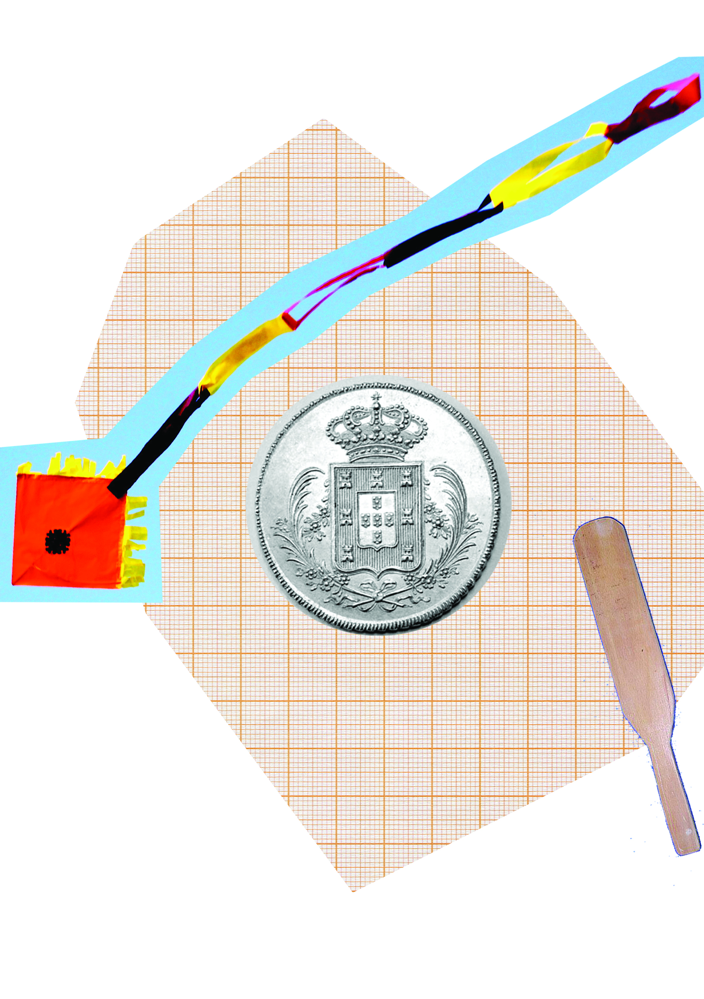
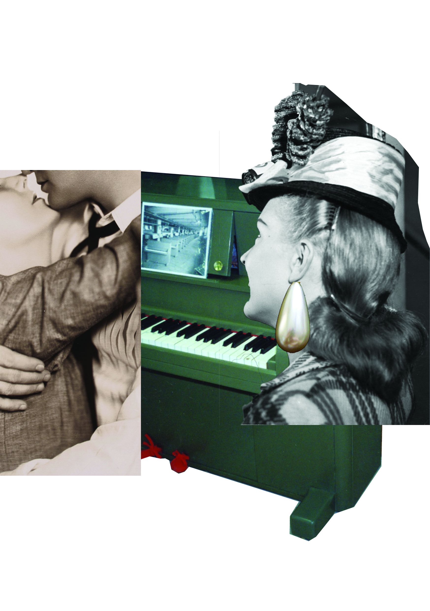
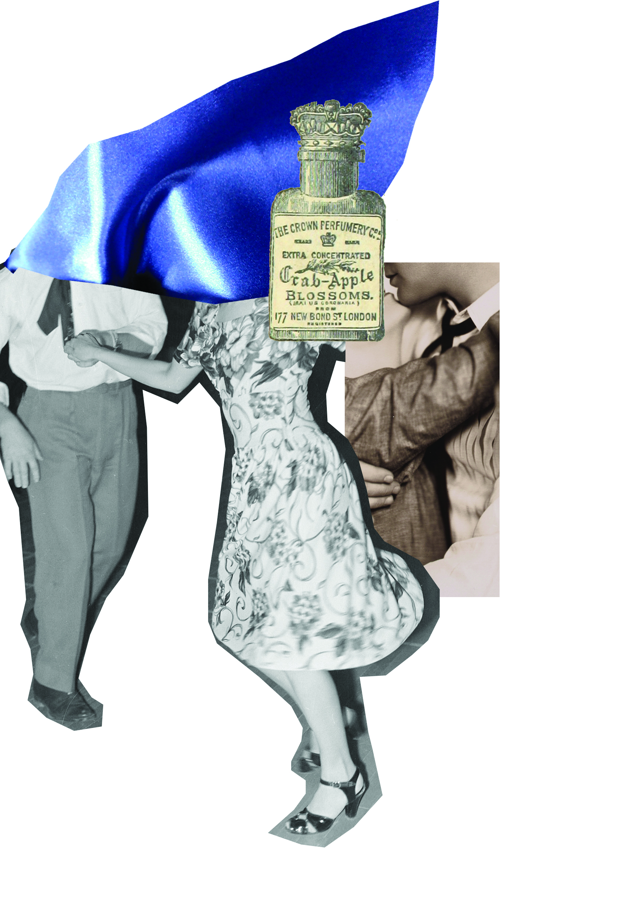
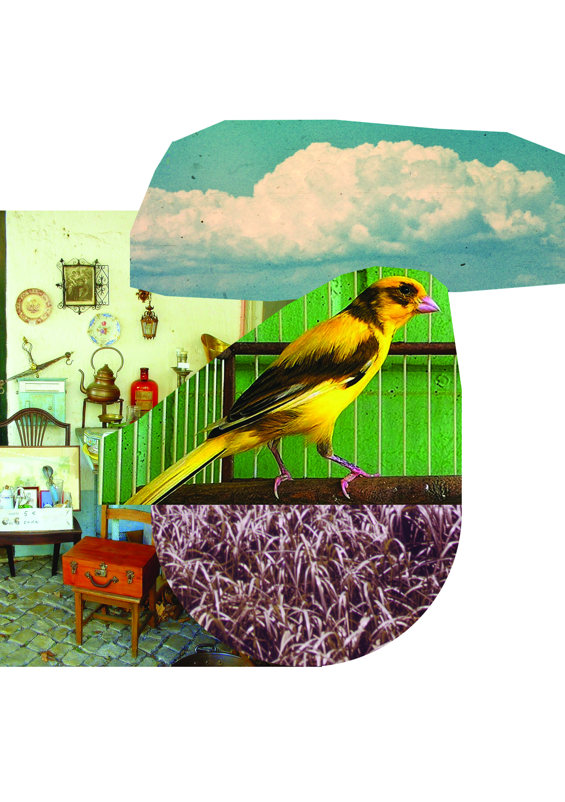

As calças do Raposo
e outros causos de
ilusões e confusões
Medeiros e Albuquerque,
Machado de Assis,
Artur Azevedo,
Alberto de Oliveira,
Monteiro Lobato e
Lima Barreto
copyright© Editora Hedra LTDA2022
Direitos cedidos à Ayllon Editora LTDA
organização© Ieda Lebensztayn
ilustrações© Ana Lancman
edição Rogério Duarte
editor assistente Paulo Henrique Pompermaier
revisão Rogério Duarte
capa Ana Lancman
| conselho editorial | Adriano Scatolin, |
| Antonio Valverde, | |
| Caio Gagliardi, | |
| Jorge Sallum, | |
| Ricardo Valle, | |
| Tales Ab’Saber, | |
| Tâmis Parron |
Grafia atualizada segundo o Acordo Ortográfico da Língua
Portuguesa de 1990, em vigor no Brasil desde 2009.
Dados Internacionais de Catalogação na Publicação – CIP
(Câmara Brasileira do Livro, SP, Brasil)
______________________________________________________
Direitos reservados em língua
portuguesa somente para o Brasil
ayllon editora ltda
R. Fradique Coutinho, 1139
05416–011 São Paulo sp Brasil
Telefone/Fax +55 11 3097 8304
ayllon@hedra.com.br
Foi feito o depósito legal.
As calças do Raposo
e outros causos de
ilusões e confusões
Medeiros e Albuquerque,
Machado de Assis,
Artur Azevedo,
Alberto de Oliveira,
Monteiro Lobato e
Lima Barreto
Ieda Lebensztayn (organização)
1ª edição
São Paulo 2022
medeiros e albuquerque
A José Veríssimo
A entrada de um novo inspetor era sempre no internato em que estudávamos um dos maiores sucessos; a do Raposo mais que nenhuma outra. Havia para isso razões especiais. O inspetor que o precedera, o Gomes, tinha saído depois de uma altercação violenta com a nossa classe, altercação acabada em vias de fato.
O homem era um velhinho baixo e careca — escandalosamente careca. A calva luzidia entendia-se rubicunda desde a testa até a nuca, onde havia alguns cabelinhos brancos.
Inspetor de alunos durante mais de quinze anos, tinha adquirido certas habilidades profissionais preciosas. O que se precisa de diplomacia para lidar com meninos de colégio nem todos podem avaliar! O Gomes era exímio. Ninguém poderia melhor fingir-se distraído e apesar de tudo seguir ao mesmo tempo os manejos de dois ou três que estivessem tentando perturbar o silêncio. Tinha mesmo uma ciência própria: sabia dormir… mas dormir, parecendo vigilante.
Há nos contos de fadas a eterna história de uns leões prodigiosos que, durante o sono, estão com os olhos abertos e, durante a vigília, com eles fechados. O Gomes chegara quase ao mesmo resultado. Tinha uma posição favorita — os cotovelos apoiados na mesa, segurando a cabeça com as mãos em pala diante dos olhos. Quando estava assim, parecia, às vezes, que cochilava. Era um engano. Não se passava nada na sala que ele não visse.
Via e calava. À hora do recreio chamava os que tinham estado brincando e, sem uma explicação, punha-os de castigo.
Em compensação, dormia noutras ocasiões a bom dormir e todos nós imaginávamos que ele estava com uma vigilância de Argos. Fossem lá adivinhar! De resto, não se pode imaginar cara mais neutra, mais impassível: nem olhos, nem lábios, nem faces — nada traduzia o que ele estava sentindo.
Aos poucos, porém, nós começamos a estudar-lhe a careca. Foi uma revelação!
Dizem os versos célebres de Bocage:
Nele o que não mentia era aquela esplêndida calva, brunida, lustrosa, espelhenta! Ali tudo se refletia. É verdade que no fim de contas as suas variações se reduziam aos tons diversos, principalmente do vermelho, que ela assumia. Mas que riqueza! Ia da brancura lirial à rubicunda tonalidade dos tomates maduros. E como há sujeitos que, pela letra, pelas linhas das mãos, por outros sinais, pretendem decifrar as emoções alheias, alguns havia entre nós que tinham chegado a fundar uma ciência nova: a carecomancia! O 114, o mais endiabrado de nós todos, tirava prognósticos seguros, quer da nuança especial assumida pela careca, quer do lugar por onde ela começava a colorir-se — porque, dizia ele, a vermelhidão ora vinha da direita, ora da esquerda, ora de trás para diante… A cólera, a simples contrariedade, a vontade de rir fortemente contida tinham marchas diversas.
O 117 era o nosso mago, o nosso adivinho, meteorologista sagaz, que pressentia tempestades no céu cor-de-rosa daquela calva.
Fosse como fosse, um belo dia, deu-se na classe um charivari2 medonho. Na semana anterior tinha havido dois dias feriados; naquela em que nós estávamos a folhinha marcava outro. O Gomes, conversando com o diretor, dissera-lhe que seria melhor não dar saída, ponderando que se aproximava a época dos exames.
Quando a resolução foi tomada, quando principalmente nós soubemos que a iniciativa partira do Gomes, ficamos furiosos. Organizamos o que o 117 chamou uma “pateada muda”. Nem um grito, nem uma palavra, nem um gesto de revolta. Todos, porém, deixariam os livros nas carteiras sem abri-los e passariam as duas horas do estudo a olhar para a careca do Gomes.
Dito e feito. — Éramos cento e vinte rapazes. Entramos em ordem na sala de estudo, cada um sentou-se e o inspetor tomou o seu lugar no alto do estrado. Não se abriu um livro, não se mexeu numa folha de papel. Silêncio profundo. O Gomes, admirado, examinou a sala, pressentiu qualquer coisa de revolucionário e atirou à classe uma ordem seca:
— Estudem!
Ninguém se moveu. Todos, obstinadamente, fitavam-lhe a cabeça. O que se passou naquela careca eu sinto que não lhes poderei jamais dizer, com toda a verdade do caso! Ondas vermelhas ora a cobriam toda, ora afastavam-se… Havia momentos de absoluta brancura: parecia, então, uma bola de marfim. Logo após vinha, porém, uma vaga de sangue que a vestia de escarlate… — Que tempestades de cólera haveria lá por dentro!
— Estudem! — berrou de novo o Gomes.
Mas, teimosos, 240 olhos verrumaram-lhe o crânio nu. Já então a vasta calva não empalidecia mais… Tinha chegado ao vermelho fixo, ao ultravermelho. Passou ao roxo, um tom absolutamente novo, mesmo para a perspicácia do 117!
O inspetor ergueu a cabeça e fitou-nos. Estava congestionado, com os olhos a saltarem das órbitas, furioso:
— Estudem! — rugiu colérico.
Jogar assim o sério por tanto tempo era empresa difícil. Alguns, ao passo que a ira do Gomes ia crescendo, sentiam um desejo louco de rir. Quando, pela quarta vez, ele soltou um murro na mesa e gritou um novo, um tonitruante, um pavoroso “estudem!”, o 63 não pôde mais conter-se: teve um frouxo de riso, alto, inconveniente, e de mais a mais, contagioso. Ninguém conseguiu resistir… Nunca se viu gargalhada mais epidêmica: sacudiu, de ponta a ponta, a sala inteira.
O resto é que foi o diabo…
O Gomes, perdida a calma, absolutamente fora de si, atirou-se a um para dar-lhe. Em um momento, todos estávamos em bolo a defender o colega, a socar, a pisar, o desgraçado inspetor… Houve um sarilho medonho. O desgraçado, tendo apanhado tão monstruosa sova, foi, ainda por cima, despedido do colégio.
É evidente que depois disso a entrada do Raposo assumia uma importância especial.
Que homem seria o nosso novo inspetor? Poderíamos com ele?
Mal o vimos, dissemos todos intimamente:
“Vamos fazer o que quisermos, vamos pintar a manta!”
Era um velho alto, magro, de cara comprida. Usava barba toda, uma barba muito rala, que mal lhe vestia o rosto pálido, escaveirado. A testa era alta e larga, inteligente. Os olhos pretos tinham, entretanto, uma expressão de humildade, como jamais eu vi igual: olhos súplices, olhos de queixa e medo. Vestia uma sobrecasaca muito velha; velhíssimos eram também os punhos, o colarinho, a gravata, tudo a desfiar-se. Tinha, contudo, um quê de homem de boa sociedade; via-se que aquela roupinha surrada estava escrupulosamente escovada, limpinha, direitinha…
Ao mesmo tempo que o Raposo assumia o lugar de inspetor, um novo aluno aparecia. Era um filho dele. Tinha doze para treze anos, figura muito simpática, olhos e cabelos bem negros, aspecto gracioso e de viveza intelectual.
Apesar de tudo, foi acolhido com desconfiança. O 89 pareceu interpretar o pensamento geral, quando disse no recreio:
“Vai ser um espião!”
Nunca, entretanto, previsão alguma foi mais falsa! — Como se passou a vida desse menino, nos cinco anos em que fomos colegas, mal se imagina.
O velho Raposo era homem de certa cultura. Quando moço, fora na sua província político militante, ardente, pronto sempre ao combate pelo seu partido. No jornalismo, nos manejos eleitorais, mais tarde na Assembleia Provincial, tinha sido dos mais ativos, dos mais inteligentes. Começou, porém, ao cabo de certo tempo, a decair consideravelmente. Não é que se lhe tivesse apagado a inteligência, o merecimento. Quebrara-se nele a mola da vontade. Um desânimo inexplicável o tinha ido arredando das primeiras filas combatentes. Por quê? Quem o saberia dizer? Talvez esses pequenos desgostos, pequenas contrariedades domésticas, que não aniquilam de uma vez, mas limam pouco a pouco, roem de mansinho toda a energia dos que se julgam mais fortes… Um dia os do público, que não pressentiram a ação extremamente lenta desse mal microscópico, vêm com assombro ruir, sem explicação alguma, o grande tronco que parecia tão robusto… É um desabamento, um naufrágio.
Foi, de fato, um naufrágio, o do Raposo. Em um só ano, deixou a política, deixou o jornalismo, morreu-lhe a mulher, viu-se desempregado, desamparado, lutando com a miséria. Tinha um filho: pôs nele todos os seus sonhos de futuro. Que futuro podia, entretanto, dar-lhe?
Certo dia, subiu as escadas do palácio, onde morava o Presidente da Província, seu ex-companheiro da Assembleia, para pedir-lhe um lugar de porteiro…
— O quê, Raposo!… Não é possível!… Você feito porteiro! Que se diria do nosso partido! Não, senhor, eu lhe darei cousa melhor… Seria uma vergonha, não para você, mas para nós…
O Raposo saiu desconsolado, sorrindo tristemente, sem ânimo para dizer que comia apenas uma vez por dia, e mal… muito mal!…
Passaram semanas: nem porteiro, nem a tal “cousa melhor”… O Presidente esquecera-o. Ele viu então que, naquele acanhado meio provinciano, a mesma estúpida objeção surgiria em todos os lábios.
Quis vir para o Rio. Aqui, ninguém o conhecendo, podia até ser cocheiro ou varredor de ruas. Voltou ao palácio e obteve duas passagens gratuitas. Trazia algumas apresentações. De nada lhe serviram. Afinal foi ter ao nosso colégio. Propôs ao diretor ganhar 25$000 por mês, contanto que o filho aí estudasse. O diretor aceitou.
O Raposinho — como nós lhe chamávamos — era realmente a mais meiga das criaturas. A despeito da primeira prevenção, fez-se amar por todos.
Por todos — não. Havia um grupo de dez ou doze que o detestava: a escória do colégio, os rebeldes, os de mau caráter. Um deles principalmente, o 69, a quem nós chamávamos o Fuinha, multiplicava-lhe as picardias,3 as pilhérias4 de mau gosto.
Mas, assombroso de dedicação era o procedimento do velho inspetor. Adorando o filho, chegava a privar-se de falar com ele durante a semana inteira, só para não acusarem o menino de ser o espião de seus colegas.
Dava-lhe apenas pela manhã e à noite a sua bênção e acompanhava-a de um beijo; isto mesmo fazia-o bem claramente, à vista de todos.
Quando um fato ocorria, digno de castigo e cujos autores não eram conhecidos, o que obrigava a punir o grupo dos mais próximos, o Raposo incluía sempre o filho. O velho ficava às vezes com os olhos cheios de lágrimas. A injustiça revoltante era para ele, que a praticava conscientemente, só para não o acusarem de proteger o pequeno, uma dor de alma. Temia perder aquele emprego, interromper os estudos do menino. Estava pronto a submeter-se a tudo.
Certa vez, na classe, alguém, no meio do silêncio geral, pisou a cabeça de um fósforo de estalo. O inspetor perguntou quem fora. Ninguém se acusou. Insistiu. Viu-se então o Fuinha, cinicamente, levantar-se e dizer:
— Eu sei quem foi, seu inspetor. Foi seu Raposinho.
Era a mais evidente das falsidades: o estalo partira da outra banda da sala. Mas o velho teve apenas um momento de hesitação. Voltou para o filho os olhos mansos, os seus tristes olhos de cão batido, e mandou-o de castigo. Houve em toda a classe um movimento de revolta. O 63, um bom e leal companheiro, que estava ao lado do Raposinho, olhou para o Fuinha, como a dizer-lhe “Tu me pagas!”, e levantou-se :
— É mentira. Quem fez o barulho fui eu.
Todos nós compreendemos que ele se estava acusando em falso, indignado pela infâmia do Fuinha. Mas o Raposinho, que já se erguera para o castigo e viu também a generosidade do colega, atalhou logo:
— Não, senhor, fui eu mesmo…
O inspetor ficou perplexo. Logo, porém, o verdadeiro autor confessou sua falta. Como, porém, saber qual dos três que se acusavam fora, de fato, o responsável? Toda a sala andava por ver como se decidiria o caso. O inspetor voltou-se para o filho:
— Só uma pessoa pode ter feito o mal. Deve ter sido o senhor, porque, além de se acusar, foi visto pelo seu colega, que o denunciou… Vá para o castigo.
Nós tremíamos de raiva — raiva do Fuinha.
Minutos depois, tocou a sineta do recreio. Descemos, em forma, dois a dois, como um batalhão. Mas assim que chegamos ao pátio, mal o inspetor dera a ordem para debandar, ouviu-se um formidável sopapo, que o 63 aplicava na bochecha do Fuinha e todos, com a fúria em que estávamos, caímos-lhe em cima aos socos, aos pontapés…
O Diretor, chamado, veio a saber a realidade do fato e, fingindo-se embora muito zangado, deu-nos um simulacro de punição.
O Raposo tinha conquistado a estima geral. Fez-se respeitar pela brandura, pela delicadeza com que nos tratava. Nos colégios, um dos motivos por que os inspetores não infundem respeito aos alunos é pela sua habitual ignorância: são para os meninos um motivo de troça. Com ele, porém, não sucedia isto. Era para nós um auxiliar, um tira-dúvidas solícito, bondoso, instruído, que sabia explicar as cousas claramente. Do seu antigo ofício de jornalista ficara-lhe uma certa elegância de linguagem. Se havia um que raramente o consultava: era o filho; o velho evitava que o acusassem de preparar as lições do pequeno. Este, porém, inteligente e aplicado, só tinha notas boas e ótimas.
Todas estas virtudes do Raposo não impediam que nós brincássemos, que lhe déssemos sobejos5 motivos de aborrecimento: travessuras naturais, que não podíamos reprimir.
O velho inspetor saía de quinze em quinze dias com o filho. Guardava sempre um dinheirinho daqueles magros 25$, para levá-lo ao teatro, para fazê-lo passear, para vesti-lo com esmero. Quanto a si, era de uma avareza inacreditável: teve uma sobrecasaca que lhe durou três anos! Não se encostava nem na cadeira nem em parte alguma, para não gastar a roupa. Ao sentar-se, forrava a palhinha com um jornal para assim poupar mais as calças. Chegava, às vezes, a ficar com uma cabeleira de nazareno, a fim de economizar, enquanto fosse possível, a despesa necessária com o seu corte. Apesar de tudo, era asseadíssimo. Por mais surrada que estivesse sua roupa, andava sempre sem um grão de poeira, limpinha, escovadinha, direitinha. Mas a avareza que tinha para si era compensada com os milagres de prodigalidade6 que fazia para o filho! Os magros 25$ do seu ordenado cresciam, multiplicavam-se, chegavam para tudo. Vestia o Raposinho com apuro, dava-lhe quanto precisava, desde os livros de classe até os brinquedos. Meninos muito mais ricos do que ele — e quem o não era! — não aparentavam o bem-estar que ele mostrava. — Era deveras a pérola do colégio.
Fomos de ano em ano até o fim do curso. Fizemos os últimos exames, completamos os preparatórios. O Raposinho teve excelentes aprovações.
Para comemorar a saída de cada turma, o Diretor dava uma pequena festa. Quem viu em qualquer parte uma dessas festas escolares já sabe qual é o seu padrão invariável. A nossa foi como as outras. O Diretor teve, porém, uma ideia delicada: mandou fazer para cada um dos que saíam uma espécie de fé de ofício, caderno de todas as notas escolares. Era um livro de folhas de pergaminho. Cada folha tinha sido consagrada a uma aula. Transcritas todas as notas, havia em baixo a assinatura e uma frase de saudação do professor respectivo. No frontispício, o retrato do Diretor. Na última página o da turma que completava o curso. O livro estava ricamente encadernado, fechado em um estojo de marroquina. Seria mais tarde uma agradável lembrança da vida colegial.
A entrega tinha de ser feita em uma sessão solene: música, discurso do Diretor e de um professor, resposta de um aluno, a seguir a dádiva dos prêmios — primeiro aos da turma mais adiantada, depois às outras.
Nesses dias a vasta sala de recepções enchia-se com as famílias dos alunos; era uma festiva multidão de moças, senhoras, de graves sujeitos encasacados e enluvados. As famílias dos que terminavam o curso, tinham lugar à parte, bem à frente. O Secretário do colégio chamava o premiado, o Diretor entregava-lhe o livro, dava-lhe com um falso ar paternal um beijo na testa e o menino voltava para junto do pai ou mãe, que o abraçavam ruidosamente.
Contava-se de um pequeno, estudioso mas endiabradíssimo, o 72, que só para pregar uma peça ao Diretor quando o fosse beijar, esfregara na testa, minutos antes de receber o prêmio, um dente de alho! Daí por diante o Diretor passou a dar uns beijos mais circunspectos, mal roçando os lábios na testa de cada um.
Apesar do convencionalismo de tudo aquilo, apesar de conhecermos, ponto por ponto, como correria cada um dos detalhes da festa, ela nos punha num júbilo louco. Demais, era para o resto dos colegas o momento das férias; para nós — uma turma de quinze — a saída definitiva.
O Raposo estava radiante de alegria. Tinha tido, dias antes, uma preocupação: que faria do filho? onde iria ele morar, enquanto cursasse a Faculdade de Medicina?
Felizmente, tudo se resolvera do melhor modo. O Diretor o aceitara como professor de História, tendo apenas direito a casa e comida. Por outro lado, entretanto, os ordenados do velho ficaram elevados a 60$000 — 60$000, uma fortuna!
Naquele dia, o inspetor inaugurou uma fatiota nova: sobrecasaca e colete pretos, calças claras. Tinha uma gravata elegante, botinas de verniz, estava pimpão, catita,7 janota…8 Mais do que isso: parecia haver arranjado uma cara também nova… Não porque tivesse feito a barba e cortado o cabelo, que estava aparadinho com toda a correção, mas porque os seus mansos olhos de cão batido eram bem outros: rutilavam, tinham o desusado brilho de uma alegria, de que ninguém os vira jamais revestidos: eram olhos de triunfador!
A notícia de que o Raposinho ia ser professor divulgou-se logo no colégio. Todos olhavam sorrindo para o futuro catedrático com apenas os seus dezoito anos de idade. É verdade que ele fora aluno distintíssimo. Mas a transição não deixava de ser muito brusca. Demais, ele ali estava franzino, pequeno, delicado, — e todos nós lembrávamos do antigo professor, um velho alto, corpulento, sempre lambuzado do rapé que lhe pingava do grande nariz rubicundo.9
Tivesse embora, um mês depois, de vir a ser o Senhor Professor, o Raposinho seguiu, como nós, para a sala de estudo. O Diretor temia que os pequenos sujassem a roupa, que os maiores se espalhassem fumando às escondidas pelos cantos da casa e mandou que todos ficassem ali sentadinhos à espera da festa, que devia começar às 11 horas em ponto.
Fomos. O Fuinha lá estava, desesperado com a notícia de que o Raposinho ia ser um dos seus professores, olhando-o com olhos perversos de cólera e inveja.
Na mesa, o velho Raposo tinha uma fisionomia cheia de contentamento. Não havia quem não houvesse notado as suas calças claras, absolutamente escandalosas, porque até então ninguém o vira senão de preto. Na sala, o silêncio não era grande: as conversas entre vizinhos tinham sido permitidas. De quando em quando, um menino, levantando-se, aproximava-se da mesa do inspetor, a fim de pedir-lhe, segundo a frase consagrada, “para ir lá dentro”…
Afinal chegou o momento da festa. O salão nobre encheu-se. A música tomou o seu lugar numa saleta ao lado. Havia um rebuliço de leques, de plumas de chapéus em cabeças de moças… Aromas diversos espalhavam-se pelo ar, já das flores, que se estendiam em festões, já dos pequeninos lenços femininos agitados a cada momento… A música tocou em surdina uma valsa dengosa, que parecia enroscar-se em meneios lânguidos… Houve uma pausa… O rumor das conversas fazia-se mais alto… Todos nós tomamos lugares; entraram os professores. A música vibrou de novo. Acabada ela, seguiu-se o discurso do Diretor e depois o do professor incumbido de saudar-nos. Era um velhinho, lente de retórica, trêmulo e fanhoso. Começou em latim com uma frase de légua e meia: “Hae studia adolescentiam alunt, senectutem oblectant, secundas res ornant, adversis solatium ac perfugiunt preboent, delectant domi, non impediunt foris, pernoctant nobiscum, peregrinantur, rusticantur.”10 Nós tínhamos ouvido isso dez vezes, vinte vezes, cem vezes: nenhum ignorava essa apologia do estudo, sabíamos que era de Cícero,11 conhecíamos sua análise gramatical e lógica, estávamos fartos dela! O velho deu o seu recado como pôde, teve palmas, a música tocou uns compassos de qualquer cousa e seguiu-se, com a palavra, o Raposinho.
Quero crer que tenha dito as banalidades naturais: creio tanto mais, quanto no momento achei-o sublime. A sua ênfase juvenil contrastava, porém, com o ramerrão monótono do velho lente. Fizemos-lhe uma ovação. A orquestra deu-nos mais uma fatia de música, para indicar o intervalo, e começou então a distribuição de prêmios.
Fui eu o primeiro chamado. Ouvi ler a minha fé de ofício — que por sinal não fora nos primeiros anos um prodígio de brilhantismo. — O Diretor disse-me as vagas frases paternais do estilo, deu-me o beijo habitual e despachou-me com o prêmio debaixo do braço. Saí como um conquistador, comovido, e caí nos braços de meu pai, que me esperava. Era de praxe que “nesse momento solene” a música tocasse os primeiros compassos do hino brasileiro. Assim se fez. A cerimônia continuou.
Nisto, com um gesto discreto, vi que o Diretor me chamava.
— Olhe, meu filho, você tenha paciência, não está aqui ninguém que possa me fazer este favor: vá lá dentro e peça a seu Raposo que venha, porque é a hora de dar o prêmio ao filho dele…
Estávamos no intervalo entre o segundo e o terceiro aluno. O Raposinho era o quarto. A distribuição prosseguiu. Corri todo o colégio. Perguntei a criados, a empregados, a quantos encontrei pelos corredores, dos raros que não estavam na sala. Ninguém sabia. Ouvi a música voltar ao hino. Quando, porém, cheguei a uma porta para verificar se o velho tinha entrado, o Diretor pulara o nome do Raposinho, chamara o imediato, que acabava de receber o prêmio e estava nos braços do pai, abraçado, afagado… O velho alisava-lhe os cabelos com um gesto de meiguice maternal…
Saí de novo à procura do Raposo. Bati os dormitórios, os refeitórios, até o recreio, até a cozinha! Duas ou três vezes voltei à sala ao ouvir a música. Nada! O Diretor ia deixando o Raposinho. Os que saíam lá estavam recebendo os agrados de mães, de irmãs… Eram beijos, eram risos, eram abraços…
Afinal, descobri o Raposo.
Como o descobri!
Espiei pelo buraco da fechadura do gabinete de física e lá o vi espreitando também pela da porta, que comunicava para o salão. A porta ficava justamente ao lado da mesa do Diretor: dali ele via tudo. O Raposo estava de sobrecasaca e colete, mas sem as calças: as abas da sobrecasaca caíam sobre as ceroulas. As calças, tinha-as ele dependuradas no braço.
O Fuinha no momento em que saíamos da sala de estudo, havia tomado uma pena molhada em tinta e sorrateiramente salpicado as calças claras do inspetor. Quando o velho ia entrar no salão, um colega fez-lhe notar o fato: sobre o fundo cinzento claro cinco ou seis manchas pretas destacavam-se bem na frente. Não podia assim assistir à cerimônia. Ao perceber a cousa, as lágrimas saltaram-lhe dos olhos. Fechou-se naquele gabinete, tomou uma escova e, tiradas as calças, começou a lavar as nódoas para ver se elas saíam. Não foi possível! — Nisto, a solenidade começara.
No momento em que o surpreendi, nada era mais grotesco do que ver aquele velhote, de sobrecasaca e ceroulas, em um dos braços as calças e no outro a escova, espiando por um buraco de fechadura!
Pobre-diabo! Até naquele dia o caiporismo12 o perseguia! Todos tinham o direito de gozar o triunfo de seus filhos, todos podiam abraçá-los, beijá-los… Só ele ali estava— preso, ridículo…
O Diretor foi dando os prêmios a um por um. E era sempre o mesmo espetáculo, as mesmas demonstrações de alegria dos parentes jubilosos!
Afinal, chegou a vez do Raposinho. O Diretor tinha-o reservado para o fim. Não vendo chegar, nem eu, nem o velho e não faltando mais ninguém, teve de chamá-lo.
Chamou-o, entregou-lhe o que lhe cabia e, em honra dele pronunciou um pequeno discurso, anunciando que aquele rapazola ia ser um dos professores do colégio. Disse o seu mérito, o seu amor ao trabalho, o seu nobre caráter — e abraçou-o com efusão. Houve palmas — muitas palmas… A música, para dominá-las, vibrou mais forte… O pobrezinho, entretanto, acanhado, esteve um momento, perplexo, no meio da sala, sem saber, bem para onde devia ir… Nem um só dos colegas deixara de ter dois braços a que se acolhesse: só ele não os achava! Não compreendia a ausência do pai. O coraçãozinho batia-lhe de emoção e susto…
E durante esse tempo, a olhá-lo pelo buraco da fechadura, chorando de orgulho e pesar, o Raposo, cada vez mais grotesco, estendia ao filho, em trejeitos mudos, como se ele os pudesse ver, os braços em que o quereria apertar naquele momento! As lágrimas, que lhe caíam em fio, ele as ia limpando distraidamente nas calças claras, manchadas pelo Fuinha…

machado de assis
A escola era na rua do Costa, um sobradinho de grade de pau. O ano era de 1840. Naquele dia — uma segunda-feira, do mês de maio, — deixei-me estar alguns instantes na rua da Princesa a ver onde iria brincar a manhã. Hesitava entre o morro de São Diogo e o campo de Sant’Ana, que não era então esse parque atual, construção de gentleman, mas um espaço rústico, mais ou menos infinito, alastrado de lavadeiras, capim e burros soltos. Morro ou campo? Tal era o problema. De repente disse comigo que o melhor era a escola. E guiei para a escola. Aqui vai a razão.
Na semana anterior tinha feito dois suetos,13 e, descoberto o caso, recebi o pagamento das mãos de meu pai, que me deu uma sova de vara de marmeleiro. As sovas de meu pai doíam por muito tempo. Era um velho empregado do Arsenal de Guerra, ríspido e intolerante. Sonhava para mim uma grande posição comercial, e tinha ânsia de me ver com os elementos mercantis, ler, escrever e contar, para me meter de caixeiro. Citava-me nomes de capitalistas que tinham começado ao balcão. Ora, foi a lembrança do último castigo que me levou naquela manhã para o colégio. Não era um menino de virtudes.
Subi a escada com cautela, para não ser ouvido do mestre, e cheguei a tempo; ele entrou na sala três ou quatro minutos depois. Entrou com o andar manso do costume, em chinelas de cordovão,14 com a jaqueta de brim lavada e desbotada, calça branca e tesa e grande colarinho caído. Chamava-se Policarpo e tinha perto de cinquenta anos ou mais. Uma vez sentado, extraiu da jaqueta a boceta de rapé e o lenço vermelho, pô-los na gaveta; depois relanceou os olhos pela sala. Os meninos, que se conservaram de pé durante a entrada dele, tornaram a sentar-se. Tudo estava em ordem; começaram os trabalhos.
— Seu Pilar, eu preciso falar com você — disse-me baixinho o filho do mestre.
Chamava-se Raimundo este pequeno, e era mole, aplicado, inteligência tarda. Raimundo gastava duas horas em reter aquilo que a outros levava apenas trinta ou cinquenta minutos; vencia com o tempo o que não podia fazer logo com o cérebro. Reunia a isso um grande medo ao pai. Era uma criança fina, pálida, cara doente; raramente estava alegre. Entrava na escola depois do pai e retirava-se antes. O mestre era mais severo com ele do que conosco.
— O que é que você quer?
— Logo — respondeu ele com voz trêmula.
Começou a lição de escrita. Custa-me dizer que eu era dos mais adiantados da escola; mas era. Não digo também que era dos mais inteligentes, por um escrúpulo15 fácil de entender e de excelente efeito no estilo, mas não tenho outra convicção. Note-se que não era pálido nem mofino: tinha boas cores e músculos de ferro. Na lição de escrita, por exemplo, acabava sempre antes de todos, mas deixava-me estar a recortar narizes no papel ou na tábua, ocupação sem nobreza nem espiritualidade, mas em todo caso ingênua. Naquele dia foi a mesma cousa; tão depressa acabei, como entrei a reproduzir o nariz do mestre, dando-lhe cinco ou seis atitudes diferentes, das quais recordo a interrogativa, a admirativa, a dubitativa e a cogitativa. Não lhes punha esses nomes, pobre estudante de primeiras letras que era; mas, instintivamente, dava-lhes essas expressões. Os outros foram acabando; não tive remédio senão acabar também, entregar a escrita, e voltar para o meu lugar.
Com franqueza, estava arrependido de ter vindo. Agora que ficava preso, ardia por andar lá fora, e recapitulava o campo e o morro, pensava nos outros meninos vadios, o Chico Telha, o Américo, o Carlos das Escadinhas, a fina flor do bairro e do gênero humano. Para cúmulo de desespero, vi através das vidraças da escola, no claro azul do céu, por cima do morro do Livramento, um papagaio de papel, alto e largo, preso de uma corda imensa, que bojava no ar, uma cousa soberba. E eu na escola, sentado, pernas unidas, com o livro de leitura e a gramática nos joelhos.
— Fui um bobo em vir — disse eu ao Raimundo.
— Não diga isso — murmurou ele.
Olhei para ele; estava mais pálido. Então lembrou-me outra vez que queria pedir-me alguma cousa, e perguntei-lhe o que era. Raimundo estremeceu de novo, e, rápido, disse-me que esperasse um pouco; era uma cousa particular.
— Seu Pilar… — murmurou ele daí a alguns minutos.
— Que é?
— Você…
— Você quê?
Ele deitou os olhos ao pai, e depois a alguns outros meninos. Um destes, o Curvelo, olhava para ele, desconfiado, e o Raimundo, notando-me essa circunstância, pediu alguns minutos mais de espera. Confesso que começava a arder de curiosidade. Olhei para o Curvelo, e vi que parecia atento; podia ser uma simples curiosidade vaga, natural indiscrição; mas podia ser também alguma cousa entre eles. Esse Curvelo era um pouco levado do diabo. Tinha onze anos, era mais velho que nós.
Que me quereria o Raimundo? Continuei inquieto, remexendo-me muito, falando-lhe baixo, com instância, que me dissesse o que era, que ninguém cuidava dele nem de mim. Ou então, de tarde…
— De tarde, não — interrompeu-me ele —; não pode ser de tarde.
— Então agora…
— Papai está olhando.
Na verdade, o mestre fitava-nos. Como era mais severo para o filho, buscava-o muitas vezes com os olhos, para trazê-lo mais aperreado. Mas nós também éramos finos; metemos o nariz no livro, e continuamos a ler. Afinal cansou e tomou as folhas do dia, três ou quatro, que ele lia devagar, mastigando as ideias e as paixões. Não esqueçam que estávamos então no fim da Regência,16 e que era grande a agitação pública. Policarpo tinha decerto algum partido, mas nunca pude averiguar esse ponto. O pior que ele podia ter, para nós, era a palmatória.17 E essa lá estava, pendurada do portal da janela, à direita, com os seus cinco olhos do diabo. Era só levantar a mão, dependurá-la e brandi-la, com a força do costume, que não era pouca. E daí, pode ser que alguma vez as paixões políticas dominassem nele a ponto de poupar-nos uma ou outra correção. Naquele dia, ao menos, pareceu-me que lia as folhas com muito interesse; levantava os olhos de quando em quando, ou tomava uma pitada, mas tornava logo aos jornais, e lia a valer.
No fim de algum tempo — dez ou doze minutos — Raimundo meteu a mão no bolso das calças e olhou para mim.
— Sabe o que tenho aqui?
— Não.
— Uma pratinha que mamãe me deu.
— Hoje?
— Não, no outro dia, quando fiz anos…
— Pratinha de verdade?
— De verdade.
Tirou-a vagarosamente, e mostrou-me de longe. Era uma moeda do tempo do rei, cuido que doze vinténs ou dois tostões, não me lembro; mas era uma moeda, e tão moeda que me fez pular o sangue no coração. Raimundo revolveu em mim o olhar pálido; depois perguntou-me se a queria para mim. Respondi-lhe que estava caçoando, mas ele jurou que não.
— Mas então você fica sem ela?
— Mamãe depois me arranja outra. Ela tem muitas que vovô lhe deixou, numa caixinha; algumas são de ouro. Você quer esta?
Minha resposta foi estender-lhe a mão disfarçadamente, depois de olhar para a mesa do mestre. Raimundo recuou a mão dele e deu à boca um gesto amarelo, que queria sorrir. Em seguida propôs-me um negócio, uma troca de serviços; ele me daria a moeda, eu lhe explicaria um ponto da lição de sintaxe. Não conseguira reter nada do livro, e estava com medo do pai. E concluía a proposta esfregando a pratinha nos joelhos…
Tive uma sensação esquisita. Não é que eu possuísse da virtude uma ideia antes própria de homem; não é também que não fosse fácil em pregar uma ou outra mentira de criança. Sabíamos ambos enganar ao mestre. A novidade estava nos termos da proposta, na troca de lição e dinheiro, compra franca, positiva, toma lá, dá cá; tal foi a causa da sensação. Fiquei a olhar para ele, à toa, sem poder dizer nada.
Compreende-se que o ponto da lição era difícil, e que o Raimundo, não o tendo aprendido, recorria a um meio que lhe pareceu útil para escapar ao castigo do pai. Se me tem pedido a cousa por favor, alcançá-la-ia do mesmo modo, como de outras vezes; mas parece que era a lembrança das outras vezes, o medo de achar a minha vontade frouxa ou cansada, e não aprender como queria — e pode ser mesmo que em alguma ocasião lhe tivesse ensinado mal —, parece que tal foi a causa da proposta. O pobre-diabo contava com o favor — mas queria assegurar-lhe a eficácia, e daí recorreu à moeda que a mãe lhe dera e que ele guardava como relíquia ou brinquedo; pegou dela e veio esfregá-la nos joelhos, à minha vista, como uma tentação… Realmente, era bonita, fina, branca, muito branca; e para mim, que só trazia cobre no bolso, quando trazia alguma cousa, um cobre feio, grosso, azinhavrado…18
Não queria recebê-la, e custava-me recusá-la. Olhei para o mestre, que continuava a ler, com tal interesse, que lhe pingava o rapé do nariz.
— Ande, tome — dizia-me baixinho o filho.
E a pratinha fuzilava-lhe entre os dedos, como se fora diamante… Em verdade, se o mestre não visse nada, que mal havia? E ele não podia ver nada, estava agarrado aos jornais, lendo com fogo, com indignação…
— Tome, tome…
Relanceei os olhos pela sala, e dei com os do Curvelo em nós; disse ao Raimundo que esperasse. Pareceu-me que o outro nos observava, então dissimulei; mas daí a pouco deitei-lhe outra vez o olho, e — tanto se ilude a vontade! — não lhe vi mais nada. Então cobrei ânimo.
— Dê cá…
Raimundo deu-me a pratinha, sorrateiramente;19 eu meti-a na algibeira20 das calças, com um alvoroço que não posso definir. Cá estava ela comigo, pegadinha à perna. Restava prestar o serviço, ensinar a lição, e não me demorei em fazê-lo, nem o fiz mal, ao menos conscientemente; passava-lhe a explicação em um retalho de papel que ele recebeu com cautela e cheio de atenção. Sentia-se que despendia um esforço cinco ou seis vezes maior para aprender um nada; mas, contanto que ele escapasse ao castigo, tudo iria bem.
De repente, olhei para o Curvelo e estremeci; tinha os olhos em nós, com um riso que me pareceu mau. Disfarcei; mas daí a pouco, voltando-me outra vez para ele, achei-o do mesmo modo, com o mesmo ar, acrescendo que entrava a remexer-se no banco, impaciente. Sorri para ele e ele não sorriu; ao contrário, franziu a testa, o que lhe deu um aspecto ameaçador. O coração bateu-me muito.
— Precisamos muito cuidado — disse eu ao Raimundo.
— Diga-me isto só — murmurou ele.
Fiz-lhe sinal que se calasse; mas ele instava, e a moeda, cá no bolso, lembrava-me o contrato feito. Ensinei-lhe o que era, disfarçando muito; depois, tornei a olhar para o Curvelo, que me pareceu ainda mais inquieto, e o riso, dantes mau, estava agora pior. Não é preciso dizer que também eu ficara em brasas, ansioso que a aula acabasse; mas nem o relógio andava como das outras vezes, nem o mestre fazia caso da escola; este lia os jornais, artigo por artigo, pontuando-os com exclamações, com gestos de ombros, com uma ou duas pancadinhas na mesa. E lá fora, no céu azul, por cima do morro, o mesmo eterno papagaio,21 guinando a um lado e outro, como se me chamasse a ir ter com ele. Imaginei-me ali com os livros e a pedra embaixo da mangueira, e a pratinha no bolso das calças, que eu não daria a ninguém, nem que me serrassem; guardá-la-ia em casa, dizendo a mamãe que a tinha achado na rua. Para que me não fugisse, ia-a apalpando, roçando-lhe os dedos pelo cunho, quase lendo pelo tato a inscrição, com uma grande vontade de espiá-la.
— Oh! Seu Pilar! — bradou o mestre com voz de trovão.
Estremeci como se acordasse de um sonho, e levantei-me às pressas. Dei com o mestre, olhando para mim, cara fechada, jornais dispersos, e ao pé da mesa, em pé, o Curvelo. Pareceu-me adivinhar tudo.
— Venha cá! — bradou o mestre.
Fui e parei diante dele. Ele enterrou-me pela consciência dentro um par de olhos pontudos; depois chamou o filho. Toda a escola tinha parado; ninguém mais lia, ninguém fazia um só movimento. Eu, conquanto não tirasse os olhos do mestre, sentia no ar a curiosidade e o pavor de todos.
— Então o senhor recebe dinheiro para ensinar as lições aos outros? — disse-me o Policarpo.
— Eu…
— Dê cá a moeda que este seu colega lhe deu! — clamou.
Não obedeci logo, mas não pude negar nada. Continuei a tremer muito. Policarpo bradou de novo que lhe desse a moeda, e eu não resisti mais, meti a mão no bolso, vagarosamente, saquei-a e entreguei-lha. Ele examinou-a de um e outro lado, bufando de raiva; depois estendeu o braço e atirou-a à rua. E então disse-nos uma porção de cousas duras, que tanto o filho como eu acabávamos de praticar uma ação feia, indigna, baixa, uma vilania, e para emenda e exemplo íamos ser castigados. Aqui pegou da palmatória.
— Perdão, seu mestre… — solucei eu.
— Não há perdão! Dê cá a mão! Dê cá! Vamos! Sem-vergonha! Dê cá a mão!
— Mas, seu mestre…
— Olhe que é pior!
Estendi-lhe a mão direita, depois a esquerda, e fui recebendo os bolos22 uns por cima dos outros, até completar doze, que me deixaram as palmas vermelhas e inchadas. Chegou a vez do filho, e foi a mesma cousa; não lhe poupou nada, dois, quatro, oito, doze bolos. Acabou, pregou-nos outro sermão. Chamou-nos sem-vergonhas, desaforados, e jurou que, se repetíssemos o negócio, apanharíamos tal castigo que nos havia de lembrar para todo o sempre. E exclamava:
— Porcalhões! Tratantes! Faltos de brio!
Eu, por mim, tinha a cara no chão. Não ousava fitar ninguém, sentia todos os olhos em nós. Recolhi-me ao banco, soluçando, fustigado pelos impropérios do mestre. Na sala arquejava o terror; posso dizer que naquele dia ninguém faria igual negócio. Creio que o próprio Curvelo enfiara de medo. Não olhei logo para ele, cá dentro de mim jurava quebrar-lhe a cara, na rua, logo que saíssemos, tão certo como três e dois serem cinco.
Daí a algum tempo olhei para ele; ele também olhava para mim, mas desviou a cara, e penso que empalideceu. Compôs-se e entrou a ler em voz alta; estava com medo. Começou a variar de atitude, agitando-se à toa, coçando os joelhos, o nariz. Pode ser até que se arrependesse de nos ter denunciado; e na verdade, por que denunciar-nos? Em que é que lhe tirávamos alguma cousa?
“Tu me pagas! Tão duro como osso!”, dizia eu comigo.
Veio a hora de sair, e saímos; ele foi adiante, apressado, e eu não queria brigar ali mesmo, na rua do Costa, perto do colégio; havia de ser na rua Larga de São Joaquim. Quando, porém, cheguei à esquina, já o não vi; provavelmente escondera-se em algum corredor ou loja; entrei numa botica, espiei em outras casas, perguntei por ele a algumas pessoas, ninguém me deu notícia. De tarde faltou à escola.
Em casa não contei nada, é claro; mas para explicar as mãos inchadas, menti a minha mãe, disse-lhe que não tinha sabido a lição. Dormi nessa noite, mandando ao diabo os dous meninos, tanto o da denúncia como o da moeda. E sonhei com a moeda; sonhei que, ao tornar à escola, no dia seguinte, dera com ela na rua, e a apanhara, sem medo nem escrúpulos…
De manhã, acordei cedo. A ideia de ir procurar a moeda fez-me vestir depressa. O dia estava esplêndido, um dia de maio, sol magnífico, ar brando, sem contar as calças novas que minha mãe me deu, por sinal que eram amarelas. Tudo isso, e a pratinha… Saí de casa, como se fosse trepar ao trono de Jerusalém. Piquei o passo para que ninguém chegasse antes de mim à escola; ainda assim não andei tão depressa que amarrotasse as calças. Não, que elas eram bonitas! Mirava-as, fugia aos encontros, ao lixo da rua…
Na rua encontrei uma companhia do batalhão de fuzileiros, tambor à frente, rufando. Não podia ouvir isto quieto. Os soldados vinham batendo o pé rápido, igual, direita, esquerda, ao som do rufo; vinham, passaram por mim, e foram andando. Eu senti uma comichão nos pés, e tive ímpeto de ir atrás deles. Já lhes disse: o dia estava lindo, e depois o tambor… Olhei para um e outro lado; afinal, não sei como foi, entrei a marchar também ao som do rufo, creio que cantarolando alguma cousa: Rato na casaca… Não fui à escola, acompanhei os fuzileiros, depois enfiei pela Saúde, e acabei a manhã na praia da Gamboa. Voltei para casa com as calças enxovalhadas, sem pratinha no bolso nem ressentimento na alma. E contudo a pratinha era bonita e foram eles, Raimundo e Curvelo, que me deram o primeiro conhecimento, um da corrupção, outro da delação; mas o diabo do tambor…

lima barreto
Estranhou o prefeito, ao ler a folha oficial, naquela manhã, que o seu diretor de Instrução Pública tivesse designado um inspetor escolar para reger uma escola elementar em Campo Grande.
Estranhou e não era possível que tal não se desse, mas quis atribuir o fato a injunções políticas.
Em Campo Grande, no castelo feudal do Caroba, cercado de cemitérios povoados, reside o poderoso senador Rapadura, prócer do P. R. C. e dono da cidade e arredores.
Ele mesmo, prefeito, tinha que lhe obedecer às ordens; e, certamente, o seu diretor da Instrução Pública designou um inspetor escolar para reger uma escola de a-b-c em obediência a pedidos do poderoso perturbador da paz dos campos-santos.
Mas, por que seria que Rapadura queria em Campo Grande um sábio inspetor escolar?
Vaidade de habitante do lugarejo, que o desejava ver assim honrado e exaltado?
Não era possível. O profanador dos túmulos, o desinquietador do sono dos defuntos, não tinha nenhum amor pelo lugar que habitava. Não pedira para ele nenhum melhoramento, e isto há vinte anos. Como é, então, que tinha tido esse assomo de vaidade? Era inexplicável. Ah… Era isto. O senador era conhecido pelas suas poucas letras e tinha mesmo dificuldades em ler os jornais, de modo que, ao crescer-lhe a idade, teve o capricho de aperfeiçoar a sua instrução primária.
Há trelas na velhice que bem parecem de menino. Os extremos tocam-se.
Sendo assim, não era decente que um senador, um legislador, fosse recapitular o quanto diz a aritmética de Trajano, sob os olhos de uma moça. O discípulo exigia um professor mais respeitável e graduado. Estava explicado o ato do seu diretor.
O prefeito almoçou, tomou o automóvel que o esperava no portão e partiu célere para o palácio da prefeitura.
Quando chegou a seu gabinete, que a muito custo pôde alcançar, o seu mesureiro secretário adiantou-se e antes de mais nada foi dizendo:
— Doutor, o novo diretor da instrução quer provocar uma revolução.
— Como?
— Com a tal nomeação de um inspetor escolar para professor elementar em Campo Grande.
— Revolução?
— Sim. Vossa Excelência não viu como as moças estão aí nos corredores amotinadas? Elas se dizem lesadas e os outros inspetores estão magoados e as atiçam contra Vossa Excelência.
O prefeito pensou e disse:
— Vá chamar-me o doutor Café.
O secretário foi em pessoa e em breve o diretor voltava, tendo atravessado as antessalas entre alas de professoras, adjuntas, estagiárias, normalistas, quase debaixo de vaia.
O prefeito perguntou-lhe logo com o sobrecenho carregado:
— Doutor Café, como é que o senhor nomeia para uma escola elementar um inspetor escolar?
— Que tem isso?
— E o regulamento?
— Vossa Excelência sabe perfeitamente que sou médico, entendo de patologia e algumas outras coisas mais…
— O Abel Parente já me havia dito.
— … de instrução pública do município, pois, nada entendo.
— Como?
Disse isto a Vossa Excelência no meu discurso de posse, não se lembra? Veio até nos jornais. Disse bem claro: “não entendo de instrução pública no Distrito Federal”.
— É verdade. Continuei.

monteiro lobato
Fica no extremo da rua o Grupo Escolar, de modo que a meninada passa e repassa à frente da minha janela. Notei que muitas crianças sofriam dos pés, pois traziam um no chão e outro calçado. Perguntei a uma delas:
— Que doença de pés é essa? Bicho arruinado?
O pequeno baixou a cabeça com acanhamento; depois confessou:
— É “inconomia”.
Compreendi. Como nos Grupos não se admitem crianças de pé no chão, inventaram as mães pobres aquela pia fraude. Um pé vai calçado; o outro, doente de imaginário mal crônico, vai descalço. Um par de botinas dura assim por dois. Quando o pé de botina em uso fica estragado, transfere-se a doença de um pé para outro, e o pé de botina de reserva entra em funções. Destarte, guardadas as conveniências, fica o dispêndio cortado pelo meio. Acata-se a lei e guarda-se o cobre.
Benditas sejam as mães engenhosas!

monteiro lobato
— …
— Minha idade? Trinta e seis…
— Então, venha.
Sempre que dona Expedita se anunciava no jornal, dando um número de telefone, aquele diálogo se repetia. Seduzidas pelos termos do anúncio, as donas de casa telefonavam-lhe para “tratar” — e vinha inevitavelmente a pergunta sobre a idade, com a também inevitável resposta dos trinta e seis anos. Isso desde antes da Grande Guerra. Veio o 1914 — ela continuou nos trinta e seis. Veio a batalha do Marne; veio o armistício — ela firme nos trinta e seis. Tratado de Versalhes — trinta e seis. Começos de Hitler e Mussolini — trinta e seis. Convenção de Munique — trinta e seis…
A futura guerra a reencontrará nos trinta e seis. O mais teimoso dos empaques! Dona Expedita já está “pendurada”, escorada de todos os lados, mas não tem ânimo de abandonar a casa dos trinta e seis anos — tão simpática!
E, como só tem trinta e seis anos, veste-se à moda dessa idade, um pouco mais vistosamente do que a justa medida aconselha. Erro grande! Se à força de cores claras, ruges e batons, não mantivesse aos olhos do mundo os seus famosos trinta e seis, era provável que desse a ideia duma bem aceitável matrona de sessenta…
Dona Expedita é “tia”. Amor só teve um lá pela juventude, do qual às vezes, nos “momentos de primavera”, ainda fala. Ah, que lindo moço! Um príncipe. Passou um dia a cavalo pela sua janela. Passou na tarde seguinte e ousou um cumprimento. Passou e repassou durante duas semanas — e foram duas semanas de cumprimentos e olhares de fogo. E só. Não passou mais — desapareceu da cidade para sempre.
O coração da gentil Expedita pulsou intensamente naqueles maravilhosos quinze dias — e nunca mais. Nunca mais namorou ou amou ninguém — por causa da casmurrice do pai.
Seu pai era um caturra de barbas à Von Tirpitz, português irredutível, desses que fogem de certos romances de Camilo e reentram na vida. Feroz contra o sentimentalismo. Não admitia namoros em casa, e nem que se pronunciasse a palavra casamento. Como vivesse setenta anos, forçou as duas únicas filhas a se estiolarem ao pé da sua catarreira crônica. “Filhas são para cuidar da casa e da gente.”
Morreu, afinal, e arruinado. As duas “tias” venderam a casa para pagamento das contas e tiveram de empregar-se. Sem educação técnica, os únicos empregos antolhados foram os de criada-grave, dama de companhia ou “tomadeira de conta” — graus levemente superiores à crua profissão normal de criada comum. O fato de serem de “boa família” autorizava-as ao estacionamento nesse degrau um pouco acima do último.
Um dia a mais velha morreu. Dona Expedita ficou só no mundo. Que fazer, senão viver? Foi vivendo e especializando-se em lidar com patroas. Por fim distraía-se com isso. Mudar de emprego era mudar de ambiente — ver caras novas, coisas novas, tipos novos. Um cinema — o seu cinema! O ordenado, sempre mesquinho. O maior de que se lembrava fora de cento e cinquenta mil réis. Caiu depois para cento e vinte; depois para cem; depois oitenta. Inexplicavelmente as patroas iam-lhe diminuindo a paga a despeito da sua permanência na linda idade dos trinta e seis anos…
Dona Expedita colecionava patroas. Teve-as de todos os tipos e naipes — das que obrigam as criadas a comprar o açúcar com que adoçam o café às que voltam para casa de manhã e nunca lançam os olhos sobre o caderno de compras. Se fosse escritora teria deixado o mais pitoresco dos livros. Bastava que fixasse metade do que viu e “padeceu”. O capítulo das pequeninas decepções seria dos melhores — como aquele caso dos quatrocentos mil-réis…
Foi certa vez em que, saída de um emprego, andava em procura de outro. Nessas ocasiões costumava encostar-se à casa de uma família que se dera com a sua, e lá ficava um mês ou dois até conseguir nova colocação. Pagava a hospedagem fazendo doces, no que era perita, sobretudo num certo bolo inglês que mudou de nome, passando a chamar-se o “bolo de dona Expedita”. Nesses interregnos comprava todos os dias um jornal especializado em anúncios domésticos, no qual lia atentamente a seção do “procura-se”. Com a velha experiência adquirida, adivinhava pela redação as condições reais do emprego.
— Porque “elas” publicam aqui uma coisa e querem outra — comentava filosoficamente, batendo no jornal. — Para esconder o leite, não há como as patroas!
E ia lendo, de óculos na ponta do nariz: “Precisa-se duma senhora de meia idade para servicinhos leves”.
— Hum! Quem lê isto pensa que é assim mesmo — mas não é. O tal servicinho leve não passa de isca — é a minhoca do anzol. A mim é que não me enganam, as biscas…
Lia todos os “procura-se”, com um comentário para cada um, até que se detinha no que lhe cheirava melhor. “Precisa-se duma senhora de meia-idade para serviços leves em casa de fino tratamento.”
— Este, quem sabe? Se é casa de fino tratamento, pelo menos fartura há de haver. Vou telefonar.
E vinha a telefonada do costume com a eterna declaração dos trinta e seis anos.
O hábito de lidar com patroas manhosas levou-a a lançar mão de vários recursos estratégicos; um deles: só “tratar” pelo telefone e não dar-se como ela mesma. “Estou falando em nome duma amiga que procura emprego.” Desse modo tinha mais liberdade e jeito de sondar a “bisca”.
— “Essa amiga é uma excelente criatura” — e vinham bem dosados elogios. — “Só que não gosta de serviços pesados.”
— “Que idade?
— “Trinta e seis anos. Senhora de muito boa família — mas por menos de cento e cinquenta mil-réis nunca se empregou.
— “É muito. Aqui o mais que pagamos é cento e dez — sendo boa.
— “Não sei se ela aceitará. Hei de ver. Mas qual é o serviço?
— “Leve. Cuidar da casa, fiscalizar a cozinha, espanar — arrumar…
— “Arrumar? Então é arrumadeira que a senhora quer?”
E dona Expedita pendurava o fone, arrufada, murmurando: “Outro ofício!”.
O caso dos quatrocentos mil-réis foi o seguinte. Ela andava sem emprego e a procurá-lo na seção do “procura-se”. Súbito, esbarrou com esta maravilha: “Precisa-se duma senhora de meia-idade para fazer companhia a uma enferma; ordenado, quatrocentos mil-réis”.
Dona Expedita esfregou os olhos. Leu outra vez. Não acreditou. Foi em busca duns óculos novos adquiridos na véspera. Sim. Lá estava escrito quatrocentos mil-réis!…
A possibilidade de apanhar um emprego único no mundo fê-la pular. Correu a vestir-se, a pôr o chapeuzinho, a avivar as cores do rosto e voou pelas ruas afora. Foi dar com os costados numa rua humilde; nem rua era — numa “avenida”. Defronte à casa indicada — casinha de porta e duas janelas — havia uma dúzia de pretendentes.
— Será possível? O jornal saiu agorinha e já tanta gente por aqui?
Notou que entre as postulantes predominavam senhoras bem-vestidas, com o aspecto de “damas envergonhadas”. Natural que assim fosse porque um emprego de quatrocentos mil-réis era positivamente um fenômeno. Nos seus… trinta e seis anos de vida terrena jamais tivera notícia de nenhum. Quatrocentos por mês! Que mina! Mas como um emprego assim em casa tão modesta? “Já sei. O emprego não é aqui. Aqui é onde se trata — casa do jardineiro, com certeza…”
Dona Expedita observou que as postulantes entravam de cara risonha e saíam de cabeça baixa. Evidentemente a decepção da recusa. E o seu coração batia de gosto ao ver que todas iam sendo recusadas. Quem sabe? Quem sabe se o destino marcara justamente a ela como a eleita?
Chegou por fim a sua vez. Entrou. Foi recebida por uma velha na cama. Dona Expedita nem precisou falar. A velha foi logo dizendo:
— Houve erro no jornal. Mandei por quarenta mil-réis e puseram quatrocentos… Tinha graça eu pagar quatrocentos a uma criada, eu que vivo à custa do meu filho, sargento da polícia, que nem isso ganha por mês…
Dona Expedita retirou-se com cara exatamente igual à das outras.
O pior da luta entre criados e patroas é que estas são compelidas a exigir o máximo, e as criadas, por natural defesa, querem o mínimo. Nunca jamais haverá acordo, porque é choque de totalitarismo com democracia.
Um dia, entretanto, dona Expedita teve a maior das surpresas: encontrou uma patroa absolutamente identificada com suas ideias quanto ao “mínimo ideal” — e, mais que isso, entusiasmada com esse minimalismo — a ajudá-la a minimizar o minimalismo!
Foi assim. Dona Expedita estava pela vigésima vez na tal família amiga, à espera de nova colocação. Lembrou-se de recorrer a uma agência, para a qual telefonou. “Quero uma colocação assim, assim, de duzentos mil-réis, em casa de gente arranjada, fina e, se for possível, em fazenda. Serviços leves, bom quarto, banho. Aparecendo qualquer coisa deste gênero, peço que me telefonem” — e deu o número do aparelho e da casa.
Horas depois retinia a campainha do portão.
— É aqui que mora madame Expedita? — perguntou em língua atrapalhada uma senhora alemã, cheia de corpo, de bom aspecto.
A criadinha que atendeu disse que sim, fê-la entrar para o hall de espera e foi correndo avisar dona Expedita. “Uma estrangeira gorda, querendo falar com madame!”
— Que pressa, meu Deus! — murmurou a solicitada, correndo ao espelho para os retoques. — Nem três horas faz que telefonei. Agência boa, sim…
Dona Expedita apareceu no hall com um excessozinho de ruge nos beiços de múmia. Apareceu e conversou — e maravilhou-se, porque pela primeira vez na vida encontrava a patroa ideal. A mais sui generis das patroas, de tão integrada no ponto de vista das “senhoras de meia-idade que procuram serviços leves”.
O diálogo travou-se num crescendo de animação.
— Muito boa tarde! — disse a alemã com a maior cortesia. — Então foi madame quem telefonou para a agência?
O “madame” causou espécie a dona Expedita.
— É verdade. Telefonei e dei as condições. A senhora gostou?
— Muito, mas muito mesmo! Era exatamente o que eu queria. Perfeito. Mas vim ver pessoalmente, porque o costume é anunciarem uma coisa e a realidade ser outra.
A observação encantou dona Expedita, cujos olhos brilharam.
— A senhora parece que está pensando com a minha cabeça. É justamente isso o que se dá, vivo eu dizendo. As patroas escondem o leite. Anunciam uma coisa e querem outra. Anunciam serviços leves e botam em cima das pobres criadas a maior trabalheira que podem. Eu falei, eu insisti com a agência: servicinhos leves…
— Isso mesmo! — concordou a alemã, cada vez mais encantada. — Serviços leves, bem leves, porque afinal de contas uma criada é gente — não é burro de carroça.
— Claro! Mulheres de certa idade não podem fazer serviços de mocinhas, como arrumar, lavar, cozinhar quando a cozinheira não vem. Ótimo! Quanto à acomodação, falei à agência em “bom quarto”…
— Exatamente! — concordou a alemã. — Bom quarto — com janelas. Nunca pude conformar-me com isso de as patroas meterem as criadas em desvãos escuros, sem ar, como se fossem malas. E sem banheiro em que tomem banho.
Dona Expedita era toda risos e sorrisos. A coisa lhe estava saindo maravilhosa.
— E banho quente! — acrescentou com entusiasmo.
— Quentíssimo! — berrou a alemã batendo palmas. — Isso para mim é ponto capital. Como pode haver asseio numa casa onde nem banheiro há para as criadas?
— Ah, minha senhora, se todas as patroas pensassem assim! — exclamou dona Expedita erguendo os olhos para o céu. — Que felicidade não seria o mundo! Mas no geral as patroas são más — e iludem as pobres criadas, para agarrá-las e explorá-las.
— Isso mesmo! — apoiou a alemã. — A senhora está falando como um livro de sabedoria. Para cada cem patroas haverá cinco ou seis que tenham coração — que compreendam as coisas…
— Se houver! — duvidou dona Expedita.
O entendimento das duas era perfeito: uma parecia o “dublê” da outra. Debateram o ponto dos “serviços leves” com tal mútua compreensão que os serviços ficaram levíssimos, quase nulos — e dona Expedita viu erguer-se diante de si o grande sonho de sua vida: um emprego em que não fizesse nada, absolutamente nada…
— Quanto ao ordenado — disse ela (que sempre pedia duzentos para deixar por oitenta) —, fixei-o em duzentos…
Avançou isso medrosamente e ficou à espera da inevitável repulsa. Mas a repulsa do costume pela primeira vez não veio. Bem ao contrário disso, a alemã concordou com entusiasmo.
— Perfeitamente! Duzentos por mês — e pagos no último dia de cada mês.
— Isso! — berrou dona Expedita levantando-se da cadeira. — Ou no comecinho. Essa história de pagamento em dia incerto nunca foi comigo. Dinheiro de ordenado é sagrado.
— Sacratíssimo! — urrou a alemã levantando-se também.
— Ótimo — exclamou dona Expedita. — Está tudo como eu queria.
— Sim, ótimo — repetiu a alemã. — Mas a senhora também falou em fazenda…
— Ah, sim, fazenda. Uma fazenda boa, com bastante frutas, bastante leite, bastante ovos porque há fazendas muito feias.
O quadro da fazenda bonita, toda frutas, leite e ovos, extasiou a alemã. Que maravilha…
Dona Expedita continuou:
— Gosto muito de lidar com pintinhos.
— Pintos? Ah, é o maior dos encantos! Adoro os pintos — as ninhadas… O nosso entendimento vai ser absoluto, madame…
O êxtase de ambas sobre a vida de fazenda foi subindo numa vertigem. Tudo quanto havia de sonhos incubados naquelas almas refloriu viçoso. Infelizmente a alemã teve a ideia de perguntar:
— E onde fica a sua fazenda, madame?
— A minha fazenda — repetiu dona Expedita refranzindo a testa.
— Sim, a sua fazenda — a fazenda para onde madame quer que eu vá…
— Fazenda pra onde eu quero que a senhora vá? — tornou a repetir dona Expedita, sem entender coisa nenhuma. — Fazenda, eu? Pois se eu tivesse fazenda lá andava a procurar emprego?
Foi a vez de a alemã arregalar os olhos, atrapalhadíssima. Também não estava entendendo coisa nenhuma. Ficou uns instantes no ar. Por fim:
— Pois madame não telefonou para a agência dizendo que tinha um emprego assim, assim, na sua fazenda?
— Minha fazenda uma ova! Nunca tive fazenda. Telefonei procurando emprego, se possível numa fazenda, isso sim…
— Então, então, então… — e a alemã enrubesceu como uma papoula.
— Pois é — disse dona Expedita percebendo afinal o quiproquó.23 — Estamos aqui feito duas idiotas, cada qual querendo emprego e pensando que a outra é a patroa…
O cômico da situação fê-las rirem-se — e gostosamente, já retomadas à posição de “senhoras de meia-idade que procuram serviços leves”.
— Esta foi muito boa! — murmurou a alemã levantando-se para sair. — Nunca me aconteceu coisa assim. Que agência, hein?
Dona Expedita filosofou.
— Eu bem que estava desconfiada. A esmola era demais. A senhora ia concordando com tudo que eu dizia — até com os banhos quentes! Ora, isso nunca foi linguagem de patroa — dessas biscas. A agência errou, talvez por causa do telefone, que estava danado hoje — além do que sou meio dura dos ouvidos…
Nada mais havia a dizer. Despediram-se. Depois que a alemã bateu o portão, dona Expedita fechou a porta, com um suspiro arrancado do fundo das tripas.
— Que pena, meu Deus! Que pena não existirem no mundo patroas que pensem como as criadas…

monteiro lobato
No princípio era o pântano, com valas de agrião e rãs coaxantes. Hoje é o parque do Anhangabaú, todo ele relvado, com ruas de asfalto, pérgola grata a namoriscos noturnos, a Eva de Brecheret, a estátua dum adolescente nu que corre — e mais coisas. Autos voam pela via central, e cruzam-se pedestres em todas as direções. Lindo parque, civilizadíssimo.
Atravessando-o certa tarde, vi formar-se ali um bolo de gente, rumo ao qual vinha vindo um polícia apressado.
“Fagocitose”, pensei. A rua é a artéria; os passantes, o sangue. O desordeiro, o bêbado, o gatuno são os micróbios maléficos, perturbadores do ritmo circulatório. O soldado de polícia é o glóbulo branco — o fagócito de Metchnikoff.
Está de ordinário parado no seu posto, circunvagando olhares atentos. Mal se congestiona o tráfego pela ação antissocial do desordeiro, o fagócito move-se, caminha, corre, cai a fundo sobre o mau elemento e arrasta-o para o xadrez.
Foi assim naquele dia.
Dia sujo, azedo. Céu dúbio, de decalcomania vista pelo avesso. Ar arrepiado.
Alguém perturbara a paz do jardim, e em redor desse rebelde logo se juntou um grupo de glóbulos vermelhos, vulgo passantes. E lá vinha agora o fagócito fardado restabelecer a harmonia universal.
O caso girava em torno de uma criança maltrapilha, que tinha a tiracolo uma caixa tosca de engraxate, visivelmente feita pelas suas próprias mãos. Muito sarapantado, com lágrimas a brilharem nos olhos cheios de pavor, o pequeno murmurava coisas de ninguém atendidas. Sustinha-o pela gola um fiscal da Câmara.
— Então, seu cachorrinho, sem licença, hein? — exclamava entre colérico e vitorioso o mastim municipal, focinho muito nosso conhecido. É um que não é um mas sim legião, e sabe ser tigre ou cordeiro conforme o naipe do contraventor.
A miserável criança evidentemente não entendia, não sabia que coisa era aquela de licença, tão importante, reclamada assim a empuxões brutais. Foi quando entrou em cena o polícia.
Este glóbulo branco era preto. Tinha beiço de sobejar e nariz invasor de meia cara, aberto em duas ventas acesas, relembrativas das cavernas de Trofônio. Aproximou-se e rompeu o magote com um napoleônico “Espalha!”.
Humildes alas se abriram àquele Sésamo, e a Autoridade, avançando, interpelou o Fisco:
— Que encrenca é esta, chefe?
— Pois este cachorrinho não é que está exercendo ilegalmente a profissão de engraxate? Encontrei-o banzando por aqui com estes troços, a fisgar com os olhos os pés dos transeuntes e a dizer “Engraxa, freguês”. Eu vi a coisa de longe.
Vim pé ante pé, disfarçando e, de repente, nhoc! “Mostre a licença”, gritei. “Que licença?”, perguntou ele com arzinho de inocência. “Ah, você diz que licença, cachorro? Está me debochando, ladrão? Espera que te ensino o que é licença, trapo!” E agarrei-o. Não quer pagar a multa. Vou levá-lo ao depósito, autuar a infração para proceder de acordo com as posturas — concluiu com soberbo entono o cariado canino da Maxila Fiscal.
O solene Mata-Piolho da Manopla Policial concordou.
— É isso mesmo. Casca-lhes!
E chiando por entre os dentes uma cusparada de esguicho, deu a sua sacudidela suplementar no menino. Depois voltou-se para os basbaques e ordenou com império de soba africano:
— Circula, paisanada! É “purivido” ajuntamentos de mais de um.
Os glóbulos vermelhos dispersaram-se em silêncio. O buldogue lá seguiu com o pequeno nas unhas. E o Pau de Fumo, em atitude de Bonaparte em face das pirâmides, ficou, de dedo no nariz e boca entreaberta, a gozar a prontidão com que, num ápice, sua energia resolvera o tumor maligno formado na artéria sob a sua fiscalização.
Também lá, no princípio, era o charco — terra negra, fofa, turfa tressuante, sem outra vegetação além dessas plantinhas miseráveis que sugam o lodo como minhocas. Aquém da várzea, na terra firme e alta, São Paulo crescia. Erguiam-se casas nos cabeços, e esgueiravam-se ladeiras encostas abaixo: a Boa Morte, o Carmo, o Piques; e ruas, Imperador, Direita, São Bento. Poetas cantavam-lhe as graças nascentes:
Ó Liberdade, ó Ponte Grande, ó Glória…
Deram-lhe um dia o Viaduto do Chá, esse arrojo… Os paulistanos pagavam sessenta réis para, ao atravessá-lo, conhecerem a vertigem dos abismos. E em casa narravam a aventura às esposas e mães, pálidas de espanto. Que arrojo de homem, o Jules Martin, que construíra aquilo!
Enquanto São Paulo crescia o Brás coaxava. Enluravam-se naquele brejal legiões de sapos e rãs. À noite, do escuro da terra um coral subia de coaxos, panpans de ferreiro, latidos de mimbuias, glu-glus de untanhas; e por cima, no escuro do ar, vaga-lumes ziguezagueantes riscavam fósforos às tontas.
E assim foi até o dia da avalanche italiana.
Quando lá no Oeste a terra roxa se revelou mina de ouro das que pagam duzentos por um, a Itália vazou para cá a espuma da sua transbordante taça de vida. E São Paulo, não bastando ao abrigo da nova gente, assistiu, atônito, ao surto do Brás.
Drenos sangraram em todos os rumos o brejal turfoso; a água escorreu; os espavoridos sapos sumiram-se aos pulos para as baixadas do Tietê; rã comestível não ficou uma para memória da raça; e, breve, em substituição aos guembês, ressurtiu a cogumelagem de centenas e centenas de casinhas típicas — porta, duas janelas e platibanda.
Numerosas ruas, alinhadas na terra cor de ardósia que já o sol ressequira e o vento erguia em nuvens de pó negro, margearam-se com febril rapidez desses prediozinhos térreos, iguais uns aos outros, como saídos do mesmo molde, pífios, mas únicos possíveis então. Casotas provisórias, desbravadoras da lama e vencedoras do pó à força de preço módico.
E o Brás cresceu, espraiou-se de todos os lados, comeu todo o barro preto da Mooca, bateu estacas no Marco da Meia Légua, lançou-se rumo à Penha, pôs de pé igrejas, macadamizou ruas, inçou-se de fábricas, viu surgirem avenidas e vida própria, e cinemas, e o Colombo, e o namoro, e o corso pelo Carnaval. E lá está hoje enorme, feito a cidade do Brás, separado de São Paulo pelo faixão vermelho da Várzea aterrada — Pest da Buda à beira do Tamanduateí plantada.
São duas cidades vizinhas, distintas de costumes e de almas já bem diversas.
Ir ao Brás é uma viagem. O Brás não é ali, como o Ipiranga; é lá do outro lado, embora mais perto que o Ipiranga. Diz-se vou ao Brás como quem diz vou à Itália. Uma Itália agregada como um bócio recente e autônomo a uma urbs antiga, filha do país; uma Itália função da terra negra, italiana por sete décimos e algo nuevo pelos restantes.
O Brás trabalha de dia e à noite gesta. Aos domingos fandanga ao som do bandolim. Nos dias de festa nacional (destes tem predileção pelo 21 de Abril: vagamente o Brás desconfia que o barbeiro da Inconfidência, porque barbeiro, havia de ser um patrício), nos dias feriados o Brás vem a São Paulo. Entope os bondes no travessio da Várzea e cá ensardinha-se nos autos: o pai, a mãe, a sogra, o genro e a filha casada no banco de trás; o tio, a cunhada, o sobrinho e o Pepino escoteiro no da frente; filhos miúdos por entremeio; filhos mais taludos ao lado do motorista; filhos engatinhantes debaixo dos bancos; filhos em estado fetal no ventre bojudo das matronas. Vergado de molas, o carro geme sob a carga e arrasta-se a meia velocidade, exibindo a Pauliceia aos olhos arregalados daquele exuberante cacho humano.
Finda a corrida, o auto debulha-se do enxame no Triângulo e o bando toma de assalto as confeitarias para um regabofe de spumones, gasosas, croquetes. E tão a sério toma a tarefa que ali pelas nove horas não restam iscas de empada nos armários térmicos, nem vestígios de sorvete no fundo das geladeiras. O Brás devora tudo, ruidosa, alegremente, e com massagens ajeitadoras do abdômen sai impando bem-aventurança estomacal. Caroços de azeitonas, palitos de camarões, guardanapos de papel, pratos de papelão seguem nas munhecas da petizada como lembrança da festa e consolo ao bersalherzinho que lá ficou de castigo em casa, berrando com goela de Caruso.
Em seguida, toca para o cinema! O Brás abarrota os de sessão corrida. O Brás chora nos lances lacrimogêneos da Bertini e ri nas comédias a gás hilariante da L-Ko mais do que autorizam os mil e cem da entrada. E repete a sessão, piscando o olho: é o jeito de dobrar a festa em extensão e obtê-la a meio preço — quinhentos e cinquenta réis, uma pechincha.
As mulheres do Brás, ricas de ovário, são vigorosíssimas de útero. Desovam quase filho e meio por ano, sem interrupção, até que se acabe a corda ou rebente alguma peça essencial da gestatória.
É de vê-las na rua. Bojudas de seis meses, trazem um Pepininho à mão e um choramingas à mama. À tarde o Brás inteiro chia de criançalha a chutar bolas de pano, a jogar pião, ou a piorra, ou o tento de telha, ou o tabefe, com palavreados mistos de português e dialetos de Itália. Mulheres escarranchadas às portas, com as mãos ocupadas em manobras de agulha de osso, espigaitam para os maridos os sucessos do dia, que eles ouvem filosoficamente, cachimbando calados ou cofiando a bigodeira à Humberto Primo.
De manhã esfervilha o Brás de gente estremunhada a caminho das fábricas.
A mesma gente reflui à tarde aos magotes — homens e mulheres de cesta no braço, ou garrafas de café vazias penduradas do dedo; meninas, rapazes, raparigotas de pouco seio, galantes, tagarelas, com o namoro rente.
Desce a noite, e nos desvãos de rua, nos becos, nas sombras, o amor lateja. Ciciam vozes cautelosas das janelas para os passeios; pares em conversa disfarçada nos portões emudecem quando passa alguém ou tosse lá dentro o pai.
Durante o escuro das fitas, nos cinemas, há contatos, longos, febricitantes; e quando nos intervalos irrompe a luz, não sabem os namorados o que se passou na tela — mas estão de olhos langues, em quebreira de amor.
É o latejar da messe futura. Todo aquele eretismo por música, com cicios de pensamentos de cartão-postal, estará morto no ano seguinte — legalizado pela Igreja e pelo juiz, transfeita a sua poesia em choro de criança e nas trabalheiras sem-fim da casa humilde.
Tal menina rosada, leve de andar, toda requebros e dengues, que passa na rua vestida com graça e atrai os olhares gulosos dos homens, não a reconhecereis dois anos depois na lambona filhenta que deblatera com o verdureiro a propósito do feixe de cenouras em que há uma menor que as outras.
Filho da lama negra, o Brás é como ela um sedimento de aluvião. É São Paulo, mas não é a Pauliceia. Ligados pela expansão urbana, separa-os uma barreira. O velho caso do fidalgo e do peão enriquecido.
Viram-se, ele e ela. Namoraram-se. Casaram.
Casados, proliferaram. Eram dois. O amor transformou-os em três. Depois em quatro, em cinco, em seis…
Chamava-se Pedrinho o filho mais velho.
De pé na porta a mãe espera o menino que foi à padaria. Entra o pequeno com as mãos abanando.
— Diz que subiu; custa agora oitocentos.
A mulher, com uma criança ao peito, franze a testa desconsolada.
— Meu Deus! Onde iremos parar? Ontem era a lenha; hoje é o pão… Tudo sobe. Roupa, pela hora da morte. José ganhando sempre a mesma coisa. Que será de nós, Deus do céu!
E voltando-se para o filho:
— Vá a outra padaria, quem sabe se lá… Se for a mesma coisa, traga só um pedaço.
Pedrinho sai. Nove anos. Franzino, doentio, sempre mal alimentado e vestido com os restos das roupas do pai.
Trabalha este num moinho de trigo, ganhando jornal insuficiente para a manutenção da família. Se não fosse a bravura da mulher, que lavava para fora, não se sabe como poderiam subsistir. Todas as tentativas feitas com o intuito de melhorarem a vida com indústrias caseiras esbarraram no óbice tremendo do Fisco. A fera condenava-os à fome. Assim escravizados, José perdeu aos poucos a coragem, o gosto de viver, a alegria. Vegetava, recorrendo ao álcool para alívio de uma situação sem remédio.
Bendito sejas, amável veneno, refúgio derradeiro do miserável, gole inebriante de morte que faz esquecer a vida e lhe resume o curso! Bendito sejas!
Apesar de moça, vinte e sete apenas, Mariana aparentava o dobro. A labuta permanente, os partos sucessivos, a chiadeira da filharada, a canseira sem-fim, o serviço emendado com o serviço, sem folga outra além da que o sono força, fizeram da bonita moça que fora a escanzelada besta de carga que era.
Seus dez anos de casada… Que eternidade de canseiras!…
Rumor à porta. Entra o marido. A mulher, ninando a pequena de peito, recebe-o com a má nova.
— O pão subiu, sabe?
Sem murmurar palavra o homem senta-se, apoiando nas mãos a cabeça.
Está cansado.
A mulher prossegue:
— Oitocentos réis o quilo agora. Ontem foi a lenha; hoje é o pão… E lá?
Sempre aumentaram o jornal?
O marido esboçou um gesto de desalento e permaneceu mudo, com o olhar vago. A vida era um jogo de engrenagens de aço entre cujos dentes se sentia esmagar. Inútil resistir. Destino, sorte.
Na cama, à noite, confabulavam. A mesma conversa de sempre. José acabava grunhindo rugidos surdos de revolta. Falava em revolução, saque. A esposa consolava-o, de esperança posta nos filhos.
— Pedrinho tem nove anos. Logo estará em ponto de ajudar-nos. Um pouco mais de paciência e a vida melhora.
Aconteceu que nessa noite Pedrinho ouviu a conversa e a referência à sua futura ação. Entrou a sonhar. Que fariam dele? Na fábrica, como o pai? Se lhe dessem a escolher, iria a engraxador. Tinha um tio no ofício, e em casa do tio era menor a miséria. Pingavam níqueis.
Sonho vai, sonho vem, brota na cabeça do menino uma ideia, que cresceu, tomou vulto extraordinário e fê-lo perder o sono. Começar já, amanhã, por que não? Faria ele mesmo a caixa; escovas e graxa, com o tio arranjaria. Tudo às ocultas, para surpresa dos pais! Iria postar-se num ponto por onde passasse muita gente. Diria como os outros: “Engraxa, freguês!”, e níqueis haviam de juntar-se no seu bolso. Voltaria para casa recheado, bem tarde, com ar de quem as fez… E mal a mãe começasse a ralhar, ele lhe taparia a boca despejando na mesa o monte de dinheiro. O espanto dela, a cara admirada do pai, o regalo da criançada com a perspectiva da ração em dobro! E a mãe a apontá-lo aos vizinhos: “Estão vendo que coisa? Ganhou, só ontem, primeiro dia, dois mil-réis!”. E a notícia a correr… E murmúrios na rua quando o vissem passar: “É aquele!”.
Pedrinho não dormiu essa noite. De manhãzinha já estava a dispor a madeira dum caixote velho sob forma de caixa de engraxate ao molde clássico. Lá a fez.
Os pregos, bateu com o salto de uma velha botina. As tábuas, serrou pacientemente com um facão dentado. Saiu coisa tosca e mal-ajambrada, de fazer rir a qualquer carapina e pequena demais — sobre ela só caberia um pé de criança igual ao seu. Mas Pedrinho não notou nada disso, e nunca trabalho nenhum de carpintaria lhe pareceu mais perfeito.
Conclusa a caixa, pô-la a tiracolo e esgueirou-se para a rua, às escondidas. Foi à casa do tio e lá obteve duas velhas escovas fora de uso, já sem pelos, mas que à sua exaltada imaginação se afiguraram ótimas. Graxa, conseguiu alguma raspando o fundo de quanta lata velha encontrou no quintal.
Aquele momento marcou em sua vida um apogeu de felicidade vitoriosa. Era como um sonho — e sonhando saiu para a rua. Em caminho viu o dinheiro crescer-lhe nas mãos, aos montes. Dava à família parte, e o resto encafuava.
Quando enchesse o canto da arca onde tinha suas roupas, montaria um “corredor”, pondo a jornal outros colegas. Aumentaria as rendas! Enriqueceria! Compraria bicicletas, automóvel, doces todas as tardes na confeitaria, livros de figura, uma casa, um palácio, outro palácio para os pais. Depois…
Chegou ao parque. Tão bonito aquilo — a relva tão verde, tosadinha… Havia de ser bom o ponto. Parou perto de um banco de pedra e, sempre sonhando as futuras grandezas, pôs-se a murmurar para cada passante, fisgando-lhe os pés:
— Engraxa, freguês!
Os fregueses passavam sem lhe dar atenção. “É assim mesmo”, refletia consigo o menino; “no começo custa. Depois se afreguesam.”
Súbito, viu um homem de boné caminhando para o seu lado. Olhou-lhe para as botinas. Sujas. Viria engraxar, com certeza — e o coração bateu-lhe apressado, no tumulto delicioso da estreia. Encarou o homem já a cinco passos e sorriu com infinita ternura nos olhos, num agradecimento antecipado em que havia tesouros de gratidão.
Mas em vez de lhe espichar o pé, o homem rosnou aquela terrível interpelação inicial:
— Então, cachorrinho, que é da licença?
Horas depois o fiscal aparecia em casa de Pedrinho com o pequeno pelo braço.
Bateu. O pai estava, mas quem abriu foi a mãe. O homem nesses momentos não aparecia, para evitar explosões. Ficou a ouvir do quarto o bate-boca.
O fiscal exigia o pagamento da multa. A mulher debateu-se, arrepelou-se. Por fim, rompeu em choro.
— Não venha com lamúrias — rosnou o buldogue —; conheço o truque dessa aguinha nos olhos. Não me embaça, não. Ou bate aqui os vinte mil-réis, ou penhoro toda esta cacaria. Exercer ilegalmente a profissão! Ora dá-se! E olhe cá, madama, considere-se feliz de serem só vinte. Eu é de dó de vocês, uns miseráveis; senão, aplicava o máximo. Mas se resiste dobro a dose!
A mulher limpou as lágrimas. Seus olhos endureceram, com uma chispa má de ódio represado a faiscar. O Fisco, percebendo-o, motejou:
— Isso. É assim que as quero — tesinhas, ah, ah.
Mariana nada mais disse. Foi à arca, reuniu o dinheiro existente — dezoito mil-réis ratinhados havia meses, aos vinténs, para o caso dalguma doença, e entregou-os ao Fisco.
— É o que há — murmurou com tremura na voz.
O homem pegou o dinheiro e gostosamente o afundou no bolso, dizendo:
— Sou generoso, perdoo o resto. Adeusinho, amor!
E foi à venda próxima beber dezoito mil-réis de cerveja.
Enquanto isso, no fundo do quintal, o pai batia furiosamente no menino.

machado de assis
Não, não se descreve a consternação que produziu em todo o Engenho Velho, e particularmente no coração dos amigos, a morte de Joaquim Fidélis. Nada mais inesperado. Era robusto, tinha saúde de ferro, e ainda na véspera fora a um baile, onde todos o viram conversado e alegre. Chegou a dançar, a pedido de uma senhora sexagenária, viúva de um amigo dele, que lhe tomou do braço, e lhe disse:
— Venha cá, venha cá, vamos mostrar a estes criançolas como é que os velhos são capazes de desbancar tudo.
Joaquim Fidélis protestou sorrindo; mas obedeceu e dançou. Eram duas horas quando saiu, embrulhando os seus sessenta anos numa capa grossa — estávamos em junho de 1879 —, metendo a calva na carapuça, acendendo um charuto e entrando lepidamente no carro.
No carro é possível que cochilasse; mas, em casa, malgrado a hora e o grande peso das pálpebras, ainda foi à secretária, abriu uma gaveta, tirou um de muitos folhetos manuscritos — e escreveu durante três ou quatro minutos umas dez ou onze linhas. As últimas palavras eram estas: “Em suma, baile chinfrim; uma velha gaiteira obrigou-me a dançar uma quadrilha; à porta um crioulo pediu-me as festas. Chinfrim!”. Guardou o folheto, despiu-se, meteu-se na cama, dormiu e morreu.
Sim, a notícia consternou a todo o bairro. Tão amado que ele era, com os modos bonitos que tinha, sabendo conversar com toda a gente, instruído com os instruídos, ignorante com os ignorantes, rapaz com os rapazes, e até moça com as moças. E depois, muito serviçal, pronto a escrever cartas, a falar a amigos, a concertar brigas, a emprestar dinheiro. Em casa dele reuniam-se à noite alguns íntimos da vizinhança, e às vezes de outros bairros; jogavam o voltarete24 ou o whist,25 falavam de política. Joaquim Fidélis tinha sido deputado até à dissolução da Câmara pelo marquês de Olinda, em 1863. Não conseguindo ser reeleito, abandonou a vida pública. Era conservador, nome que a muito custo admitiu, por lhe parecer galicismo político. Saquarema é o que ele gostava de ser chamado. Mas abriu mão de tudo; parece até que nos últimos tempos desligou-se do próprio partido, e afinal da mesma opinião. Há razões para crer que, de certa data em diante, foi um profundo cético e nada mais.
Era rico e letrado. Formara-se em direito no ano de 1842. Agora não fazia nada e lia muito. Não tinha mulheres em casa. Viúvo desde a primeira invasão da febre amarela, recusou contrair segundas núpcias, com grande mágoa de três ou quatro damas, que nutriram essa esperança durante algum tempo. Uma delas chegou a prorrogar perfidamente os seus belos cachos de 1845 até meados do segundo neto; outra, mais moça e também viúva, pensou retê-lo com algumas concessões, tão generosas quão irreparáveis. “Minha querida Leocádia”, dizia ele nas ocasiões em que ela insinuava a solução conjugal, “por que não continuaremos assim mesmo? O mistério é o encanto da vida”. Morava com um sobrinho, o Benjamim, filho de uma irmã, órfão desde tenra idade. Joaquim Fidélis deu-lhe educação e fê-lo estudar, até obter diploma de bacharel em ciências jurídicas, no ano de 1877.
Benjamim ficou atordoado. Não podia acabar de crer na morte do tio. Correu ao quarto, achou o cadáver na cama, frio, olhos abertos, e um leve arregaço irônico ao canto esquerdo da boca. Chorou muito e muito. Não perdia um simples parente, mas um pai, um pai terno, dedicado, um coração único. Benjamim enxugou, enfim, as lágrimas; e, porque lhe fizesse mal ver os olhos abertos do morto, e principalmente o lábio arregaçado, concertou-lhe ambas as coisas. A morte recebeu assim a expressão trágica, mas a originalidade da máscara perdeu-se.
— Não me digam isto! — bradava daí a pouco um dos vizinhos, Diogo Vilares, ao receber notícia do caso.
Diogo Vilares era um dos cinco principais familiares de Joaquim Fidélis. Devia-lhe o emprego que exercia desde 1857. Veio ele; vieram os outros quatro, logo depois, um a um, estupefatos, incrédulos. Primeiro chegou o Elias Xavier, que alcançara por intermédio do finado, segundo se dizia, uma comenda; depois entrou o João Brás, deputado que foi, no regímen das suplências, eleito com o influxo do Joaquim Fidélis. Vieram, enfim, o Fragoso e o Galdino, que lhe não deviam diplomas, comendas nem empregos, mas outros favores. Ao Galdino adiantou ele alguns poucos capitais, e ao Fragoso, arranjou-lhe um bom casamento… E morto! Morto para todo sempre! De redor da cama, fitavam o rosto sereno e recordavam a última festa, a do outro domingo, tão íntima, tão expansiva! E, mais perto ainda, a noite da antevéspera, em que o voltarete do costume foi até às onze horas.
— Amanhã não venham — disse-lhes o Joaquim Fidélis; — vou ao baile do Carvalhinho.
— E depois?…
— Depois de amanhã, cá estou.
E, à saída, deu-lhes ainda um maço de excelentes charutos, segundo fazia às vezes, com um acréscimo de doces secos para os pequenos, e duas ou três pilhérias26 finas… Tudo esvaído! Tudo disperso! Tudo acabado!
Ao enterro acudiram muitas pessoas gradas,27 dois senadores, um ex-ministro, titulares, capitalistas, advogados, comerciantes, médicos; mas as argolas do caixão foram seguras pelos cinco familiares e o Benjamim. Nenhum deles quis ceder a ninguém esse último obséquio, considerando que era um dever cordial e intransferível. O adeus do cemitério foi proferido pelo João Brás, um adeus tocante, com algum excesso de estilo para um caso tão urgente, mas, enfim, desculpável. Deitada a pá de terra, cada um se foi arredando da cova, menos os seis, que assistiram ao trabalho posterior e indiferente dos coveiros. Não arredaram pé antes de ver cheia a cova até acima, e depositadas sobre ela as coroas fúnebres.
A missa do sétimo dia reuniu-os na igreja. Acabada a missa, os cinco amigos acompanharam à casa o sobrinho do morto. Benjamim convidou-os a almoçar.
— Espero que os amigos do tio Joaquim serão também meus amigos — disse ele.
Entraram, almoçaram. Ao almoço falaram do morto; cada um contou uma anedota, um dito; eram unânimes no louvor e nas saudades. No fim do almoço, como tivessem pedido uma lembrança do finado, passaram ao gabinete, e escolheram à vontade, este uma caneta velha, aquele uma caixa de óculos, um folheto, um retalho qualquer íntimo. Benjamim sentia-se consolado. Comunicou-lhes que pretendia conservar o gabinete tal qual estava. Nem a secretária abrira ainda. Abriu-a então, e, com eles, inventariou o conteúdo de algumas gavetas. Cartas, papéis soltos, programas de concertos, menus de grandes jantares, tudo ali estava de mistura e confusão. Entre outras coisas acharam alguns cadernos manuscritos, numerados e datados.
— Um diário! — disse Benjamim.
Com efeito, era um diário das impressões do finado, espécie de memórias secretas, confidências do homem a si mesmo. Grande foi a comoção dos amigos; lê-lo era ainda conversá-lo. Tão reto caráter! Tão discreto espírito! Benjamim começou a leitura; mas a voz embargou-se-lhe28 depressa, e João Brás continuou-a.
O interesse do escrito adormeceu a dor do óbito. Era um livro digno do prelo. Muita observação política e social, muita reflexão filosófica, anedotas de homens públicos, do Feijó, do Vasconcelos, outras puramente galantes, nomes de senhoras, o da Leocádia, entre outros; um repertório de fatos e comentários. Cada um admirava o talento do finado, as graças do estilo, o interesse da matéria. Uns opinavam pela impressão tipográfica; Benjamim dizia que sim, com a condição de excluir alguma cousa, ou inconveniente ou demasiado particular. E continuavam a ler, saltando pedaços e páginas, até que bateu meio-dia. Levantaram-se todos; Diogo Vilares ia já chegar à repartição fora de horas; João Brás e Elias tinham onde estar juntos. Galdino seguia para a loja. O Fragoso precisava mudar a roupa preta, e acompanhar a mulher à rua do Ouvidor. Concordaram em nova reunião para prosseguir a leitura. Certas particularidades tinham-lhes dado uma comichão de escândalo, e as comichões coçam-se: é o que eles queriam fazer, lendo.
— Até amanhã — disseram.
— Até amanhã.
Uma vez só, Benjamim continuou a ler o manuscrito. Entre outras coisas, admirou o retrato da viúva Leocádia, obra-prima de paciência e semelhança, embora a data coincidisse com a dos amores. Era prova de uma rara isenção de espírito. De resto, o finado era exímio nos retratos. Desde 1873 ou 1874, os cadernos vinham cheios deles, uns de vivos, outros de mortos, alguns de homens públicos, Paula Sousa, Aureliano, Olinda, etc. Eram curtos e substanciais, às vezes três ou quatro rasgos29 firmes, com tal fidelidade e perfeição, que a figura parecia fotografada. Benjamim ia lendo; de repente deu com o Diogo Vilares. E leu estas poucas linhas:
Tenho-me referido muitas vezes a este amigo, e fá-lo-ei algumas outras mais, se ele me não matar de tédio, coisa em que o reputo profissional. Pediu-me há anos que lhe arranjasse um emprego, e arranjei-lho. Não me avisou da moeda em que me pagaria. Que singular gratidão! Chegou ao excesso de compor um soneto e publicá-lo. Falava-me do obséquio a cada passo, dava-me grandes nomes; enfim, acabou. Mais tarde relacionamo-nos intimamente. Conheci-o então ainda melhor. C’est le genre ennuyeux.30 Não é mau parceiro de voltarete. Dizem-me que não deve nada a ninguém. Bom pai de família. Estúpido e crédulo. Com intervalo de quatro dias, já lhe ouvi dizer de um ministério que era excelente e detestável: — diferença dos interlocutores. Ri muito e mal. Toda a gente, quando o vê pela primeira vez, começa por supô-lo um varão grave; no segundo dia dá-lhe piparotes. A razão é a figura, ou, mais particularmente, as bochechas, que lhe emprestam um certo ar superior.
A primeira sensação do Benjamim foi a do perigo evitado. Se o Diogo Vilares estivesse ali? Releu o retrato e mal podia crer; mas não havia negá-lo, era o próprio nome do Diogo Vilares, era a mesma letra do tio. E não era o único dos familiares; folheou o manuscrito e deu com o Elias:
Este Elias é um espírito subalterno,31 destinado a servir alguém, e a servir com desvanecimento, como os cocheiros de casa elegante. Vulgarmente trata as minhas visitas íntimas com alguma arrogância e desdém: política de lacaio ambicioso. Desde as primeiras semanas, compreendi que ele queria fazer-se meu privado; e não menos compreendi que, no dia que realmente o fosse, punha os outros no meio da rua. Há ocasiões em que me chama a um vão da janela para falar-me secretamente do sol e da chuva. O fim claro é incutir nos outros a suspeita de que há entre nós cousas particulares, e alcança isso mesmo, porque todos lhe rasgam muitas cortesias. É inteligente, risonho e fino. Conversa muito bem. Não conheço compreensão mais rápida. Não é poltrão nem maldizente. Só fala mal de alguém, por interesse; faltando-lhe interesse, cala-se; e a maledicência legítima é gratuita. Dedicado e insinuante. Não tem ideias, é verdade; mas há esta grande diferença entre ele e o Diogo Vilares: — o Diogo repete pronta e boçalmente as que ouve, ao passo que o Elias sabe fazê-las suas e plantá-las oportunamente na conversação. Um caso de 1865 caracteriza bem a astúcia deste homem. Tendo dado alguns libertos para a guerra do Paraguai, ia receber uma comenda. Não precisava de mim; mas veio pedir a minha intercessão, duas ou três vezes, com um ar consternado e súplice. Falei ao ministro, que me disse: “O Elias já sabe que o decreto está lavrado; falta só a assinatura do imperador”. Compreendi então que era um estratagema para poder confessar-me essa obrigação. Bom parceiro de voltarete; um pouco brigão, mas entendido.
— Ora o tio Joaquim! — exclamou Benjamim levantando-se. E depois de alguns instantes, reflexionou consigo: “Estou lendo um coração, livro inédito. Conhecia a edição pública, revista a expurgada. Este é o texto primitivo e interior, a lição exata e autêntica. Mas quem imaginaria nunca… Ora o tio Joaquim!”.
E, tornando a sentar-se, releu também o retrato do Elias, com vagar, meditando as feições. Posto lhe faltasse observação, para avaliar a verdade do escrito, achou que em muitas partes, ao menos, o retrato era semelhante. Cotejava essas notas iconográficas, tão cruas, tão secas, com as maneiras cordiais e graciosas do tio, e sentia-se tomado de um certo terror e mal-estar. Ele, por exemplo, que teria dito dele o finado? Com esta ideia, folheou ainda o manuscrito, passou por alto algumas damas, alguns homens públicos, deu com o Fragoso — um esboço curto e curtíssimo —, logo depois o Galdino, e quatro páginas adiante o João Brás. Justamente o primeiro levara dele uma caneta, pouco antes, talvez a mesma com que o finado o retratara. Curto era o esboço, e dizia assim:
Honesto, maneiras açucaradas e bonito. Não me custou casá-lo; vive muito bem com a mulher. Sei que me tem uma extraordinária adoração — quase tanta como a si mesmo. Conversação vulgar, polida e chocha.
O melhor coração do mundo e um caráter sem mácula; mas as qualidades do espírito destroem as outras. Emprestei-lhe algum dinheiro, por motivo da família, e porque me não fazia falta. Há no cérebro dele um certo furo, por onde o espírito escorrega e cai no vácuo. Não reflete três minutos seguidos. Vive principalmente de imagens, de frases translatas. Os “dentes da calúnia” e outras expressões, surradas como colchões de hospedaria, são os seus encantos. Mortifica-se facilmente no jogo, e, uma vez mortificado, faz timbre em perder, e em mostrar que é de propósito. Não despede os maus caixeiros. Se não tivesse guarda-livros, é duvidoso que somasse os quebrados. Um subdelegado, meu amigo, que lhe deveu algum dinheiro, durante dois anos, dizia-me com muita graça, que o Galdino quando o via na rua, em vez de lhe pedir a dívida, pedia-lhe notícias do ministério.
Nem tolo nem bronco. Muito atencioso, embora sem maneiras. Não pode ver passar um carro de ministro; fica pálido e vira os olhos. Creio que é ambicioso; mas na idade em que está, sem carreira, a ambição vai-se-lhe convertendo em inveja. Durante os dois anos em que serviu de deputado, desempenhou honradamente o cargo: trabalhou muito, e fez alguns discursos bons, não brilhantes, mas sólidos, cheios de fatos e refletidos. A prova de que lhe ficou um resíduo de ambição é o ardor com que anda à cata de alguns cargos honoríficos ou proeminentes; há alguns meses consentiu em ser juiz de uma irmandade de são José, e segundo me dizem, desempenha o cargo com um zelo exemplar. Creio que é ateu, mas não afirmo. Ri pouco e discretamente. A vida é pura e severa, mas o caráter tem uma ou duas cordas fraudulentas, a que só faltou a mão do artista; nas cousas mínimas, mente com facilidade.
Benjamim, estupefato, deu enfim consigo mesmo.
Este meu sobrinho, dizia o manuscrito, tem vinte e quatro anos de idade, um projeto de reforma judiciária, muito cabelo, e ama-me. Eu não o amo menos. Discreto, leal e bom — bom até à credulidade. Tão firme nas afeições como versátil nos pareceres. Superficial, amigo de novidades, amando no direito o vocabulário e as fórmulas.
Quis reler, e não pôde; essas poucas linhas davam-lhe a sensação de um espelho. Levantou-se, foi à janela, mirou a chácara e tornou dentro para contemplar outra vez as suas feições. Contemplou-as; eram poucas, falhas, mas não pareciam caluniosas. Se ali estivesse um público, é provável que a mortificação do rapaz fosse menor, porque a necessidade de dissipar a impressão moral dos outros dar-lhe-ia a força necessária para reagir contra o escrito; mas, a sós, consigo, teve de suportá-lo sem contraste. Então considerou se o tio não teria composto essas páginas nas horas de mau humor; comparou-as a outras em que a frase era menos áspera, mas não cogitou se ali a brandura vinha ou não de molde.
Para confirmar a conjectura,32 recordou as maneiras usuais do finado, as horas de intimidade e riso, a sós com ele, ou de palestra com os demais familiares. Evocou a figura do tio, com o olhar espirituoso e meigo, e a pilhéria grave; em lugar dessa, tão cândida e simpática, a que lhe apareceu foi a do tio morto, estendido na cama, com os olhos abertos, o lábio arregaçado. Sacudiu-a do espírito, mas a imagem ficou. Não podendo rejeitá-la, Benjamim tentou mentalmente fechar-lhe os olhos e concertar-lhe a boca; mas tão depressa o fazia, como a pálpebra tornava a levantar-se, a ironia arregaçava o beiço. Já não era o homem, era o autor do manuscrito.
Benjamim jantou mal e dormiu mal. No dia seguinte, à tarde, apresentaram-se os cinco familiares para ouvir a leitura. Chegaram sôfregos, ansiosos; fizeram-lhe muitas perguntas; pediram-lhe com instância para ver o manuscrito. Mas Benjamim tergiversava, dizia isto e aquilo, inventava pretextos; por mal de pecados, apareceu-lhe na sala, por trás deles, a eterna boca do defunto, e esta circunstância fê-lo ainda mais acanhado. Chegou a mostrar-se frio, para ficar só, e ver se com eles desaparecia a visão. Assim se passaram trinta a quarenta minutos. Os cinco olharam enfim uns para os outros, e deliberaram sair; despediram-se cerimoniosamente, e foram conversando, para suas casas:
— Que diferença do tio! Que abismo! A herança enfunou-o! Deixá-lo! Ah! Joaquim Fidélis! Ah! Joaquim Fidélis!

monteiro lobato
Ouvi certa vez uma conversa inesquecível. A esponja de doze anos não a esmaeceu33 em coisa nenhuma. Por que motivo certas impressões se gravam de tal maneira e outras se apagam tão profundamente?
Eu estava no cais, à espera do Arlanza, que me ia devolver de Londres um velho amigo já de longa ausência. O nevoeiro atrasara o navio.
— Só vai atracar às dez horas — informou-me um sabe-tudo de boné.
Bem. Tinha eu de matar uma hora de espera dentro dum nevoeiro absolutamente fora do comum, dos que negam aos olhos o consolo da paisagem distante. A visão morria a dez passos; para além, todas as formas desapareciam no algodoamento da névoa. Pensei nos fogs34 londrinos que o meu amigo devia trazer na alma e comecei a andar por ali à toa, entregue a esse trabalho, tão frequente na vida, de “matar o tempo”. Minha técnica em tais circunstâncias se resume em recordar passagens da vida. Recordar é reviver. Reviver os bons momentos tem as delícias do sonho.
Mas o movimento do cais interrompia amiúde o meu sonho, forçando-me a cortar e a reatar de novo o fio das recordações. Tão cheio de nós foi ele ficando que o abandonei. Uma das interrupções me pareceu mais interessante que a evocação do passado, porque a vida exterior é mais viva que a interior — e a conversa dos três carregadores era inegavelmente “água-forte”.
Três portugueses bem típicos, já maduros; um deles de rosto singularmente amarrotado pelos anos. Um incidente qualquer ali do cais dera origem à conversa.
— Pois esse caso, meu velho — dizia um deles —, me lembra a história da ema que tive num cercado. Também ela foi vítima dum animalzinho muitíssimo menor, e que seria esmagado, como esmagamos moscas, se lhe ficasse ao alcance do bico — mas não ficava…
Esse começo assanhou a curiosidade dos companheiros.
— Como foi? — perguntaram.
— Eu nesse tempo estava de cima, dono de terras, com casa minha, meus animais de cocheira, família. Foi um ano antes daquela rodada que me levou tudo… Peste de mundo! Tão bem que eu ia indo e afundei, perdi tudo, tive de rolar morro abaixo até bater com o lombo neste cais, entregue ao mais baixo dos serviços, que é o de carregador…
— Mas como foi o caso da ema?
Os ouvintes não queriam filosofias; ansiavam por pitoresco35 — e o homem por fim contou, depois de sacar o cachimbo, enchê-lo, acendê-lo. Devia ser história das que exigem pontuação a baforadas.
— Eu morava em minhas terras, lá onde vocês sabem — na Vacaria, zona de campos e mais campos, aquela planura sem-fim. E há lá muita ema. Conhecem? É a avestruz do Brasil, menor que a avestruz africana, mas mesmo assim um avejão dos mais alentados. Que força tem! Domar uma ema corresponde a domar um potro. Exige o mesmo muque. Mas são aves de boa índole. Domesticam-se facilmente e eu andava querendo ter uma em meus cercados.
— São de utilidade? — perguntou o utilitário da roda.
— De nenhuma; apenas enfeitam a casa. Aparece um visitante. “Viu minha ema?” — e lá o levamos a examiná-la de perto, a assombrar-se do tamanhão, a abrir a boca diante dos ovos. São assim como uma laranja-baiana das graúdas.
— E o gosto?
— Nunca provei. Ovos para mim só os de galinha. Mas, como ia dizendo, fiquei com ideia de apanhar uma ema nova para domesticá-la — e um belo dia eu mesmo o consegui graças à ajuda dum quiriquiri.
A história começava a interessar. Os companheiros do narrador ouviam-no suspensos.
— Como foi? Ande logo.
— Foi num dia em que saí a cavalo para uma chegada à fazendinha do João Coruja, que morava a uns seis quilômetros do meu rancho. Montei no meu pampa e fui varando a macega. Aquilo lá não há caminho, só trilhas de vai-um pelo capim rasteiro. Os olhos alcançam longe naquele mar de verde sujo que some na distância. Fui andando. De repente vi a uns trezentos metros longe qualquer coisa que se movia na macega.36 Parei. Firmei a vista. Era uma ema a dar voltas num círculo estreito. “Que diabo disto será aquilo?”, perguntei comigo mesmo. Emas eu vira muitas, mas sempre a pastarem sossegadas ou a fugirem no galope, nadando com as asas curtas. Assim a dar voltas era novidade. Fiquei de rugas na testa. Que será? A gente da roça conhece muito bem a natureza de tudo; se vê qualquer coisa na “forma da lei”, não se espanta porque é o natural; mas se vê qualquer coisa fora da lei, fica logo de orelha em pé — porque não é o natural. Que tinha aquela ema para dar tantas voltas em torno do mesmo ponto? Não era da lei. A curiosidade me fez esquecer o negócio do João Coruja. Torci a rédea ao pampa e lá me fui para a ema.
— E ela fugiu no galope…
— O natural seria isso, mas não fugiu. Ora, não há ema que não fuja do homem — nem ema, nem animal nenhum. Nós somos o terror da bicharia toda. Parei o pampa a cinco passos dela e nada, nada da ema fugir. Nem me viu; continuou nas suas voltas, com ar aflito. Pus-me a observá-la, intrigado. Seria seu ninho ali? Não era. Não havia sinal de ninho. A pobre ave girava e regirava, fazendo movimentos de pescoço sempre na mesma direção, para a esquerda, como se quisesse alcançar qualquer coisa com o bico. A roda que fazia era de raio curto, aí duns três metros, e pelo amassamento do capim calculei que já havia dado umas cem voltas.
— Interessante! — murmurou um dos companheiros.
— Foi o que pensei comigo mesmo. Mais que interessante: esquisitíssimo. Primeiro, não fugir de mim; segundo, continuar nas voltas aflitas, sempre com aqueles movimentos de pescoço para a esquerda. Que seria? Apeei e fui chegando. Olhei-a de bem perto. “A coisa é embaixo da asa”, vi logo. A pobre criatura tinha qualquer coisa sob a asa, e aquelas voltas e aquele movimento de pescoço eram para alcançar o sovaco. Aproximei-me mais. Segurei-a. A ema, arquejante, não fez a menor resistência. Deixou-se agarrar. Ergui-lhe a asa e vi…
Os ouvintes suspenderam o fôlego.
— … e vi uma coisa vermelha atracada ali, uma coisa que se assustou e voou, e foi pousar num galho seco a vinte passos de distância. Sabem o que era? Um quiriquiri…
— Que é isso?
— Um gaviãozinho dos menores que existem, assim do tamanho dum sanhaço — um gaviãozinho-carijó.
— Mas não disse que era vermelho?
— Estava vermelho do sangue da ema. Agarrara-se-lhe ao sovaco, que é um ponto despido de penas, e aferrara-se à carne com as unhas, enquanto com o bico ia arrancando nacos de carne viva e devorando-os. Aquele ponto do sovaco é o único sem defesa num corpo de ema, porque ela não o alcança com o bico. É como esse ponto que temos nas costas e não podemos coçar com as unhas. O quiriquiri conseguira localizar-se ali e estava a seguro de bicadas.
“Examinei a ferida. Pobre ema! Uma ferida enorme, assim dum palmo de diâmetro e onde o bico do quiriquiri fizera menos mal que suas garras, pois, como tinha de manter-se aferrado, ia mudando as garras à proporção que a carne dilacerada cedia. Nunca vi ferida mais arrepiante.”
— Coitada!
— As emas são duma estupidez famosa, mas o sofrimento abriu a inteligência daquela. Fê-la compreender que eu era o seu salvador — e a mim entregou-se como quem se entrega a um deus. O alívio que minha chegada lhe produziu, fazendo que o quiriquiri a largasse, iluminou-lhe os miolos.
— E o gaviãozinho?
— Ah, o patife, muito vermelho do sangue da ema, lá ficou no galho seco à espera de que eu me afastasse. Pretendia retomar ao banquete! “Eu já te curo, malvado!”, exclamei, sacando o revólver. Um tiro. Errei. O quiriquiri voou para longe.
— E a ema?
— Levei-a para casa, curei-a e tive-a lá por uns meses num cercado. Por fim soltei-a. Não vai comigo isso de escravizar os pobres animaizinhos que Deus fez para vida solta. Se no cercado estava livre dos quiriquiris, era em compensação uma escrava saudosa das correrias pelo campo. Se fosse consultada, certamente que preferiria os riscos da liberdade à segurança da escravidão. Soltei-a. “Vai, minha filha, segue o teu destino. Se outro quiriquiri te apanhar, arruma-te lá com ele.”
— Mas então é assim?
— Um velho caboclo da zona informou-me que aquilo é frequente. Esses minúsculos gaviõezinhos procuram as emas. Ficam traiçoeiramente a rondá-las, à espera de que se descuidem e levantem a asa. Eles, então, rápidos como setas, lançam-se; e se conseguem alcançar-lhes o sovaco, ali enterram as garras e ficam como carrapatos. E as emas, apesar de imensas comparadas com eles, acabam vencidas. Caem exaustas; morrem; e os malvadinhos repastam-se no carname durante dias.
— Mas como eles sabem? É o que mais admiro…
— Ah, meu caro, a natureza está inçada de coisas assim, que para nós são mistérios. Com certeza houve um quiriquiri que por acaso fez isso uma primeira vez, e como deu certo ensinou a lição aos outros. Estou convencido de que os animais ensinam uns aos outros o que vão aprendendo. Oh, vocês, criaturas da cidade, não imaginam que coisas interessantes há na natureza da roça…
O caso da ema foi comentado sob todos os ângulos — e deu um broto. Fez sair da memória do carregador de cara amarrotada uma história vagamente similar, em que bichinhos muito pequenos destruíram a vida moral dum homem.
— Sim, destruíram a vida dum bicho imensamente maior, como sou eu em comparação com as formigas. Fiquem vocês sabendo que a mim aconteceu coisa ainda pior que o acontecido à ema. Fui vítima dum formigueiro…
Todos arregalaram os olhos.
— Só se já foste hortelão e as formigas te comeram a fazenda — sugeriu um.
— Nada disso. Comeram-me mais que a fazenda, comeram-me a alma. Destruíram-me moralmente — mas foi sem querer. Pobrezinhas! Não as culpo de nada.
— Conta lá isso depressa!, Manuel. O Arlanza não tarda.
E o velho contou.
— Eu era o fiel da firma Toledo & Cia., com obrigação de tomar conta daquele grande armazém da rua Tal. Vocês sabem que tomar conta dum depósito de mercadorias é coisa séria, porque o homem se torna o único responsável por tudo quanto entra e sai. Ora, eu, português dos antigos, desses de antes quebrar que torcer, fui escolhido para “fiel” porque era fiel — era e sou. Não valho nada, sou um pobre homem ao léu, mas honradez está aqui. Meu orgulho sempre foi esse. Criei reputação desde menino. “O Manuel é dos bons; quebra mas não torce.” Pois não é que as formigas me quebraram?
— Conta lá isso depressa…
— A coisa foi assim. Na qualidade de fiel do armazém, nada entrava nem saía sem ser por minhas mãos. Eu fiscalizava tudo e com tal severidade que Toledo & Cia. juravam sobre mim como sobre a Bíblia. Certa vez entrou lá uma partida de trinta e dois sacos de arroz, que contei, conferi e fiz empilhar a um canto, junto a uma pilha de velhos caixões que lá estavam encostados de muito tempo. Trinta e dois. Contei-os e recontei-os e escrevi no livro de entradas trinta e dois, nem mais um, nem menos um. E no dia seguinte, conforme velho hábito meu, ainda me fui à pilha e recontei os sacos. Trinta e dois.
“— Pois muito que bem. O tempo se passa. O arroz lá fica meses à espera de negócio, até que um dia recebo do escritório ordem para entregá-lo ao portador. Vou dirigir a entrega. Fico na porta do armazém conferindo os sacos que por ali passavam à costas de dois carregadores — um, dois, vinte, trinta e um… Faltava o último.
“—Anda com isso! — berrei ao carregador que fora buscá-lo, mas o bruto aparece-me lá dos fundos com as mãos vazias:
“—Não há mais nada.
“—Como não há mais nada? — exclamei. — São trinta e dois. Falta um. Vá buscá-lo, vá ver.
“Ele foi e voltou na mesma:
“—Não há mais nada.
“—Impossível!
“E fui eu mesmo fazer a verificação e nada achei. Misteriosamente desaparecera um saco de arroz da pilha…
“— Aquilo pôs-me tonto de cabeça. Esfreguei os olhos. Cocei-me. Voltei ao livro de entradas; reli o assento; claro como o dia: trinta e dois. Além disso eu lembrava-me muito bem daquela partida por causa dum incidente agradável. Logo que terminei a contagem eu havia dito ‘trinta e dois, última dezena do camelo!’, e aproveitei o palpite na venda da esquina. Mil réis na dezena trinta e dois: de tarde apareceu-me o empregadinho com oitenta mil réis. Dera o camelo com trinta e dois.
“— Vocês bem sabem que essas coisas a gente não esquece. Eram pois trinta e duas sacas — e como então só estavam lá trinta e uma? Pus-me a parafusar. Furtar ninguém furtara, porque eu era o mais fiel dos fiéis, não arredava pé da porta e dormia lá dentro. Janelas gradeadas de ferro. Porta, uma só. Que ninguém furtara o saco de arroz era coisa que eu juraria perante todos os tribunais do mundo, como o jurava para a minha consciência. Mas a saca de arroz desaparecera… e como era?
“— Tive de comunicar ao escritório o desaparecimento — e foi o maior vexame da minha vida. Porque nós, operários, temos a nossa honra, e a minha honra era aquela — era ser o único responsável por tudo quanto entrasse e saísse daquele depósito.
“Chamaram-me ao escritório.
“—Como explica a diferença, Manuel?
“Cocei a cabeça.
“—Meu senhor — respondi ao patrão — bem quisera eu explicá-la, mas por mais que torça os miolos não consigo. Recebi os trinta e dois sacos de arroz; contei-os e recontei-os, e tanto eram trinta e dois que nesse dia deu essa dezena e ‘mamei’ do vendeiro da esquina oitenta ‘paus’. O arroz demorou lá meses. Agora recebo ordem para entregá-lo ao caminhão. Vou presidir à retirada e só encontro trinta e um. Furtá-lo, ninguém o furtou; isso juro, porque a entrada do armazém é uma só e eu sempre fui cão de fila — mas o fato é que o saco de arroz desapareceu. Não sei explicar o mistério.
“As casas comerciais têm que seguir certas normas, e se eu fosse o patrão faria o que ele fez. Já que era o Manuel o responsável único, se não havia explicação para o mistério, pior para o Manuel.
“— Manuel — disse o patrão — a nossa confiança em você sempre foi completa, como você muito bem sabe, confiança de doze anos; mas o arroz não podia ter-se evaporado como água ao fogo. E como desapareceu um saco podem desaparecer mil. Quero que você mesmo nos diga o que devemos fazer.
“Respondi como devia.
“— O que há a fazer, meu senhor, é despedir o Manuel. Ninguém furtou a saca de arroz, mas a saca de arroz confiada à guarda do Manuel desapareceu. O que o patrão tem a fazer é fazer o que o Manuel faria se estivesse em seu lugar: despedi-lo e contratar outro.
“O patrão disse:
“— Muito lamento ter de agir assim, Manuel, mas tenho sócios que me fiscalizam os atos, e serei criticado se não fizer como você mesmo me aconselha.”
O velho carregador parou para avivar o cachimbo.
— E foi assim, meus caros, que depois de doze anos de serviço no armazém de Toledo & Cia. fui para o olho da rua, suspeitado de ladrão por todos os meus colegas. Se ninguém podia furtar aquele arroz e o arroz desaparecera, qual o culpado? O Manuel, evidentemente.
“Fui para a rua, meus caros, já velhusco e sem carta de recomendação, porque recusei a que a firma me quis dar por esmola. Em boa consciência, que carta poderiam dar-me os senhores Toledo & Cia.?
“Ah, o que sofri! Saber-me inocente e sentir-me suspeitado — e sem meios de defesa. Roubar é roubar, seja mil rés, sejam contos. Cesteiro que faz um cesto faz um cento. E eu, que era um homem feliz porque compensava a minha pobreza com a fama de honestidade sem par, rolei para a classe dos duvidosos. E o pior era o rato que me roía os miolos. Os outros podiam satisfazer-se atribuindo a mim o furto, mas eu, que sabia da minha inocência, não arrancava aquele rato da cabeça. Quem tiraria de lá o saco de arroz? Esse pensamento ficou-me lá dentro como um berne dos cabeludos.
“Dois anos se passaram, em que envelheci dez. Um dia recebo recado da firma, ‘que aparecesse no escritório’. Fui.
“— Manuel — disse-me o mesmo chefe que me despedira — o misterioso desaparecimento do saco de arroz está decifrado e você reabilitado da maneira mais completa. Ladrões tiraram de lá o arroz sem que você visse…
“— Não pode ser, meu senhor! Tenho orgulho do meu trabalho de guarda. Sei que ninguém entrou lá durante aqueles meses. Sei.
“O chefe sorriu.
“— Pois saiba que inúmeros ladrõezinhos entraram e saíram com o arroz.
“Fiquei tonto. Abri a boca.
“— Sim, as formigas…
“— As formigas? Não estou entendendo nada, patrão…
“Ele contou então tudo. A partida dos trinta e dois sacos fora arrumada, como já disse, junto a uma pilha de velhos caixões vazios. E o último saco ficava pouco acima do nível do último caixão — disso eu me lembrava perfeitamente. Fora esse o saco desaparecido. Pois bem. Um belo dia o escritório dá ordem ao novo fiel para remover de lá os caixões. O fiel executa-a — mas ao fazê-lo nota uma coisa: grãos de arroz derramados no chão, em redor dum olheiro de formigas saúvas. Foram as saúvas as roubadoras da saca de arroz número trinta e dois!”
— Como?
— Subiram pelos interstícios37 da caixotaria e furaram o saco último, o qual ficava um pouco acima do nível do último caixão. E foram retirando os grãos um a um. Com o progressivo esvaziar-se, o saco perdeu o equilíbrio e escorregou da pilha para cima do último caixão — e nessa posição as formigas completaram o esvaziamento…
— E…
— Os senhores Toledo & Cia. pediram-me desculpas e ofereceram-me de novo o lugar, com paga melhorada a título de indenização. Sabem o que respondi?
“Meus senhores, é tarde. Já não me sinto o mesmo. O desastre matou-me por dentro. Um rato roubou-me todo o arroz que havia dentro de mim. Deixou-me o que sou: carregador do porto, saco vazio. Já não tenho interesse em nada. Continuarei portanto carregador. É serviço de menos responsabilidade — além de que este mundo é uma pinoia. Pois um mundo onde uns bichinhos inocentes dão cabo da alma dum homem, então isso é lá mundo? Obrigado, meus senhores!”, e saí.
Nesse momento o Arlanza apitou. O grupo dissolveu-se e também eu fui colocar-me a postos. O amigo de Londres causou-me má impressão. Magro, corcovado.
— Que te aconteceu, Marinho?
— Estou com os pulmões afetados.
Hum!, sempre a mesma coisa — o pequenininho a derrear o grande. Quiriquiri, saúva, bacilo de Koch…38

lima barreto
Em uma confeitaria, certa vez, ao meu amigo Castro, contava eu as partidas que havia pregado às convicções e às respeitabilidades, para poder viver.
Houve mesmo, uma dada ocasião, quando estive em Manaus, em que fui obrigado a esconder a minha qualidade de bacharel, para mais confiança obter dos clientes, que afluíam ao meu escritório de feiticeiro e adivinho. Contava eu isso.
O meu amigo ouvia-me calado, embevecido, gostando daquele meu Gil Blas vivido, até que, em uma pausa da conversa, ao esgotarmos os copos, observou a esmo:
— Tens levado uma vida bem engraçada, Castelo!
— Só assim se pode viver… Isto de uma ocupação única: sair de casa a certas horas, voltar a outras, aborrece, não achas? Não sei como me tenho aguentado lá, no consulado!
— Cansa-se; mas, não é disso que me admiro. O que me admira, é que tenhas corrido tantas aventuras aqui, neste Brasil imbecil e burocrático.
— Qual! Aqui mesmo, meu caro Castro, se podem arranjar belas páginas de vida. Imagina tu que eu já fui professor de javanês!
— Quando? Aqui, depois que voltaste do consulado?
— Não; antes. E, por sinal, fui nomeado cônsul por isso.
— Conta lá como foi. Bebes mais cerveja?
— Bebo.
Mandamos buscar mais outra garrafa, enchemos os copos, e continuei:
— Eu tinha chegado havia pouco ao Rio e estava literalmente na miséria. Vivia fugido de casa de pensão em casa de pensão, sem saber onde e como ganhar dinheiro, quando li no Jornal do Commercio o anúncio seguinte:
“Precisa-se de um professor de língua javanesa. Cartas, etc.”
Ora, disse cá comigo, está aí uma colocação que não terá muitos concorrentes; se eu capiscasse quatro palavras, ia apresentar-me. Saí do café e andei pelas ruas, sempre a imaginar-me professor de javanês, ganhando dinheiro, andando de bonde e sem encontros desagradáveis com os cadáveres. Insensivelmente dirigi-me à Biblioteca Nacional. Não sabia bem que livro iria pedir; mas, entrei, entreguei o chapéu ao porteiro, recebi a senha e subi. Na escada, acudiu-me pedir a Grande Encyclopédie, letra J, a fim de consultar o artigo relativo a Java e à língua javanesa. Dito e feito. Fiquei sabendo, ao fim de alguns minutos, que Java era uma grande ilha do arquipélago de Sonda, colônia holandesa, e o javanês, língua aglutinante do grupo maleo-polinésico, possuía uma literatura digna de nota e escrita em caracteres derivados do velho alfabeto hindu.
A Encyclopédie dava-me indicação de trabalhos sobre a tal língua malaia e não tive dúvidas em consultar um deles. Copiei o alfabeto, a sua pronunciação figurada e saí. Andei pelas ruas, perambulando e mastigando letras.
Na minha cabeça dançavam hieróglifos;39 de quando em quando consultava as minhas notas; entrava nos jardins e escrevia estes calungas na areia para guardá-los bem na memória e habituar a mão a escrevê-los.
À noite, quando pude entrar em casa sem ser visto, para evitar indiscretas perguntas do encarregado, ainda continuei no quarto a engolir o meu a b c malaio,40 e, com tanto afinco levei o propósito que, de manhã, o sabia perfeitamente.
Convenci-me que aquela era a língua mais fácil do mundo e saí; mas não tão cedo que não me encontrasse com o encarregado dos aluguéis dos cômodos:
— Senhor Castelo, quando salda a sua conta?
Respondi-lhe então eu, com a mais encantadora esperança:
— Breve… Espere um pouco… Tenha paciência… Vou ser nomeado professor de javanês, e…
Por aí o homem interrompeu-me:
— Que diabo vem a ser isso, senhor Castelo?
Gostei da diversão e ataquei o patriotismo do homem:
— É uma língua que se fala lá pelas bandas do Timor. Sabe onde é?
Oh! alma ingênua! O homem esqueceu-se da minha dívida e disse-me com aquele falar forte dos portugueses:
— Eu cá por mim, não sei bem; mas ouvi dizer que são umas terras que temos lá para os lados de Macau. E o senhor sabe isso, senhor Castelo?
Animado com esta saída feliz que me deu o javanês, voltei a procurar o anúncio. Lá estava ele. Resolvi animosamente propor-me ao professorado do idioma oceânico. Redigi a resposta, passei pelo Jornal e lá deixei a carta. Em seguida, voltei à biblioteca e continuei os meus estudos de javanês. Não fiz grandes progressos nesse dia, não sei se por julgar o alfabeto javanês o único saber necessário a um professor de língua malaia ou se por ter me empenhado mais na bibliografia e história literária do idioma que ia ensinar.
Ao cabo de dois dias, recebia eu uma carta para ir falar ao doutor Manuel Feliciano Soares Albernaz, barão de Jacuecanga, à rua Conde de Bonfim, não me recordo bem que número. É preciso não te esqueceres que entrementes continuei estudando o meu malaio, isto é, o tal javanês. Além do alfabeto, fiquei sabendo o nome de alguns autores, também perguntar e responder — Como está o senhor? — e duas ou três regras de gramática, lastrado todo esse saber com vinte palavras do léxico.41
Não imaginas as grandes dificuldades com que lutei, para arranjar os quatrocentos réis da viagem! É mais fácil — podes ficar certo — aprender o javanês… Fui a pé. Cheguei suadíssimo; e, com maternal carinho, as anosas mangueiras, que se perfilavam em alameda diante da casa do titular, me receberam, me acolheram e me reconfortaram. Em toda a minha vida, foi o único momento em que cheguei a sentir a simpatia da natureza…
Era uma casa enorme que parecia estar deserta; estava mal tratada, mas não sei por que me veio pensar que nesse mau tratamento havia mais desleixo e cansaço de viver que mesmo pobreza. Devia haver anos que não era pintada. As paredes descascavam e os beirais do telhado, daquelas telhas vidradas de outros tempos, estavam desguarnecidos aqui e ali, como dentaduras decadentes ou mal cuidadas.
Olhei um pouco o jardim e vi a pujança vingativa com que a tiririca e o carrapicho tinham expulsado os tinhorões e as begônias. Os crótons continuavam, porém, a viver com a sua folhagem de cores mortiças. Bati. Custaram-me a abrir. Veio, por fim, um antigo preto africano, cujas barbas e cabelo de algodão davam à sua fisionomia uma aguda impressão de velhice, doçura e sofrimento.
Na sala, havia uma galeria de retratos: arrogantes senhores de barba em colar se perfilavam enquadrados em imensas molduras douradas, e doces perfis de senhoras, em bandós, com grandes leques, pareciam querer subir aos ares, enfunadas pelos redondos vestidos à balão; mas, daquelas velhas coisas, sobre as quais a poeira punha mais antiguidade e respeito, a que gostei mais de ver foi um belo jarrão de porcelana da China ou da Índia, como se diz. Aquela pureza da louça, a sua fragilidade, a ingenuidade do desenho e aquele seu fosco brilho de luar, diziam-me a mim que aquele objeto tinha sido feito por mãos de criança, a sonhar, para encanto dos olhos fatigados dos velhos desiludidos…
Esperei um instante o dono da casa. Tardou um pouco. Um tanto trôpego,42 com o lenço de alcobaça na mão, tomando veneravelmente o simonte43 de antanho,44 foi cheio de respeito que o vi chegar. Tive vontade de ir-me embora. Mesmo se não fosse ele o discípulo, era sempre um crime mistificar aquele ancião, cuja velhice trazia à tona do meu pensamento alguma coisa de augusto, de sagrado. Hesitei, mas fiquei.
— Eu sou — avancei — o professor de javanês, que o senhor disse precisar.
— Sente-se — respondeu-me o velho. — O senhor é daqui, do Rio?
— Não, sou de Canavieiras.
— Como? — fez ele. — Fale um pouco alto, que sou surdo.
— Sou de Canavieiras, Bahia — insisti eu.
— Onde fez os seus estudos?
— Em São Salvador.
— E onde aprendeu o javanês? — indagou ele, com aquela teimosia peculiar aos velhos.
Não contava com essa pergunta, mas imediatamente arquitetei uma mentira. Contei-lhe que meu pai era javanês. Tripulante de um navio mercante, viera ter à Bahia, estabelecera-se nas proximidades de Canavieiras como pescador, casara, prosperara e fora com ele que aprendi javanês.
— E ele acreditou? E o físico? — perguntou meu amigo, que até então me ouvira calado.
— Não sou — objetei — lá muito diferente de um javanês. Estes meus cabelos corridos, duros e grossos e a minha pele basané podem dar-me muito bem o aspecto de um mestiço de malaio… Tu sabes bem que, entre nós, há de tudo: índios, malaios, taitianos, malgaches, guanches, até godos. É uma comparsaria de raças e tipos de fazer inveja ao mundo inteiro.
— Bem — fez o meu amigo —, continua.
— O velho — emendei eu — ouviu-me atentamente, considerou demoradamente o meu físico, pareceu que me julgava de fato filho de malaio e perguntou-me com doçura:
— Então está disposto a ensinar-me javanês?
A resposta saiu-me sem querer: — Pois não.
— O senhor há de ficar admirado — aduziu o Barão de Jacuecanga — que eu, nesta idade, ainda queira aprender qualquer coisa, mas…
— Não tenho que admirar. Têm-se visto exemplos e exemplos muito fecundos…
— O que eu quero, meu caro senhor…
— Castelo — adiantei eu.
— O que eu quero, meu caro senhor Castelo, é cumprir um juramento de família. Não sei se o senhor sabe que eu sou neto do conselheiro Albernaz, aquele que acompanhou Pedro I, quando abdicou. Voltando de Londres, trouxe para aqui um livro em língua esquisita, a que tinha grande estimação. Fora um hindu ou siamês que lho dera, em Londres, em agradecimento a não sei que serviço prestado por meu avô. Ao morrer meu avô, chamou meu pai e lhe disse: “Filho, tenho este livro aqui, escrito em javanês. Disse-me quem mo deu que ele evita desgraças e traz felicidades para quem o tem. Eu não sei nada ao certo. Em todo o caso, guarda-o; mas, se queres que o fado que me deitou o sábio oriental se cumpra, faze com que teu filho o entenda, para que sempre a nossa raça seja feliz”.
— Meu pai — continuou o velho barão — não acreditou muito na história; contudo, guardou o livro. Às portas da morte, ele mo deu e disse-me o que prometera ao pai. Em começo, pouco caso fiz da história do livro. Deitei-o a um canto e fabriquei minha vida. Cheguei até a esquecer-me dele; mas, de uns tempos a esta parte, tenho passado por tanto desgosto, tantas desgraças têm caído sobre a minha velhice que me lembrei do talismã da família. Tenho que o ler, que o compreender, se não quero que os meus últimos dias anunciem o desastre da minha posteridade; e, para entendê-lo, é claro, que preciso entender o javanês. Eis aí.
Calou-se e notei que os olhos do velho se tinham orvalhado.45 Enxugou discretamente os olhos e perguntou-me se queria ver o tal livro. Respondi-lhe que sim. Chamou o criado, deu-lhe as instruções e explicou-me que perdera todos os filhos, sobrinhos, só lhe restando uma filha casada, cuja prole, porém, estava reduzida a um filho, débil de corpo e de saúde frágil e oscilante.
Veio o livro. Era um velho calhamaço,46 um in-quarto47 antigo, encadernado em couro, impresso em grandes letras, em um papel amarelado e grosso. Faltava a folha do rosto e por isso não se podia ler a data da impressão. Tinha ainda umas páginas de prefácio, escritas em inglês, onde li que se tratava das histórias do príncipe Kulanga, escritor javanês de muito mérito.
Logo informei disso o velho barão que, não percebendo que eu tinha chegado aí pelo inglês, ficou tendo em alta consideração o meu saber malaio. Estive ainda folheando o cartapácio, à laia de quem sabe magistralmente aquela espécie de vasconço, até que afinal contratamos as condições de preço e de hora, comprometendo-me a fazer com que ele lesse o tal alfarrábio antes de um ano.
Dentro em pouco, dava a minha primeira lição, mas o velho não foi tão diligente quanto eu. Não conseguia aprender a distinguir e a escrever nem sequer quatro letras. Enfim, com metade do alfabeto levamos um mês e o senhor barão de Jacuecanga não ficou lá muito senhor da matéria: aprendia e desaprendia.
A filha e o genro (penso que até aí nada sabiam da história do livro) vieram a ter notícias do estudo do velho; não se incomodaram. Acharam graça e julgaram a coisa boa para distraí-lo.
Mas com o que tu vais ficar assombrado, meu caro Castro, é com a admiração que o genro ficou tendo pelo professor de javanês. Que coisa única! Ele não se cansava de repetir: “É um assombro! Tão moço! Se eu soubesse isso, ah! onde estava!”.
O marido de dona Maria da Glória (assim se chamava a filha do barão), era desembargador, homem relacionado e poderoso; mas não se pejava em mostrar diante de todo o mundo a sua admiração pelo meu javanês. Por outro lado, o barão estava contentíssimo. Ao fim de dois meses, desistira da aprendizagem e pedira-me que lhe traduzisse, um dia sim outro não, um trecho do livro encantado. Bastava entendê-lo, disse-me ele; nada se opunha que outrem o traduzisse e ele ouvisse. Assim evitava a fadiga do estudo e cumpria o encargo.
Sabes bem que até hoje nada sei de javanês, mas compus umas histórias bem tolas e impingi-as ao velhote como sendo do crônicon. Como ele ouvia aquelas bobagens!…
Ficava extático,48 como se estivesse a ouvir palavras de um anjo. E eu crescia aos seus olhos!
Fez-me morar em sua casa, enchia-me de presentes, aumentava-me o ordenado. Passava, enfim, uma vida regalada.
Contribuiu muito para isso o fato de vir ele a receber uma herança de um seu parente esquecido que vivia em Portugal. O bom velho atribuiu a coisa ao meu javanês; e eu estive quase a crê-lo também.
Fui perdendo os remorsos; mas, em todo o caso, sempre tive medo que me aparecesse pela frente alguém que soubesse o tal patuá malaio. E esse meu temor foi grande, quando o doce barão me mandou com uma carta ao visconde de Caruru, para que me fizesse entrar na diplomacia. Fiz-lhe todas as objeções: a minha fealdade, a falta de elegância, o meu aspecto tagalo. “— Qual! — retrucava ele. — Vá, menino; você sabe javanês!” Fui. Mandou-me o visconde para a Secretaria dos Estrangeiros com diversas recomendações. Foi um sucesso.
O diretor chamou os chefes de seção: “Vejam só, um homem que sabe javanês — que portento!”.49
Os chefes de seção levaram-me aos oficiais e amanuenses e houve um destes que me olhou mais com ódio do que com inveja ou admiração. E todos diziam: “Então sabe javanês? É difícil? Não há quem o saiba aqui!”.
O tal amanuense, que me olhou com ódio, acudiu então: “É verdade, mas eu sei canaque. O senhor sabe?”. Disse-lhe que não e fui à presença do ministro.
A alta autoridade levantou-se, pôs as mãos às cadeiras, concertou o pincenê no nariz e perguntou: “Então, sabe javanês?”. Respondi-lhe que sim; e, à sua pergunta onde o tinha aprendido, contei-lhe a história do tal pai javanês. “Bem, disse-me o ministro, o senhor não deve ir para a diplomacia; o seu físico não se presta… O bom seria um consulado na Ásia ou Oceania. Por ora, não há vaga, mas vou fazer uma reforma e o senhor entrará. De hoje em diante, porém, fica adido ao meu ministério e quero que, para o ano, parta para Bale, onde vai representar o Brasil no Congresso de Linguística. Estude, leia o Hovelacque, o Max Müller, e outros!”
Imagina tu que eu até aí nada sabia de javanês, mas estava empregado e iria representar o Brasil em um congresso de sábios.
O velho barão veio a morrer, passou o livro ao genro para que o fizesse chegar ao neto, quando tivesse a idade conveniente e fez-me uma deixa no testamento.
Pus-me com afã no estudo das línguas maleo-polinésicas; mas não havia meio!
Bem jantado, bem vestido, bem dormido, não tinha energia necessária para fazer entrar na cachola aquelas coisas esquisitas. Comprei livros, assinei revistas: Revue Anthropologique et Linguistique, Proceedings of the English-Oceanic Association, Archivo Glottologico Italiano, o diabo, mas nada! E a minha fama crescia. Na rua, os informados apontavam-me, dizendo aos outros: “Lá vai o sujeito que sabe javanês”. Nas livrarias, os gramáticos consultavam-me sobre a colocação dos pronomes no tal jargão das ilhas de Sonda. Recebia cartas dos eruditos do interior, os jornais citavam o meu saber e recusei aceitar uma turma de alunos sequiosos de entenderem o tal javanês. A convite da redação, escrevi no Jornal do Commercio um artigo de quatro colunas sobre a literatura javanesa antiga e moderna…
— Como, se tu nada sabias? — interrompeu-me o atento Castro.
— Muito simplesmente: primeiramente, descrevi a ilha de Java, com o auxílio de dicionários e umas poucas de geografias, e depois citei a mais não poder.
— E nunca duvidaram? — perguntou-me ainda o meu amigo.
— Nunca. Isto é, uma vez quase fico perdido. A polícia prendeu um sujeito, um marujo, um tipo bronzeado que só falava uma língua esquisita. Chamaram diversos intérpretes, ninguém o entendia. Fui também chamado, com todos os respeitos que a minha sabedoria merecia, naturalmente. Demorei-me em ir, mas fui afinal. O homem já estava solto, graças à intervenção do cônsul holandês, a quem ele se fez compreender com meia dúzia de palavras holandesas. E o tal marujo era javanês — uf!
Chegou, enfim, a época do congresso, e lá fui para a Europa. Que delícia! Assisti à inauguração e às sessões preparatórias. Inscreveram-me na seção do tupi-guarani e eu abalei para Paris. Antes, porém, fiz publicar no Mensageiro de Bale o meu retrato, notas biográficas e bibliográficas. Quando voltei, o presidente pediu-me desculpas por me ter dado aquela seção; não conhecia os meus trabalhos e julgara que, por ser eu americano brasileiro, me estava naturalmente indicada a seção do tupi-guarani. Aceitei as explicações e até hoje ainda não pude escrever as minhas obras sobre o javanês, para lhe mandar, conforme prometi.
Acabado o congresso, fiz publicar extratos do artigo do Mensageiro de Bale, em Berlim, em Turim e Paris, onde os leitores de minhas obras me ofereceram um banquete, presidido pelo senador Gorot. Custou-me toda essa brincadeira, inclusive o banquete que me foi oferecido, cerca de dez mil francos, quase toda a herança do crédulo e bom barão de Jacuecanga.
Não perdi meu tempo nem meu dinheiro. Passei a ser uma glória nacional e, ao saltar no cais Pharoux, recebi uma ovação de todas as classes sociais e o presidente da República, dias depois, convidava-me para almoçar em sua companhia.
Dentro de seis meses fui despachado cônsul em Havana, onde estive seis anos e para onde voltarei, a fim de aperfeiçoar os meus estudos das línguas da Malaia, Melanésia e Polinésia.
— É fantástico — observou Castro, agarrando o copo de cerveja.
— Olha: se não fosse estar contente, sabes que ia ser?
— Quê?
— Bacteriologista eminente.50 Vamos?
— Vamos.

machado de assis
Há umas ocasiões oportunas e fugitivas, em que o acaso nos inflige duas ou três primas de Sapucaia; outras vezes, ao contrário, as primas de Sapucaia são antes um benefício do que um infortúnio.
Era à porta de uma igreja. Eu esperava que as minhas primas Claudina e Rosa tomassem água benta, para conduzi-las à nossa casa, onde estavam hospedadas. Tinham vindo de Sapucaia, pelo Carnaval, e demoraram-se dois meses na Corte. Era eu que as acompanhava a toda a parte, missas, teatros, rua do Ouvidor, porque minha mãe, com o seu reumático, mal podia mover-se dentro de casa, e elas não sabiam andar sós. Sapucaia era a nossa pátria comum. Embora todos os parentes estivessem dispersos, ali nasceu o tronco da família. Meu tio José Ribeiro, pai destas primas, foi o único, de cinco irmãos, que lá ficou lavrando a terra e figurando na política do lugar. Eu vim cedo para a Corte, donde segui a estudar e bacharelar-me em São Paulo. Voltei uma só vez a Sapucaia, para pleitear uma eleição, que perdi.
Rigorosamente, todas estas notícias são desnecessárias para a compreensão da minha aventura; mas é um modo de ir dizendo alguma coisa, antes de entrar em matéria, para a qual não acho porta grande nem pequena; o melhor é afrouxar a rédea à pena, e ela que vá andando, até achar entrada. Há de haver alguma; tudo depende das circunstâncias, regra que tanto serve para o estilo como para a vida; palavra puxa palavra, uma ideia traz outra, e assim se faz um livro, um governo, ou uma revolução; alguns dizem mesmo que assim é que a natureza compôs as suas espécies.
Portanto, água benta e porta de igreja. Era a igreja de São José. A missa acabara; Claudina e Rosa fizeram uma cruz na testa, com o dedo polegar, molhado na água benta e descalçado unicamente para esse gesto. Depois ajustaram os manteletes, enquanto eu, ao portal, ia vendo as damas que saíam. De repente, estremeço, inclino-me para fora, chego mesmo a dar dois passos na direção da rua.
— Que foi, primo?
— Nada, nada.
Era uma senhora, que passara rentezinha com a igreja, vagarosa, cabisbaixa, apoiando-se no chapelinho de sol; ia pela rua da Misericórdia acima. Para explicar a minha comoção, é preciso dizer que era a segunda vez que a via. A primeira foi no Prado Fluminense, dois meses antes, com um homem que, pelos modos, era seu marido, mas tanto podia ser marido como pai. Estava então um pouco de espavento, vestida de escarlate, com grandes enfeites vistosos, e umas argolas demasiado grossas nas orelhas; mas os olhos e a boca resgatavam o resto. Namoramos às bandeiras despregadas. Se disser que saí dali apaixonado, não meto a minha alma no inferno, porque é a verdade pura. Saí tonto, mas saí também desapontado, perdi-a de vista na multidão. Nunca mais pude dar com ela, nem ninguém me soube dizer quem fosse.
Calcule-se o meu enfado, vendo que a fortuna vinha trazê-la outra vez ao meu caminho, e que umas primas fortuitas não me deixavam lançar-lhe as mãos. Não será difícil calculá-lo, porque estas primas de Sapucaia tomam todas as formas, e o leitor, se não as teve de um modo, teve-as de outro. Umas vezes copiam o ar confidencial de um cavalheiro informado da última crise do ministério, de todas as causas aparentes ou secretas, dissensões novas ou antigas, interesses agravados, conspiração, crise. Outras vezes, enfronham-se na figura daquele eterno cidadão que afirma de um modo ponderoso e abotoado, que não há leis sem costumes, nisi lege sine moribus.51 Outras, afivelam a máscara de um Dangeau de esquina, que nos conta miudamente as fitas e rendas que esta, aquela, aqueloutra dama levara ao baile ou ao teatro. E durante esse tempo, a Ocasião passa, vagarosa, cabisbaixa, apoiando-se no chapelinho de sol: passa, dobra a esquina, e adeus… O ministério esfacelava-se; malinas e bruxelas; nisi lege sine moribus…
Estive a pique de dizer às primas que se fossem embora; morávamos na rua do Carmo, não era longe; mas abri mão da ideia. Já na rua pensei também em deixá-las na igreja, à minha espera, e ir ver se agarrava a Ocasião pela calva. Creio mesmo que cheguei a parar um momento, mas rejeitei igualmente esse alvitre e fui andando.
Fui andando com elas para o lado oposto ao da minha incógnita. Olhei para trás repetidas vezes, até perdê-la numa das curvas da rua, com os olhos no chão, como quem reflete, devaneia ou espera uma hora marcada. Não minto dizendo que esta última ideia trouxe-me a emoção do ciúme. Sou exclusivo e pessoal; daria um triste amante de mulheres casadas. Não importa que entre mim e aquela dama existisse apenas uma contemplação fugitiva de algumas horas; desde que a minha personalidade ia para ela, a partilha tornava-se-me insuportável. Sou também imaginoso; engenhei logo uma aventura e um aventureiro, dei-me ao prazer mórbido de afligir-me sem motivo nem necessidade. As primas iam adiante, e falavam-me de quando em quando; eu respondia mal, se respondia alguma cousa. Cordialmente, execrava-as.
Ao chegar à porta de casa, consultei o relógio, como se tivesse alguma cousa que fazer; depois disse às primas que subissem e fossem almoçando. Corri à rua da Misericórdia. Fui primeiro até à Escola de Medicina; depois voltei e vim até à Câmara dos Deputados, então mais devagar, esperando vê-la ao chegar a cada curva da rua; mas nem sombra. Era insensato, não era? Todavia, ainda subi outra vez a rua, porque adverti que, a pé e devagar, mal teria tempo de ir em meio da praia de Santa Luzia, se acaso não parara antes; e aí fui, rua acima e praia fora, até ao convento da Ajuda. Não encontrei nada, coisa nenhuma. Nem por isso perdi as esperanças; arrepiei caminho e vim, a passo lento ou apressado, conforme se me afigurava que era possível apanhá-la adiante, ou dar tempo a que saísse de alguma parte. Desde que a minha imaginação reproduzia a dama, todo eu sentia um abalo, como se realmente tivesse de vê-la daí a alguns minutos. Compreendi a emoção dos doidos.
Entretanto, nada. Desci a rua sem achar o menor vestígio da minha incógnita. Felizes os cães, que pelo faro dão com os amigos! Quem sabe se não estaria ali bem perto, no interior de alguma casa, talvez a própria casa dela? Lembrou-me indagar; mas de quem, e como? Um padeiro, encostado ao portal, espiava-me; algumas mulheres faziam a mesma coisa enfiando os olhos pelos postigos. Naturalmente desconfiavam do transeunte, do andar vagaroso ou apressado, do olhar inquisidor, do gesto inquieto. Deixei-me ir até à Câmara dos Deputados, e parei uns cinco minutos, sem saber que fizesse. Era perto de meio-dia. Esperei mais dez minutos, depois mais cinco, parado, com a esperança de vê-la; afinal, desesperei e fui almoçar.
Não almocei em casa. Não queria ver os demônios das primas, que me impediram de seguir a dama incógnita. Fui a um hotel. Escolhi uma mesa no fim da sala, e sentei-me de costas para as outras; não queria ser visto nem conversado. Comecei a comer o que me deram. Pedi alguns jornais, mas confesso que não li nada seguidamente, e apenas entendi três quartas partes do que ia lendo. No meio de uma notícia ou de um artigo, escorregava-me o espírito e caía na rua da Misericórdia, à porta da igreja, vendo passar a incógnita, vagarosa, cabisbaixa, apoiando-se no chapelinho de sol.
A última vez que me aconteceu essa separação da outra e da besta, estava já no café, e tinha diante de mim um discurso parlamentar. Achei-me ainda uma vez à porta da igreja; imaginei então que as primas não estavam comigo, e que eu seguia atrás da bela dama. Assim é que se consolam os preteridos da loteria; assim é que se fartam as ambições malogradas.
Não me peçam minúcias nem preliminares do encontro. Os sonhos desdenham as linhas finas e o acabado das paisagens; contentam-se de quatro ou cinco brochadas grossas, mas representativas. Minha imaginação galgou as dificuldades da primeira fala, e foi direita à rua do Lavradio ou dos Inválidos, à própria casa de Adriana. Chama-se Adriana. Não viera à rua da Misericórdia por motivo de amores, mas a ver alguém, uma parenta ou uma comadre, ou uma costureira. Conheceu-me, e teve igual comoção. Escrevi-lhe; respondeu-me. Nossas pessoas foram uma para a outra por cima de uma multidão de regras morais e de perigos. Adriana é casada; o marido conta cinquenta e dois anos, ela, trinta imperfeitos. Não amou nunca, não amou mesmo o marido, com quem casou por obedecer à família. Eu ensinei-lhe ao mesmo tempo o amor e a traição; é o que ela me diz nesta casinha que aluguei fora da cidade, de propósito para nós.
Ouço-a embriagado. Não me enganei; é a mulher ardente e amorosa, qual me diziam os seus olhos, olhos de touro, como os de Juno,52 grandes e redondos. Vive de mim e para mim. Escrevemo-nos todos os dias; e, apesar disso, quando nos encontramos na casinha, é como se mediara um século. Creio até que o coração dela ensinou-me alguma coisa, embora noviço, ou por isso mesmo. Nesta matéria desaprende-se com o uso e o ignorante é que é douto. Adriana não dissimula a alegria nem as lágrimas; escreve o que pensa, conta o que sente; mostra-me que não somos dois, mas um, tão somente um ente universal, para quem Deus criou o sol e as flores, o papel e a tinta, o correio e as carruagens fechadas.
Enquanto ideava isto, creio que acabei de beber o café; lembra-me que o criado veio à mesa e retirou a xícara e o açucareiro. Não sei se lhe pedi fogo, provavelmente viu-me com o charuto na mão e trouxe-me fósforos.
Não juro, mas penso que acendi o charuto, porque daí a um instante, através de um véu de fumaça, vi a cabeça meiga e enérgica da minha bela Adriana, encostada a um sofá. Eu estou de joelhos, ouvindo-lhe a narração da última rusga do marido. Que ele já desconfia; ela sai muitas vezes, distrai-se, absorve-se, aparece-lhe triste ou alegre, sem motivo, e o marido começa a ameaçá-la. Ameaçá-la de quê? Digo-lhe que, antes de qualquer excesso, era melhor deixá-lo, para viver comigo, publicamente, um para o outro. Adriana escuta-me pensativa, cheia de Eva, namorada do demônio, que lhe sussurra de fora o que o coração lhe diz de dentro. Os dedos afagam-me os cabelos.
— Pois sim! Pois sim!
Veio no dia seguinte, consigo mesma, sem marido, sem sociedade, sem escrúpulos, tão somente consigo, e fomos dali viver juntos. Nem ostentação, nem resguardo. Supusemo-nos estrangeiros, e realmente não éramos outra cousa; falávamos uma língua que nunca ninguém antes falara nem ouvira. Os outros amores eram, desde séculos, verdadeiras contrafações; nós dávamos a edição autêntica. Pela primeira vez, imprimia-se o manuscrito divino, um grosso volume que nós dividíamos em tantos capítulos e parágrafos quantas eram as horas do dia ou os dias da semana. O estilo era tecido de sol e música; a linguagem compunha-se da fina flor dos outros vocabulários. Tudo o que neles existia, meigo ou vibrante, foi extraído pelo autor para formar esse livro único — livro sem índice, porque era infinito — sem margens, para que o fastio não viesse escrever nelas as suas notas, — sem fita, porque já não tínhamos precisão de interromper a leitura e marcar a página.
Uma voz chamou-me à realidade. Era um amigo que acordara tarde, e vinha almoçar. Nem o sonho me deixava esta outra prima de Sapucaia! Cinco minutos depois despedi-me e saí; eram duas horas passadas.
Vexa-me dizer que ainda fui à rua da Misericórdia, mas é preciso narrar tudo: fui e não achei nada. Voltei nos dias seguintes sem outro lucro, além do tempo perdido. Resignei-me a abrir mão da aventura, ou esperar a solução do acaso. As primas achavam-me aborrecido ou doente; não lhes disse que não. Daí a oito dias foram-se embora, sem me deixar saudades; despedi-me delas como de uma febre maligna.
A imagem da minha incógnita53 não me deixou durante muitas semanas. Na rua, enganei-me várias vezes. Descobria ao longe uma figura, que era tal qual a outra; picava os calcanhares, até apanhá-la e desenganar-me. Comecei a achar-me ridículo; mas lá vinha uma hora ou um minuto, uma sombra ao longe, e a preocupação revivia. Afinal vieram outros cuidados, e não pensei mais nisso.
No princípio do ano seguinte, fui a Petrópolis; fiz a viagem com um antigo companheiro de estudos, Oliveira, que foi promotor em Minas Gerais, mas abandonara ultimamente a carreira por ter recebido uma herança. Estava alegre como nos tempos da academia; mas de quando em quando calava-se, olhando para fora da barca ou da caleça, com a atonia de quem regala a alma de uma recordação, de uma esperança ou de um desejo. No alto da serra perguntei-lhe para que hotel ia; respondeu que ia para uma casa particular, mas não me disse aonde, e até desconversou. Cuidei que me visitaria no dia seguinte; mas nem me visitou, nem o vi em parte alguma. Outro colega nosso ouvira dizer que ele tinha uma casa para os lados da Renânia.
Nenhuma destas circunstâncias voltaria à memória, se não fosse a notícia que me deram dias depois. Oliveira tirara uma mulher ao marido, e fora refugiar-se com ela em Petrópolis. Deram-me o nome do marido e o dela. O dela era Adriana. Confesso que, embora o nome da outra fosse pura invenção minha, estremeci ao ouvi-lo; não seria a mesma mulher? Vi logo depois que era pedir muito ao acaso. Já faz bastante esse pobre oficial das coisas humanas, concertando alguns fios dispersos; exigir que os reate a todos, e com os mesmos títulos, é saltar da realidade na novela. Assim falou o meu bom senso, e nunca disse tão gravemente uma tolice, pois as duas mulheres eram nada menos que a mesmíssima.
Vi-a três semanas depois, indo visitar o Oliveira, que viera doente da Corte. Subimos juntos na véspera; no meio da serra, começou ele a sentir-se incomodado; no alto estava febril. Acompanhei-o no carro até a casa, e não entrei, porque ele dispensou-me o incômodo. Mas no dia seguinte fui vê-lo, um pouco por amizade, outro pouco por avidez de conhecer a incógnita. Vi-a; era ela, era a minha, era a única Adriana.
Oliveira sarou depressa, e, apesar do meu zelo em visitá-lo, não me ofereceu a casa; limitou-se a vir ver-me no hotel. Respeitei-lhe os motivos; mas eles mesmos é que faziam reviver a antiga preocupação. Considerei que, além das razões de decoro, havia da parte dele um sentimento de ciúme, filho de um sentimento de amor, e que um e outro podiam ser a prova de um complexo de qualidades finas e grandes naquela mulher. Isto bastava a transtornar-me; mas a ideia de que a paixão dela não seria menor que a dele, o quadro desse casal que fazia uma só alma e pessoa, excitou em mim todos os nervos da inveja. Baldei esforços para ver se metia o pé na casa; cheguei a falar-lhe do boato que corria; ele sorria e tratava de outra coisa.
Acabou a estação de Petrópolis, e ele ficou. Creio que desceu em julho ou agosto. No fim do ano encontramo-nos casualmente; achei-o um pouco taciturno e preocupado. Vi-o ainda outras vezes, e não me pareceu diferente, a não ser que, além de taciturno, trazia na fisionomia uma longa prega de desgosto. Imaginei que eram efeitos da aventura, e, como não estou aqui para empulhar ninguém, acrescento que tive uma sensação de prazer. Durou pouco; era o demônio que trago em mim, e costuma fazer desses esgares de saltimbanco. Mas castiguei-o depressa, e pus no lugar dele o anjo, que também uso, e que se compadeceu do pobre rapaz, qualquer que fosse o motivo da tristeza.
Um vizinho dele, amigo nosso, contou-me alguma coisa, que me confirmou a suspeita de desgostos domésticos; mas foi ele mesmo quem me disse tudo, um dia, perguntando-lhe eu, estouvadamente, o que é que tinha que o mudara tanto.
— Que hei de ter? Imagina tu que comprei um bilhete de loteria, e nem tive, ao menos, o gosto de não tirar nada; tirei um escorpião.
E, como eu franzisse a testa interrogativamente:
— Ah! Se soubesses metade só das coisas que me têm acontecido! Tens tempo? Vamos aqui ao Passeio Público.
Entramos no jardim, e metemo-nos por uma das alamedas. Contou-me tudo. Gastou duas horas em desfiar um rosário infinito de misérias. Vi através da narração duas índoles incompatíveis, unidas pelo amor ou pelo pecado, fartas uma da outra, mas condenadas à convivência e ao ódio. Ele nem podia deixá-la nem suportá-la. Nenhuma estima, nenhum respeito, alegria rara e impura; uma vida gorada.
— Gorada — repetia ele, gesticulando afirmativamente com a cabeça. — Não tem que ver; a minha vida gorou. Hás de lembrar-te dos nossos planos da academia, quando nos propúnhamos, tu a ministro do Império, eu, da Justiça. Podes guardar as duas pastas; não serei nada, nada. O ovo, que devia dar uma águia, não chega a dar um frango. Gorou completamente. Há ano e meio que ando nisso, e não acho saída nenhuma; perdi a energia…
Seis meses depois, encontrei-o aflito e desvairado. Adriana deixara-o para ir estudar geometria com um estudante da antiga Escola Central. — Tanto melhor, disse-lhe eu. Oliveira olhou para o chão envergonhado; despediu-se, e correu em procura dela. Achou-a daí a algumas semanas, disseram as últimas um ao outro, e no fim reconciliaram-se. Comecei então a visitá-los, com a ideia de os separar um do outro. Ela estava ainda bonita e fascinante; as maneiras eram finas e meigas, mas evidentemente de empréstimo, acompanhadas de umas atitudes e gestos, cujo intuito latente era atrair-me e arrastar-me.
Tive medo e retraí-me. Não se mortificou; deitou fora a capa de renda, restituiu-se ao natural. Vi então que era ferrenha, manhosa, injusta, muita vez grosseira; em alguns lances notei-lhe uma nota de perversidade. Oliveira, nos primeiros tempos, para fazer-me crer que mentira ou exagerara, suportava tudo rindo; era a vergonha da própria fraqueza. Mas não pôde guardar a máscara; ela arrancou-lha um dia, sem piedade, denunciando as humilhações em que ele caía, quando eu não estava presente. Tive nojo da mulher e pena do pobre-diabo. Convidei-o abertamente a deixá-la, ele hesitou, mas prometeu que sim.
— Realmente, não posso mais…
Combinamos tudo; mas no momento da separação, não pôde. Ela embebeu-lhe novamente os seus grandes olhos de touro e de basilisco,54 e desta vez, — ó minhas queridas primas de Sapucaia! — desta vez para só deixá-lo exausto e morto.

alberto de oliveira
De perfil como a via nesse momento, ali no salão, pareceu ao padre Jerônimo que a cabeça de Sara, a senhora do dr. Romualdo, sob o toque de luz refletida de cima, tinha qualquer coisa da cabeça das antigas judias de vastos cabelos de um louro de searas ao sol. Via-a com bons olhos o padre e não era a miúdo, era agora que ao pé da janela, onde ficara, recebendo a fresca da noite, suspendia-se a conversação com a entrada de duas senhoras, vizinhas provavelmente, que acudiam à pequena festa familiar em casa do honrado coletor de rendas Pereira Nonato, por cuja fronte um ano mais e admiradores e amigos vinham desfolhar as rosas e as sentenças do estilo. A cabeça era realmente formosa, digna de inspirar verdadeiros rasgos de pena, ou pincel, se houvesse artistas nessa pobre cidade do interior e pelo tempo em que isto se dá.
Padre Jerônimo tinha descido os olhos do alto, do opulento toucado, onde notara um cambiar de reflexos de diamantes, e contornava agora o nácar da orelha, nua, junto à qual, numa estriga de ouro abandonada, brincavam os raios da luz. Devia ser uma pérola aquele pingo lácteo e brilhante que lá estava pendente do lobo — faltava-lhe a irmã, não a podia ver, mas a adivinhava, caindo do outro lado, da mesma altura, igual como iguais eram os orelhas que os suspendiam.
Com que fim foram inventados os brincos?… As damas, tanto as antigas como as modernas, lera em Plínio, costumam trazer arrecadas pelo prazer de ouvir o soído leve de suas pérolas junto do ouvido. Mas S. Francisco de Sales, na Vida Devota, diz que Isaac, o grande amigo de Deus, enviara um desses mimos com arras de seu amor à casta Rebeca, de onde conclui que esse ornamento místico significa que a primeira coisa que um marido deve alcançar da mulher, e que esta lhe deve fielmente guardar, é o ouvido, para que nenhum rumor ou linguagem aí penetre, senão o amável murmúrio das castas e pudicas palavras que são as pérolas orientais do Evangelho…
— Está triste, padre?
— Ah! Distraíra-me…
A pérola ficou um instante sem o miramento dos olhos do padre Jerônimo. A conversação reatara-se. Falava-se de política — aproximavam-se as eleições. Pereira Nonato esboçava a fisionomia do candidato da oposição.
— Vocês o conhecem, raso como uma calçada! Formou-se, é verdade, é doutor, doutor na asneira, como já ouvi dizer de um. Incapaz de sustentar uma discussão, incapaz de abrir a boca que não diga tolice, que irá ele fazer na Câmara, na hipótese de ser eleito?
— Qual eleito! Tão certo como ser hoje o dia que é, será derrotado!
— Homem, sempre tenho cá meu receio…
Vozes protestaram:
—Não alcança cem votos!
— Cem? Não alcança vinte!
— Será derrotado!
Romualdo era o candidato oficial. Falou-se de suas virtudes, de seu tino político, de sua capacidade. Um dos da roda, Argemiro Barbosa, bradava:55
— Há de ser ele o eleito! Há de ser eleito o dr. Romualdo!
Ouvindo nomear o marido, Sara voltou-se na cadeira onde se achava sentada. A pérola que estava do outro lado, a que o padre Jerônimo não tinha podido ver, mas adivinhava, caindo da mesma altura, igual como iguais eram as orelhas que as suspendiam, a ela e à irmã, surgiu desta vez aos seus olhos, saltando leve sob o pequeno lobo de nácar. Não eram as castas e pudicas palavras da Santa Escritura que andavam na sala, mas era o nome do dr. Romualdo. E padre Jerônimo achou natural que Sara voltasse a cabeça, natural mesmo que pregasse agradecida aquele par de olhos negros na figura tesa de Argemiro Barbosa, que, enfiada a mão na cava do colete, repetia profético:
— Não tem que ver, há de ser eleito o dr. Romualdo!
Mas chegaram novas visitas: o Torres com a filha, o Lima da agência de correio, os dois Barros, a família Moreira, três senhoras acompanhadas de um rapaz gordo, o Moreirinha, muito baixo, achaparrado de corpo. Nonato adiantara-se para a porta e, todo inclinado, ia recebendo as felicitações. O salão animava-se. Aqui, ali, formavam-se grupos. Caras de criados irrompiam do corredor, espiando. De fora, pelas janelas abertas, entrava o ar da noite, impregnado de um cheiro de jasmins e de trepadeiras.
Súbito fez-se ouvir o piano e houve um remeximento geral no salão. Ensaiava-se o baile. Padre Jerônimo deu por falta de Argemiro Barbosa; relanceou os olhos e foi descobri-lo sentado ao pé de Sara, segredando-lhe alguma coisa ao ouvido. Sara sorriu. Não eram certamente as castas e pudicas palavras de que fala a Vida Devota, eram outras, manobras eleitorais, ou coisa que as valha. Modificação necessária dos tempos. A pérola, pois só se via uma, encoberta como estava a outra pelo queixo de Argemiro, dançava à ponta da orelha de nácar,56 às risadinhas de Sara, como justificando a opinião exarada em Plínio.
Mas ao lado, na outra janela, cochichavam duas senhoras; eram as Moreiras, duas quarentonas que, segundo elas mesmas diziam, teimavam em ser solteiras, praguejando horrores contra o casamento, como calamidade que é. Padre Jerônimo ouviu de uma a palavra “escândalo”, dita com ênfase, e desviou os olhos das arrecadas e dos olhos de Sara.
— Escândalo! A cidade está cheia dessa pouca vergonha!
E a outra Moreira:
— Sei lá, nhá Angana! Há tanta intriga por este mundo!
Que pouca vergonha seria essa a que se referira a Feliciana Moreira? Padre Jerônimo aguçou o ouvido, mas era tarde, e a pianista, uma senhora de óculos, muito pálida e de longos dedos marmóreos e esguios, deu o sinal para a primeira quadrilha. Ergueram-se os pares, mas ao menino tempo, do lado de fora, junto à porta, irrompeu violenta algazarra, em que se ouviam protestos e vozes de injúria. Ameaçava-se:
— Racho-o! Ignorante é você!
Nonato, que acudira ao tumulto, pacificava:
— Que é isso, senhores? Mas que vem a ser isso? Calma!
Outros homens chegaram. Soube-se logo: uma questão política entre o Torres e o Moreirinha. Aquele exaltava os méritos do dr. Romualdo e este os do candidato da oposição. Daí o barulho. Mas o culpado era o Moreirinha; não se insulta assim, sem mais nem menos, a um homem de prestígio, como o dr. Romualdo. Aqui a requesta pareceu reacender-se de novo:
— Não insultei ninguém. Foi de você que partiu a afronta.
— Insultou. Esse é vezo seu muito antigo.
— Ora, cale-se!
— Cale-se, não! Quem é você para me obrigar a calar?
—Bem, meus senhores, está acabado, está acabado. Dê-me seu braço, sr. Moreirinha.
Satisfeito por haver acalmado o distúrbio, Nonato afastou-se, tendo ao lado o valente oposicionista. Do salão algumas senhoras tinham recuado assustadas, enfiando-se pelo corredor. Um ou outro cavalheiro tranquilizava-as. Padre Jerônimo, que chegara até à porta para saber o que havia, voltara ao fim de alguns minutos, resolvido a pedir o chapéu e retirar-se. Demais, eram horas; consultara o relógio. O chapéu estava num quarto, à direita, com os dos demais convidados. Lembrou-lhe, como melhor, não pedi-lo, mas ir pessoalmente buscá-lo. Adiantou-se. A porta achava-se meio fechada, impeliu-a. À luz que vinha da sala, dois vultos depararam-se-lhe à frente: um homem e uma senhora. O homem era Argemiro Barbosa.
— Procura seu chapéu, reverendo? Então já se vai? Olhe, deve ser este, aqui está.
— Obrigado.
Nessa noite, em casa, ao deitar-se, padre Jerônimo não pôde resistir à tentação de pensar alguns minutos nas formosas pérolas que a mulher de Romualdo trazia às orelhas. E a passagem de São Francisco de Sales acudiu-lhe de novo. A primeira coisa que um marido deve alcançar da mulher, e que esta lhe deve fielmente guardar, é o ouvido, para que nenhum rumor ou linguagem aí penetre, senão o amável murmúrio das castas e pudicas palavras que são as pérolas orientais do Evangelho.

artur azevedo
A Urbano Duarte
Uma noite o Leopoldo das Neves encontrou no Passeio Público o Viriato Lopes, o Viriatinho da Estrada de Ferro, um bom camarada que há muito tempo não via.
E, como os dous amigos se encaminhassem para o terraço, o Viriatinho chamou a atenção do outro para uma bonita mulher que descia a escada em companhia de um sujeito gordo.
— Oh, diabo! é a Clotilde! exclamou o Leopoldo das Neves.
E, levando o amigo pelo braço, embarafustou pela sombria alameda que contorna o lago.
— Que é isso? Foges daquella mulher?
— Como o diabo da cruz!
— Por quê?
— Porque me amola; se me visse, eu seria amanhã obrigado a explicar-lhe por miúdo o que vim fazer ao Passeio Público!
— Amola-te? Ora essa! Eis aí o caso de dizer que dá Deus nozes…
— Perdão, tenho muito bons dentes!
— Nesse caso, és difícil!
— A Clotilde não é o meu tipo.
— Pois é bonita como seiscentos diabos!
— Não nego; mas o meu ideal é outro. Quisera que a minha amante fosse alta, magra, loura, alva, de olhos azuis, e tivesse vinte e quatro anos, quando muito. Quisera também que fosse viúva, conhecesse um pouco a Europa, e, sem ser literata nem artista, gostasse das lettras e das artes.
— Quiseras muita coisa junta!
— A Clotilde é o contrário de tudo isso: é mais baixa que alta, é mais gorda que magra, é morena, tem olhos castanhos, e já completou a idade exigida para a senatoria…
— Do Império?
— Não; da República. — É a digna esposa daquele negociante anafado e suarento que viste passar; adormece no Lírico ouvindo o Otelo; dá o cavaquinho pelos cromos de Guimarães Ferdinando, e delicia-se com a leitura de Xavier de Montépin, — traduzido, note-se, porque nem ao menos sabe francês!…
— E as tuas relações com ela têm tido caráter platônico… ou… positivo?
— Ah, meu amigo, eu dei-lhe, infelizmente, amplo direito de perseguir-me…
— Maganão!
— Quem principiou fui eu. Que queres?… a curiosidade… o vício … a poesia do adultério… Como isso foi? Não sei. Um encontro numa soirée57 familiar… um aperto de mão mais forte… uma valsa… durante a valsa uma troca de lenços… no lenço dela um perfume capitoso58 e enervante… uma carta minha que ficou sem resposta… outra… outra ainda… outra, que foi respondida afinal… uma entrevista concedida depois de uma luta homérica entre duas fomes de beijos…
— Bonito!
— Uma entrevista em casa de uma cartomante da rua da Assembleia… Duas horas de prazer, e quatro anos de cativeiro e arrependimento!
— Quatro anos?
— Sim, meu Viriatinho, há quatro anos que isto dura; há quatro anos hipotequei a minha liberdade, o meu sossego e o meu bom humor; há quatro anos vivo aguilhoado a essa mulher, que se encontra comigo de oito em oito, de quinze em quinze dias, furtivamente, às pressas, mas que me escreve todos os dias, e me atormenta com protestos, exigências, lamúrias, ameaças!…
E Leopoldo das Neves interrompeu a lista das impertinências de Clotilde, batendo violentamente com a bengala na relva:
— Quatro anos! Há quatro anos — calcula! — tenho o coração nas mãos, receoso que de um momento para outro o marido descubra tudo, ponha-a na rua a pontapés, e eu seja obrigado a ficar com aquela trouxa às costas!…
— Vejo que já não a amas.
— Nem nunca a amei. Foi um capricho… Quinze dias depois da nossa primeira entrevista em casa da cartomante, já eu me sentia farto e aborrecido!
Os dois amigos encaminharam-se para o terraço.
A noite estava esplêndida. Não havia luar, mas os astros brilhavam intensamente na profunda escuridão do céu. As ondas, derramando-se na praia, pareciam alvíssimas rendas franjando uma enorme colcha azul.
Queres um conselho, Viriatinho? Foge das ligações dessa espécie.
— Ah! de que me serve o teu conselho?
— Por quê?
— Aqui onde me vês estou ralado de inveja!
— De inveja?
— Sim, confesso-te que surprendo cá dentro esse sentimento ignóbil. Invejo a perseguição de que te dizes vítima, e — palavra ! — tenho ciúmes, ciúmes incoerentes, dessa mulher que não é minha, que não conheço, que apenas entrevi… Eu dava dez annos de vida — vê tu lá! — pelo prazer de entrar com ela, furtivamente, em casa de uma cartomante misteriosa e hospitaleira!
Leopoldo das Neves encarou fixamente o outro, e, depois de uma grande pausa, perguntou-lhe, segurando-o por um botão do casaco:
— Viriatinho, és meu amigo?
— Certamente.
— Queres prestar-me um grande serviço ?
— Qual?
— Um serviço que não te será desagradavel?
— Que ordenas tu?
O amante de Clotilde recuou dous passos, apontou para o lado da rua, e declamou o verso de D. Salústio:
De plaire à cette femme et d’être son amant!59
O Viriatinho soltou uma gargalhada tão cristalina e vibrante, que chamou a atenção das pessoas que passavam.
— Não te rias! estou falando sério!…
— Mas isso é lá possível! Tirar-te do lance, eu!… E ela tão apaixonada por ti!…
— Conheço-a como as palmas das minhas mãos; dar-te-ei as instruções necessárias… Desde que estejas munido de todos os recursos estratégicos, desde que saibas como atacar a praça, a vitória não será difficil.
— Olha que sou um péssimo general!
— Deixa-te de modéstias! Vamo-nos embora… Pelo caminho irei te desenvolvendo o plano do ataque.
— Vamos lá!
Os dous amigos tomaram a direção da escada.
— Não calculas como vais ser útil! disse Leopoldo das Neves, descendo.
— “Útil inda brincando”, acrescenlou Viriatinho, descendo também, e apontando para o desgracioso Cupido que desde 1783 dá de beber aos fluminenses.
Mês e meio depois desse encontro no Passeio Público, Leopoldo das Neves estava sozinho em casa, e sentia um aborrecimento de morte.
Era uma noite chuvosa e fria.
Tentou escrever, e não conseguiu alinhar quatro palavras; quis ler um livro interessante, que ainda não conhecia, e fechou o volume logo depois da segunda página; sentou-se ao piano, e sentiu as mãos pesadas como se fossem de chumbo. Acendeu um charuto, e deitou-se na cama a fio comprido, contemplando os bicos dos pés.
Tinham-se já passado quarenta dias depois que ele apresentara Viriatinho a Clotilde, numa soirée, em casa de um tal comendador Freixo.
Leopoldo tratara Clotilde com muita indiferença, passando a noite a jogar o voltarete com o marido dela, um major de engenheiros e um médico. De vez em quando o Viriatinho lhe apparecia na sala do jogo, e, por gestos, o informava de que tudo corria às mil maravilhas.
Terminada a soirée, os dois amigos saíram juntos e, na rua, deram cinquenta passos ao lado um do outro, sem se falar.
Leopoldo quebrou o silêncio:
— Então, César? Chegaste, viste e venceste?
Por única resposta o Viriatinho tirou da algibeira um pequenino lenço e apresentou-o a Leopoldo, dizendo:
— Vê se conheces este perfume.
— Bravo!… as coisas chegaram à cerimônia, meio maometana, da troca dos lenços?
— Tal qual como comtigo. Primeiro que tudo, e modéstia à parte, não há dúvida que lhe fiz certa impressão. É que naturalmente me achou parecido com algum herói de Xavier de Montépin. O resto já tu sabes: uns olhares ardentes e expressivos… uns apertos de mão durante a primeira quadrilha… logo em seguida uma valsa, e a troca dos lenços… Depois de amanhã lhe escreverei uma carta…
Os dous amigos separaram-se, e, desde essa ocasião, Leopoldo não mais esteve com o Viriatinho.
A correspondência de Clotilde cessou completamente.
Durante os primeiros dias ele sentiu-se feliz, aliviado — uf! — daquela pesada algema que durante quatro anos penosamente arrastara. Depois vieram-lhe… como direi?… remorsos. Recordava-se do passado; saudosas cenas se renovavam no seu cérebro inquieto.
Clotilde aparecia-lhe agora com toda a sua meiguice, com todo o seu ardor de mulher que fecha os olhos e se entrega resolutamente a um homem, como se mergulhasse no oceano.
Depois, ele passou noites consecutivas a sonhar com ela: via-a muito alta, muito magra, muito loura, de olhos azuis, a tocar harpa, dizendo-lhe:
— Aqui me tens! Agora, sim, agora sou o teu ideal!…
Naquella noite chuvosa e úmida, Leopoldo sentia-se mais do que nunca envergonhado do seu procedimento. Por fim de contas, Clotilde era uma bonita mulher, e uma boa rapariga, que só tivera um defeito: amá-lo exageradamente. E que fez ele? Uma canalhice: entregou-a ao Viriatinho, ao Viriatinho da Estrada de Ferro, um pulha, uma besta que com certeza não saberia apreciá-la!…
O ingrato monologava esta interrogação terrível:
— Já teriam ido à rua da Assembleia? —, quando ouviu bater à porta.
Foi abrir. Era o Viriatinho, que entrou alegre e radiante.
— Está chovendo: tinha certeza de encontrar-te em casa. Venho trazer-te notícias da minha conquista… Fomos hoje à cartomante!…
Leopoldo estremeceu, teve um sorriso contrafeito, e agarrou-se a um móvel para não cair.
— Apre! Custou! Escrevi-lhe nada menos de seis cartas! As três primeiras ficaram sem resposta. Afinal, foi ela própria quem me indicou o buen retiro da rua da Assembleia… Talvez o mesmo quarto, heim? ·
— Talvez…
— Olha: sobem-se duas escadas… abre-se uma grade de pau… entra-se num corredor… primeira alcova60 à direita… com uma janela que dá para uma área… Embaixo uma casa de fumos… É isso?…
As palavras do Viriatinho penetravam no coração de Leopoldo das Neves como outras tantas punhaladas.
O pobre-diabo teve impelos de agarrar numa bengala, e pôr pela porta fora, a pauladas, o seu substituto ; mas — que diabo ! — o culpado de tudo não tinha sido ele próprio?… ele próprio não lhe indicara os meios de seduzir Clotilde?… não era esse o resultado fatal de uma combinação infame, proposta espontaneamente por ele?
O Viriatinho observou:
— Mas… valha-me Deus! acho-te assim a modo que contrariado… Estás arrependido?
— Eu?… que ideia!… murmurou Leopoldo sufocado; que ideia!…
— Olha, se queres que te diga, acho que tinhas muita razão… A Clotilde é bonita, isso é, mas que mulher vulgar! que espírito acanhado!… Não tem por onde se lhe pegue!…
— Não te dizia? acudiu vivamente Leopoldo, regozijado por essa opinião; a Clotilde não vale nada!
— Sabes? não estou disposto a aguentar aquilo quatros anos, como tu… Nada! na primeira ocasião desfaço-me dela! Quis apenas prestar-te um serviço, e folgo de ter sido “útil inda brincando”.
Alguns minutos depois, o Viriantinho saiu, e Leopoldo das Neves ficou aniquilado pelo desgosto.
Foi para o seu quarto de dormir, abriu um armário, e tirou um vidro de perfumaria, o extrato predileto de Clotide, há três anos esquecido no fundo daquele móvel. Ensopou o lenço, aspirou longamente aquele perfume “capitoso e enervante” como se quisesse anestesiar-se; depois, atirou-se à cama, enterrou a cabeça no travesseiro, e numa crise de nervos, começou a chorar desesperadamente, soluçando o nome dela.
Passou assim toda a noite.
Ela enviuvou há um ano. Eles casaram-se há seis meses.
Quando se encontram com o Viriatinho da Estrada de Ferro, fingem que o não conhecem.

machado de assis
Hamlet observa a Horácio61 que há mais coisas no céu e na terra do que sonha a nossa filosofia. Era a mesma explicação que dava a bela Rita ao moço Camilo, numa sexta-feira de novembro de 1869, quando este ria dela, por ter ido na véspera consultar uma cartomante; a diferença é que o fazia por outras palavras.
— Ria, ria. Os homens são assim; não acreditam em nada. Pois saiba que fui, e que ela adivinhou o motivo da consulta, antes mesmo que eu lhe dissesse o que era. Apenas começou a botar as cartas, disse-me: “A senhora gosta de uma pessoa…”. Confessei que sim, e então ela continuou a botar as cartas, combinou-as, e no fim declarou-me que eu tinha medo de que você me esquecesse, mas que não era verdade…
— Errou! — interrompeu Camilo, rindo.
— Não diga isso, Camilo. Se você soubesse como eu tenho andado, por sua causa. Você sabe; já lhe disse. Não ria de mim, não ria…
Camilo pegou-lhe nas mãos, e olhou para ela sério e fixo. Jurou que lhe queria muito, que os seus sustos pareciam de criança; em todo o caso, quando tivesse algum receio, a melhor cartomante era ele mesmo. Depois, repreendeu-a; disse-lhe que era imprudente andar por essas casas. Vilela podia sabê-lo, e depois…
— Qual saber! Tive muita cautela, ao entrar na casa.
— Onde é a casa?
— Aqui perto, na rua da Guarda Velha; não passava ninguém nessa ocasião. Descansa; eu não sou maluca.
Camilo riu outra vez:
— Tu crês deveras nessas coisas? — perguntou-lhe.
Foi então que ela, sem saber que traduzia Hamlet em vulgar, disse-lhe que havia muita coisa misteriosa e verdadeira neste mundo. Se ele não acreditava, paciência; mas o certo é que a cartomante adivinhara tudo. Que mais? A prova é que ela agora estava tranquila e satisfeita.
Cuido que ele ia falar, mas reprimiu-se. Não queria arrancar-lhe as ilusões. Também ele, em criança, e ainda depois, foi supersticioso, teve um arsenal inteiro de crendices, que a mãe lhe incutiu e que aos vinte anos desapareceram. No dia em que deixou cair toda essa vegetação parasita, e ficou só o tronco da religião, ele, como tivesse recebido da mãe ambos os ensinos, envolveu-os na mesma dúvida, e logo depois em uma só negação total. Camilo não acreditava em nada. Por quê? Não poderia dizê-lo, não possuía um só argumento; limitava-se a negar tudo. E digo mal, porque negar é ainda afirmar, e ele não formulava a incredulidade; diante do mistério, contentou-se em levantar os ombros, e foi andando.
Separaram-se contentes, ele ainda mais que ela. Rita estava certa de ser amada; Camilo não só o estava, mas via-a estremecer e arriscar-se por ele, correr às cartomantes, e, por mais que a repreendesse, não podia deixar de sentir-se lisonjeado. A casa do encontro era na antiga rua dos Barbonos, onde morava uma comprovinciana de Rita. Esta desceu pela rua das Mangueiras, na direção de Botafogo, onde residia; Camilo desceu pela da Guarda Velha, olhando de passagem para a casa da cartomante.
Vilela, Camilo e Rita, três nomes, uma aventura, e nenhuma explicação das origens. Vamos a ela. Os dois primeiros eram amigos de infância. Vilela seguiu a carreira de magistrado. Camilo entrou no funcionalismo, contra a vontade do pai, que queria vê-lo médico; mas o pai morreu, e Camilo preferiu não ser nada, até que a mãe lhe arranjou um emprego público. No princípio de 1869, voltou Vilela da província, onde casara com uma dama formosa e tonta; abandonou a magistratura e veio abrir banca de advogado. Camilo arranjou-lhe casa para os lados de Botafogo, e foi a bordo recebê-lo.
— É o senhor? — exclamou Rita, estendendo-lhe a mão. — Não imagina como meu marido é seu amigo, falava sempre do senhor.
Camilo e Vilela olharam-se com ternura. Eram amigos deveras. Depois, Camilo confessou de si para si que a mulher do Vilela não desmentia as cartas do marido. Realmente, era graciosa e viva nos gestos, olhos cálidos, boca fina e interrogativa. Era um pouco mais velha que ambos: contava trinta anos, Vilela, vinte e nove e Camilo, vinte e seis. Entretanto, o porte grave de Vilela fazia-o parecer mais velho que a mulher, enquanto Camilo era um ingênuo na vida moral e prática. Faltava-lhe tanto a ação do tempo, como os óculos de cristal, que a natureza põe no berço de alguns para adiantar os anos. Nem experiência, nem intuição.
Uniram-se os três. Convivência trouxe intimidade. Pouco depois morreu a mãe de Camilo, e nesse desastre, que o foi, os dois mostraram-se grandes amigos dele. Vilela cuidou do enterro, dos sufrágios62 e do inventário; Rita tratou especialmente do coração, e ninguém o faria melhor.
Como daí chegaram ao amor, não o soube ele nunca. A verdade é que gostava de passar as horas ao lado dela; era a sua enfermeira moral, quase uma irmã, mas principalmente era mulher e bonita. Odor di femmina: eis o que ele aspirava nela, e em volta dela, para incorporá-lo em si próprio. Liam os mesmos livros, iam juntos a teatros e passeios. Camilo ensinou-lhe as damas e o xadrez e jogavam às noites; — ela, mal, — ele, para lhe ser agradável, pouco menos mal. Até aí as coisas. Agora a ação da pessoa, os olhos teimosos de Rita, que procuravam muita vez os dele, que os consultavam antes de o fazer ao marido, as mãos frias, as atitudes insólitas. Um dia, fazendo ele anos, recebeu de Vilela uma rica bengala de presente, e de Rita apenas um cartão com um vulgar cumprimento a lápis, e foi então que ele pôde ler no próprio coração; não conseguia arrancar os olhos do bilhetinho. Palavras vulgares; mas há vulgaridades sublimes, ou, pelo menos, deleitosas. A velha caleça de praça, em que pela primeira vez passeaste com a mulher amada, fechadinhos ambos, vale o carro de Apolo. Assim é o homem, assim são as coisas que o cercam.
Camilo quis sinceramente fugir, mas já não pôde. Rita, como uma serpente, foi-se acercando dele, envolveu-o todo, fez-lhe estalar os ossos num espasmo, e pingou-lhe o veneno na boca. Ele ficou atordoado e subjugado. Vexame, sustos, remorsos, desejos, tudo sentiu de mistura; mas a batalha foi curta e a vitória delirante. Adeus, escrúpulos! Não tardou que o sapato se acomodasse ao pé, e aí foram ambos, estrada fora, braços dados, pisando folgadamente por cima de ervas e pedregulhos, sem padecer nada mais que algumas saudades, quando estavam ausentes um do outro. A confiança e estima de Vilela continuavam a ser as mesmas.
Um dia, porém, recebeu Camilo uma carta anônima, que lhe chamava imoral e pérfido, e dizia que a aventura era sabida de todos. Camilo teve medo, e, para desviar as suspeitas, começou a rarear as visitas à casa de Vilela. Este notou-lhe as ausências. Camilo respondeu que o motivo era uma paixão frívola de rapaz. Candura gerou astúcia. As ausências prolongaram-se, e as visitas cessaram inteiramente. Pode ser que entrasse também nisso um pouco de amor-próprio, uma intenção de diminuir os obséquios do marido, para tornar menos dura a aleivosia do ato.
Foi por esse tempo que Rita, desconfiada e medrosa, correu à cartomante para consultá-la sobre a verdadeira causa do procedimento de Camilo. Vimos que a cartomante restituiu-lhe a confiança, e que o rapaz repreendeu-a por ter feito o que fez. Correram ainda algumas semanas. Camilo recebeu mais duas ou três cartas anônimas, tão apaixonadas, que não podiam ser advertência da virtude, mas despeito de algum pretendente; tal foi a opinião de Rita, que, por outras palavras mal compostas, formulou este pensamento: — a virtude é preguiçosa e avara, não gasta tempo nem papel; só o interesse é ativo e pródigo.
Nem por isso Camilo ficou mais sossegado; temia que o anônimo fosse ter com Vilela, e a catástrofe viria então sem remédio. Rita concordou que era possível.
— Bem — disse ela; — eu levo os sobrescritos para comparar a letra com a das cartas que lá aparecerem; se alguma for igual, guardo-a e rasgo-a…
Nenhuma apareceu; mas daí a algum tempo Vilela começou a mostrar-se sombrio, falando pouco, como desconfiado. Rita deu-se pressa em dizê-lo ao outro, e sobre isso deliberaram. A opinião dela é que Camilo devia tornar à casa deles, tatear o marido, e pode ser até que lhe ouvisse a confidência de algum negócio particular. Camilo divergia; aparecer depois de tantos meses era confirmar a suspeita ou denúncia. Mais valia acautelarem-se, sacrificando-se por algumas semanas. Combinaram os meios de se corresponderem, em caso de necessidade, e separaram-se com lágrimas.
No dia seguinte, estando na repartição, recebeu Camilo este bilhete de Vilela: “Vem já, já, à nossa casa; preciso falar-te sem demora”. Era mais de meio-dia. Camilo saiu logo; na rua, advertiu que teria sido mais natural chamá-lo ao escritório; por que em casa? Tudo indicava matéria especial, e a letra, fosse realidade ou ilusão, afigurou-se-lhe trêmula. Ele combinou todas essas cousas com a notícia da véspera.
— Vem já, já, à nossa casa; preciso falar-te sem demora — repetia ele com os olhos no papel.
Imaginariamente, viu a ponta da orelha de um drama, Rita subjugada e lacrimosa, Vilela indignado, pegando da pena e escrevendo o bilhete, certo de que ele acudiria, e esperando-o para matá-lo. Camilo estremeceu, tinha medo: depois sorriu amarelo, e em todo caso repugnava-lhe a ideia de recuar, e foi andando. De caminho, lembrou-se de ir a casa; podia achar algum recado de Rita, que lhe explicasse tudo. Não achou nada, nem ninguém. Voltou à rua, e a ideia de estarem descobertos parecia-lhe cada vez mais verossímil; era natural uma denúncia anônima, até da própria pessoa que o ameaçara antes; podia ser que Vilela conhecesse agora tudo. A mesma suspensão das suas visitas, sem motivo aparente, apenas com um pretexto fútil, viria confirmar o resto.
Camilo ia andando inquieto e nervoso. Não relia o bilhete, mas as palavras estavam decoradas, diante dos olhos, fixas; ou então — o que era ainda pior — eram-lhe murmuradas ao ouvido, com a própria voz de Vilela. “Vem já, já, à nossa casa; preciso falar-te sem demora.” Ditas assim, pela voz do outro, tinham um tom de mistério e ameaça. Vem, já, já, para quê? Era perto de uma hora da tarde. A comoção crescia de minuto a minuto. Tanto imaginou o que se iria passar, que chegou a crê-lo e vê-lo. Positivamente, tinha medo. Entrou a cogitar em ir armado, considerando que, se nada houvesse, nada perdia, e a precaução era útil. Logo depois rejeitava a ideia, vexado de si mesmo, e seguia, picando o passo, na direção do largo da Carioca, para entrar num tílburi.63 Chegou, entrou e mandou seguir a trote largo.
“Quanto antes, melhor, pensou ele; não posso estar assim…”
Mas o mesmo trote do cavalo veio agravar-lhe a comoção. O tempo voava, e ele não tardaria a entestar com o perigo. Quase no fim da rua da Guarda Velha, o tílburi teve de parar; a rua estava atravancada com uma carroça, que caíra. Camilo, em si mesmo, estimou o obstáculo, e esperou. No fim de cinco minutos, reparou que ao lado, à esquerda, ao pé do tílburi, ficava a casa da cartomante, a quem Rita consultara uma vez, e nunca ele desejou tanto crer na lição das cartas. Olhou, viu as janelas fechadas, quando todas as outras estavam abertas e pejadas de curiosos do incidente da rua. Dir-se-ia a morada do indiferente Destino.
Camilo reclinou-se no tílburi, para não ver nada. A agitação dele era grande, extraordinária, e do fundo das camadas morais emergiam alguns fantasmas de outro tempo, as velhas crenças, as superstições antigas. O cocheiro propôs-lhe voltar a primeira travessa, e ir por outro caminho; ele respondeu que não, que esperasse. E inclinava-se para fitar a casa… Depois fez um gesto incrédulo: era a ideia de ouvir a cartomante, que lhe passava ao longe, muito longe, com vastas asas cinzentas; desapareceu, reapareceu, e tornou a esvair-se no cérebro; mas daí a pouco moveu outra vez as asas, mais perto, fazendo uns giros concêntricos… Na rua, gritavam os homens, safando a carroça:
— Anda! agora! empurra! vá! vá!
Daí a pouco estaria removido o obstáculo. Camilo fechava os olhos, pensava em outras cousas; mas a voz do marido sussurrava-lhe às orelhas as palavras da carta: “Vem, já, já…”. E ele via as contorções do drama e tremia. A casa olhava para ele. As pernas queriam descer e entrar… Camilo achou-se diante de um longo véu opaco… pensou rapidamente no inexplicável de tantas coisas. A voz da mãe repetia-lhe uma porção de casos extraordinários, e a mesma frase do príncipe de Dinamarca reboava-lhe64 dentro: “Há mais coisas no céu e na terra do que sonha a nossa filosofia…”. Que perdia ele, se…?
Deu por si na calçada, ao pé da porta; disse ao cocheiro que esperasse, e rápido enfiou pelo corredor, e subiu a escada. A luz era pouca, os degraus, comidos dos pés, o corrimão, pegajoso; mas ele não viu nem sentiu nada. Trepou e bateu. Não aparecendo ninguém, teve ideia de descer; mas era tarde, a curiosidade fustigava-lhe o sangue, as fontes latejavam-lhe; ele tornou a bater uma, duas, três pancadas. Veio uma mulher; era a cartomante. Camilo disse que ia consultá-la, ela fê-lo entrar. Dali subiram ao sótão, por uma escada ainda pior que a primeira e mais escura. Em cima, havia uma salinha, mal alumiada por uma janela, que dava para o telhado dos fundos. Velhos trastes, paredes sombrias, um ar de pobreza, que antes aumentava do que destruía o prestígio.
A cartomante fê-lo sentar diante da mesa, e sentou-se do lado oposto, com as costas para a janela, de maneira que a pouca luz de fora batia em cheio no rosto de Camilo. Abriu uma gaveta e tirou um baralho de cartas compridas e enxovalhadas. Enquanto as baralhava, rapidamente, olhava para ele, não de rosto, mas por baixo dos olhos. Era uma mulher de quarenta anos, italiana, morena e magra, com grandes olhos sonsos e agudos. Voltou três cartas sobre a mesa, e disse-lhe:
— Vejamos primeiro o que é que o traz aqui. O senhor tem um grande susto…
Camilo, maravilhado, fez um gesto afirmativo.
— E quer saber — continuou ela — se lhe acontecerá alguma coisa ou não…
— A mim e a ela — explicou vivamente ele.
A cartomante não sorriu; disse-lhe só que esperasse. Rápido pegou outra vez das cartas e baralhou-as, com os longos dedos finos, de unhas descuradas;65 baralhou-as bem, transpôs66 os maços, uma, duas, três vezes; depois começou a estendê-las. Camilo tinha os olhos nela, curioso e ansioso.
— As cartas dizem-me…
Camilo inclinou-se para beber uma a uma as palavras. Então ela declarou-lhe que não tivesse medo de nada. Nada aconteceria nem a um nem a outro; ele, o terceiro, ignorava tudo. Não obstante, era indispensável muita cautela: ferviam invejas e despeitos. Falou-lhe do amor que os ligava, da beleza de Rita… Camilo estava deslumbrado. A cartomante acabou, recolheu as cartas e fechou-as na gaveta.
— A senhora restituiu-me a paz ao espírito — disse ele estendendo a mão por cima da mesa e apertando a da cartomante.
Esta levantou-se, rindo.
— Vá — disse ela —; vá, ragazzo innamorato…
E de pé, com o dedo indicador, tocou-lhe na testa. Camilo estremeceu, como se fosse a mão da própria sibila, e levantou-se também. A cartomante foi à cômoda, sobre a qual estava um prato com passas, tirou um cacho destas, começou a despencá-las e comê-las, mostrando duas fileiras de dentes que desmentiam as unhas. Nessa mesma ação comum, a mulher tinha um ar particular. Camilo, ansioso por sair, não sabia como pagasse; ignorava o preço.
— Passas custam dinheiro — disse ele afinal, tirando a carteira. — Quantas quer mandar buscar?
— Pergunte ao seu coração — respondeu ela.
Camilo tirou uma nota de dez mil-réis, e deu-lha. Os olhos da cartomante fuzilaram. O preço usual era dois mil-réis.
— Vejo bem que o senhor gosta muito dela… E faz bem; ela gosta muito do senhor. Vá, vá tranquilo. Olhe a escada, é escura; ponha o chapéu…
A cartomante tinha já guardado a nota na algibeira, e descia com ele, falando, com um leve sotaque. Camilo despediu-se dela embaixo, e desceu a escada que levava à rua, enquanto a cartomante, alegre com a paga, tornava acima, cantarolando uma barcarola. Camilo achou o tílburi esperando, a rua estava livre. Entrou e seguiu a trote largo.
Tudo lhe parecia agora melhor, as outras coisas traziam outro aspecto, o céu estava límpido e as caras joviais. Chegou a rir dos seus receios, que chamou pueris; recordou os termos da carta de Vilela e reconheceu que eram íntimos e familiares. Onde é que ele lhe descobrira a ameaça? Advertiu também que eram urgentes, e que fizera mal em demorar-se tanto; podia ser algum negócio grave e gravíssimo.
— Vamos, vamos depressa — repetia ele ao cocheiro.
E consigo, para explicar a demora ao amigo, engenhou qualquer coisa; parece que formou também o plano de aproveitar o incidente para tornar à antiga assiduidade… De volta com os planos, reboavam-lhe na alma as palavras da cartomante. Em verdade, ela adivinhara o objeto da consulta, o estado dele, a existência de um terceiro; por que não adivinharia o resto? O presente que se ignora vale o futuro. Era assim, lentas e contínuas, que as velhas crenças do rapaz iam tornando ao de cima, e o mistério empolgava-o com as unhas de ferro. Às vezes queria rir, e ria de si mesmo, algo vexado; mas a mulher, as cartas, as palavras secas e afirmativas, a exortação: — Vá, vá, ragazzo innamorato; e no fim, ao longe, a barcarola da despedida, lenta e graciosa, tais eram os elementos recentes, que formavam, com os antigos, uma fé nova e vivaz.
A verdade é que o coração ia alegre e impaciente, pensando nas horas felizes de outrora e nas que haviam de vir. Ao passar pela Glória, Camilo olhou para o mar, estendeu os olhos para fora, até onde a água e o céu dão um abraço infinito, e teve assim uma sensação do futuro, longo, longo, interminável.
Daí a pouco chegou à casa de Vilela. Apeou-se, empurrou a porta de ferro do jardim e entrou. A casa estava silenciosa. Subiu os seis degraus de pedra, e mal teve tempo de bater, a porta abriu-se, e apareceu-lhe Vilela.
— Desculpa, não pude vir mais cedo; que há?
Vilela não lhe respondeu: tinha as feições decompostas; fez-lhe sinal, e foram para uma saleta interior. Entrando, Camilo não pôde sufocar um grito de terror: — ao fundo, sobre o canapé, estava Rita morta e ensanguentada. Vilela pegou-o pela gola, e, com dois tiros de revólver, estirou-o morto no chão.

artur de azevedo
A cena passa-se em 1890.
A família está toda reunida na sala de jantar.
O senhor Rodrigues palita os dentes, repimpado68 numa cadeira de balanço. Acabou de comer como um abade.
Dona Bernardina, sua esposa, está muito entretida a limpar a gaiola de um canário belga.
Os pequenos são dois, um menino e uma menina. Ela distrai-se a olhar para o canário. Ele, encostado à mesa, os pés cruzados, lê com muita atenção uma das nossas folhas diárias.
Silêncio.
De repente, o menino levanta a cabeça e pergunta:
— Papai, que é plebiscito?
O senhor Rodrigues fecha os olhos imediatamente para fingir que dorme.
O pequeno insiste:
— Papai?
Pausa:
— Papai?
Dona Bernardina intervém:
— Ó seu Rodrigues, Manduca está lhe chamando. Não durma depois do jantar que lhe faz mal.
O senhor Rodrigues não tem remédio senão abrir os olhos.
— Que é? Que desejam vocês?
— Eu queria que papai me dissesse o que é plebiscito.
— Ora essa, rapaz! Então tu vais fazer doze anos e não sabes ainda o que é plebiscito?
— Se soubesse não perguntava.
O Senhor Rodrigues volta-se para dona Bernardina, que continua muito ocupada com a gaiola:
— Ó senhora, o pequeno não sabe o que é plebiscito!
— Não admira que ele não saiba, porque eu também não sei.
— Que me diz?! Pois a senhora não sabe o que é plebiscito?
— Nem eu, nem você; aqui em casa ninguém sabe o que é plebiscito.
— Ninguém, alto lá! Creio que tenho dado provas de não ser nenhum ignorante!
— A sua cara não me engana. Você é muito prosa. Vamos: se sabe, diga o que é plebiscito! Então? A gente está esperando! Diga!…
— A senhora o que quer é enfezar-me!
— Mas, homem de Deus, para que você não há de confessar que não sabe? Não é nenhuma vergonha ignorar qualquer palavra. Já outro dia foi a mesma coisa quando Manduca lhe perguntou o que era proletário. Você falou, e o menino ficou sem saber!
— Proletário, acudiu o senhor Rodrigues, é o cidadão pobre que vive do trabalho mal remunerado.
— Sim, agora sabe porque foi ao dicionário; mas dou-lhe um doce, se me disser o que é plebiscito sem se arredar dessa cadeira!
— Que gostinho tem a senhora em tornar-me ridículo na presença destas crianças!
— Oh! ridículo é você mesmo quem se faz. Seria tão simples dizer: — Não sei, Manduca, não sei o que é plebiscito; vai buscar o dicionário, meu filho.
O senhor Rodrigues ergue-se de um ímpeto e brada:
— Mas se eu sei!
— Pois se sabe, diga!
— Não digo para me não humilhar diante de meus filhos! Não dou o braço a torcer! Quero conservar a força moral que devo ter nesta casa! Vá para o diabo!
E o senhor Rodrigues, exasperadíssimo, nervoso, deixa a sala de jantar e vai para o seu quarto, batendo violentamente a porta.
No quarto havia o que ele mais precisava naquela ocasião: algumas gotas de água de flor de laranja e um dicionário…
A menina toma a palavra:
— Coitado de papai! Zangou-se logo depois do jantar! Dizem que é tão perigoso!
— Não fosse tolo, observa dona Bernardina, e confessasse francamente que não sabia o que é plebiscito!
— Pois sim, acode Manduca, muito pesaroso por ter sido o causador involuntário de toda aquela discussão; pois sim, mamãe; chame papai e façam as pazes.
— Sim! sim! façam as pazes! diz a menina em tom meigo e suplicante. Que tolice! duas pessoas que se estimam tanto zangarem-se por causa do plebiscito!
Dona Bernardina dá um beijo na filha, e vai bater à porta do quarto:
—Seu Rodrigues, venha sentar-se; não vale a pena zangar-se por tão pouco.
O negociante esperava a deixa. A porta abre-se imediatamente. Ele entra, atravessa a casa, e vai sentar-se na cadeira de balanço.
— É boa! brada o senhor Rodrigues depois de largo silêncio; é muito boa! Eu! eu ignorar a significação da palavra plebiscito! Eu!…
A mulher e os filhos aproximam-se dele.
O homem continua num tom profundamente dogmático:
— Plebiscito.
E olha para todos os lados a ver se há por ali mais alguém que possa aproveitar a lição.
— Plebiscito é uma lei decretada pelo povo romano, estabelecido em comícios.
— Ah! suspiram todos, aliviados.
— Uma lei romana, percebem? E querem introduzi-la no Brasil! É mais um estrangeirismo!…

artur azevedo
Não é precisamente um conto o que hoje vou escrever.
Voltou do seu passeio a São Paulo o Guedes — o Guedes sabem? — o maior asneirão que o sol cobre, aquele mesmo que respondeu aqui há tempos quando numa roda lhe perguntaram se tinha filhos:
— Tenho uma filha já adúltera.
— Adúltera?!
— Sim, senhor, adúltera; vai fazer dezessete anos.
— Adulta quer o senhor dizer…
— Ou isso. É uma boa menina; só tem um defeito: é muito luxuriosa.
— Luxuriosa?!
— Sim, senhor, luxuriosa: gosta muito de luxar.
— Ah!
— Mas lá está minha mulher para lhe dar bons conselhos… sim, porque minha mulher é muito sensual.
— Sensual?!
— Sim, senhor, sensual: tem muito bom senso.
Pois é como lhes digo: tive o prazer de encontrar ontem esse precioso Guedes, cujas asneiras, colecionadas, dariam um volume de trezentas páginas, ou mais.
Eu estava num armarinho da rua do Ouvidor, onde entrava para cumprimentar a minha espirituosa amiga D. Henriqueta, que andava, como sempre, fazendo compras, enchendo-se de caixinhas e pequeninos embrulhos, adquiridos aqui e ali:
O Guedes, mal que me viu, correu a dar-me um abraço, dizendo:
— Li no O País a notícia do seu aniversário…
E recuando dois passos, tomou uma atitude solene, deixou cair as pálpebras, e acrescentou:
— Faço votos para que você tenha um futuro tão brilhante como o que passou.
Agradeci comovido essa manifestação de apreço envolvida num disparate,69 e apresentei o Guedes à minha espirituosa amiga D. Henriqueta, que mordia os lábios para não rir.
— Apresento-lhe, minha senhora, o mais extraordinário reformador da língua portuguesa: o Guedes, o grande Guedes, que acaba de chegar de São Paulo, onde esteve a passeio.
— Era tempo de fazer uma viagem! — explicou ele. — Foi a primeira vez que saí do Rio de Janeiro.
— Eu também não saí ainda desta cidade senão para ir uma vez a Petrópolis e duas a Niterói — disse D. Henriqueta.
— Vejo então que a senhora é cortesã… — acudiu o Guedes curvando os lábios no mais amável dos seus sorrisos.
— Cortesã?!
— Cortesã, sim… filha da Corte…
— Oh! Guedes! — observei baixinho. — Pois você não vê que está dizendo uma inconveniência?
— Tem razão… Atualmente não se deve falar em Corte…
E emendou:
— Vejo então que a senhora é capitalista federalista.
D. Henriqueta desta vez riu-se a perder. É provável que ao leitor não aconteça o mesmo. Paciência.
— Ó Guedes! Vamos lá! Diga-me! Que impressões trouxe de São Paulo?
— Muito boas! Aquilo é uma grande terra!
— Dizem que há lá muita sociabilidade.
— Como?
— Muita convivência…
— Isso há… As famílias visitam-se… Os moços coabitam com as moças.
— Ora essa!
— Que entende você por “coabitar”?
— É… é…
— É uma indecência… uma inconveniência… uma coisa que não se diz!…
O Guedes inflamou-se:
— Está você muito enganado… “Coabitar” é…
E voltando-se para um dos caixeiros do armarinho:
— O senhor tem aí um dicionário que me empreste?
— Pois não?
E daí a dois minutos o Guedes tinha nas mãos os dois volumes do Aulete.
— Muito bem! — disse eu. — Procure “coabitar”.
Depois de folhear em vão o dicionário durante um ror de tempo, o teimoso exclamou:
— Não dá! Não dá! Vejam…
— Perdão: você está procurando com u: deve ser com o!
— Tem razão, tem razão… Onde estava eu com a cabeça?
E o Guedes pôs-se de novo a folhear o Aulete.
— Não dá! Também não dá com o! Veja: de coa para coação! Não dá com u nem com o!
Valha-o Deus, Guedes, valha-o Deus! Você está procurando sem h? Dê cá o dicionário!
E com um sorriso de triunfo mostrei ao Guedes a significação da palavra.
— Olhe, leia: “Coabitar, habitar, viver conjuntamente”.
— Mas isso…
— Agora veja o que o Aulete acrescenta entre parênteses:
“Diz-se particularmente de duas pessoas de diferente sexo.”
— Perdão! — bradou o Guedes furioso. — Perdão! Eu não disse particularmente, mas alto e bom som, e só não me ouviu quem não me quis ouvir!
E batendo com a mão espalmada sobre o balcão:
— Eu não sou homem que diga as coisas particularmente!

monteiro lobato
Nasceram na mesma semana um pinto, um peruzinho e um marreco. Até aqui, nada. Todos os dias vêm ao mundo marrecos, perus e pintos sem que isso ponha comichões na pena dos novelistas. O estranho do caso foi que nasceram irmãos, contra todos os preceitos biológicos.
— ??
Explica-se. Tio Pio, preto cambaio que tomava conta do terreiro, tivera a ideia de reunir sob certa galinha, em choco sobre apenas cinco ovos, mais três de perua e dois de marreca salvos de ninhadas infelizes, conseguindo assim dar vida àquela estranha irmandade de nova espécie.
Dos nove ovos só vingaram três, e lá estavam os produtos já crescidotes sob a guarda solícita do Peva-de-raça, capão de pintos posto a pajeá-los para que dona galinha não perdesse tempo com tão pífia70 ninhada.
Triste sorte na fazenda a dos galos cotós de pernas! Tio Pio os punha de parte para capões de pintos, transformando os belicosos “clarins da aurora” em tristes eunucos,71 bichos metade galo, metade galinha, senhores de crista, espora e cauda flamante não mais destinadas a seduzir frangas, senão a divertir pintinhos.
Peva-de-raça tinha este nome pelas razões que o nome indica. Mas vá lição para os leitores da cidade, gente que de galos e galinhas só conhece os da torre das igrejas e as que aparecem ao jantar em molho pardo. Peva: perna curta; de raça: raça estrangeira.
— A mó que Plimu — explicava Pio aos interpelantes.
Excelente sujeito o Peva! Tomara os órfãos no primeiro dia sem nenhuma relutância e dera com eles criados à custa de infinitos de pachorra.
Muitos dissabores sofreu. O marrequinho, sobretudo, causou-lhe sérios aborrecimentos.
Havia na fazenda um tanque bordado de taboas esbeltas, rico de traíras e sapinhos de cauda. Esse tanque era a mania do lindo pompom de arminho amarelo. Quantas vezes não ficou o Peva à beira d’água seguindo de olhos aflitos as evoluções do mimoso palmípede, que nela penetrava e nadava, e mergulhava com louca afoiteza, inconcebível para o velho capão!
Já os outros não o afligiam tanto. Divertiam-no até. O capão gostava de ver o peruzinho em caça às moscas. Magricela e tonto, como sabia marcar a presa, achegar-se com extrema lentidão e de repente — zás! — uma bicada certeira!
O pinto, esse era mestre em travessuras. Subia-lhe às costas, tenteando-se nas asinhas, e trepava-lhe pelo pescoço até alcançar a crista, cujas carúnculas bicava.
Era muito cauteloso, o Peva. Se vinha chuva, punha-se logo de agacho para abrigo dos guris — de dois apenas, que o terceiro, o marreco, nenhum caso d’água fazia, antes pelava-se por chuva, só recolhendo ao sentir-se entanguido.
E era muito metódico, o Peva. Mal a tarde fechava a carranca anunciativa da noite, lá ia ele de rumo ao terreiro aninhar-se rente ao muro, sempre no mesmo lugar. Escarrapachava-se ali ao jeito das galinhas e esperava que os órfãos, depois dumas derradeiras voltas por perto, viessem chegando e se metessem dentro da plumosa casa viva.
Entrava primeiro o peru, um friorento de marca; depois o pinto; o marreco por último.
E o Peva cochilava, transfeito em esquisito animal de quatro cabeças: a sua, grande, cristuda, e mais três cabecinhas curiosas, que abriam seteiras na plumagem e espiavam o mistério do mundo a envolver-se nas sombras da noite.
Aquela singularidade deu nome e renome aos três bichinhos. Quantos pintos, perus e marrecos houvesse na fazenda eram todos conhecidos por pinto, peru e marreco, genericamente. Só eles se personalizavam. Eram o Pinto Sura, o Peruzinho do Capão e o Reco-Reco. Seres privilegiados, libertos da disciplina comum do galinheiro, tornaram-se logo as criaturinhas mais populares daquele pequeno mundo. Viviam soltos sem lei nem grei, como boêmios errantes encontradiços por toda parte — nos chiqueiros, nos pastos, ao pé das tulhas, à porta das cozinhas, onde quer que aparecesse fartura de milho, siriris e quireras.
Havia na fazenda outros animais populares. Havia a Ruça, mulinha de carroça, bastante velha e próxima da aposentadoria. Só trabalhava em serviços leves de terreiro, puxando a “carrocinha de dentro”. Pertencera à tropa, transportara muito café para a cidade, sempre com carga de oito arrobas, façanha de que, com saudades, se recordava agora.
Entre as vacas era a Princesa a mais popular. Vaca de estimação. Enriquecera a fazenda de numerosos filhos, entre os quais o possante Beethoven, agora pastor do rebanho. Dera ainda a Rosita, leiteira de truz72 fiel à estirpe73 e certa nas doze garrafas diárias. E quantas outras crias que já andavam por sua vez de bezerrinho novo, ou na canga, a puxar carros! Vivia às soltas, livre de cercas, sempre no pasto dos porcos, ocupando o tempo em mascar babosamente boas palhas de milho.
Quem mais? Sim, o Vinagre — fiel guardião da “casa-grande”, veadeiro de fama outrora, hoje um dorminhoco que o que fazia era cochilar ao sol, de focinho entre as patas e olhos lacrimejantes. Todo ele era passado. Durante as sonecas vinham agitá-lo pesadelos, nos quais reviviam as cenas violentas das caçadas de antanho. E o glorioso veterano acuava a dormir.
Os homens nunca prestam grande atenção aos animais que os rodeiam. Brutinhos, dizem, e desprezam-nos. Mas a verdade é que a esses nossos manos o que os inferioriza é não gozarem o dom da fala, pelo menos de fala inteligível para nós, visto como pensam e superiormente raciocinam, possuindo sobre os homens e as coisas ideias terrivelmente lógicas.
Ali na fazenda eram todos concordes num ponto: a supremacia de Tio Pio sobre os demais seres humanos. Era Tio Pio a atenção que nada esquece, a justiça que dá e pune, o amor que compreende, o deus que cura, a ordem que tudo simplifica.
Para o trio do Peva era Tio Pio o Recolhe-ovos, o Deita-ninhadas, o Matapiolho, o Varre-galinheiro, o Pega-frango, o Arruma-ninho, o Traz-quirera, o Rebenta-cupim, o Espanta-cachorro — modalidades várias dum alto espírito de providência.
Para a Princesa era o Traz-milho, o Tira-leite, o Prende-bezerro, o Esvurma-berne, o Fecha-porteira, o Bota-no-pasto.
Para a mulinha era o Põe-carroça, o Arruma-arreios, o Escova-pelo, o Daração.
Para o Vinagre era o Lava-cachorro, o Traz-angu, o Atiça-atiça, o Pregapontapés.
Só ele, entre tantos homens da fazenda, revelava-se, apesar de preto, claro de intenções e compreensível; só ele não podia desaparecer sem grave dano geral. Lembravam-se de como todos padeceram certa ocasião em que Tio Pio caiu de cama. Houve desordem grossa. Pintos morreram de fome; Vinagre emagreceu; a Princesa viu-se privada de palha; o Peva dormiu fora do terreiro pela primeira vez. Ao cabo de dez dias, quando o preto ressurgiu, recém-sarado, foi como se repontasse o sol em seguida a longo tempo de chuvas. Que alegria!
As demais criaturas humanas afiguravam-se-lhes misteriosas e sobretudo ilógicas. Impossível ao Vinagre entender o patrão. Já de cara alegre, já de cara amarrada, recebia-o alternativamente com carinho ou pontapés. E o velho cachorro filosofava: como é que um mesmo ato meu, sempre gesto de afago e submissão, ora recebe prêmio, ora castigo? Não entendia…
E muito menos o entendiam o Peva, a Princesa e a Ruça. Sua presença no curral ou no pasto era signo certo de calamidade — morte, prisão, tortura. “Mate aquele boi”, “Pegue aquele frango”, “Arreie aquele cavalo”, “Cape aquele porco”. Mate, pegue, arreie, cape, venda, esfole — não se lhe ouviam outras palavras. E toda gente corria pressurosa a executar-lhe as ordens, por mais tirânicas que fossem.
Igualmente incompreensíveis eram os filhotes do homem. Que criaturinhas variáveis, irrequietas, cruéis! Sempre de vara na mão, perseguiam abelhas e borboletas, esmagavam os sapos, atropelavam as galinhas. Ao vê-las, Vinagre disfarçadamente saía para longe e o Peva bandeava-se com seus órfãos para o outro lado dalgum vedo. Só a Princesa nenhum caso deles fazia, certa do terror que lhes inspiravam os seus longos chifres.
Já a Dona, mulher do Senhor, não infundia medo senão às aves. Terrível inimiga do galinheiro! Depredava os ovos e condenava à morte justamente os mais belos frangos e as mais respeitáveis matronas de pena — “galinhas velhas”, como dizia a ingrata.
Para os outros animais a Dona significava apenas ignorância. Era a “Perguntativa” e a “Muda-cor”. Hoje de cor-de-rosa, amanhã de azul, não usava cor fixa. E vivia interrogando:
— Pio, que burro é esse?
— Não é burro, sinhá, é a mulinha Ruça.
Perguntava sempre. Que caroços eram aqueles na vaca? Que boi estava rinchando no pasto? Que trepadeira andavam a tirar das árvores?
Viera duma cidade grande, havia pouco tempo, cheia de gritinhos e medo aos bichos. Ignorava tudo, fora pilhar ninhos. Papa-ovo, apelidou-a o Peva, como já havia apelidado Tio Pio de É-hora e aos demais camaradas da fazenda de Sim-Senhores, porque Sim Senhor era o estribilho com que habitualmente retrucavam a todas as ordens do Dono.
Por uma tarde igual às outras, recolhia-se Peva ao pouso do costume seguido dos três órfãos já marmanjões. No céu, a caraça vermelha do sol escondia-se detrás do morro, e na terra os primeiros grilos ensaiavam as asas cricrilantes. Rente à porteira a mulinha, solta no pasto minutos antes, espojava-se regalada.
— Boa tarde! — saudou-a o Peva. — Cansadinha, hein?
A mula interrompeu a cabriola e abanou as orelhas como quem diz: “É verdade”. Depois falou:
— Acho prudente que tome cuidado com seus filhos. A Perguntativa anda interessada por eles — e isso é mau sinal. Vi-a em conversa com É-hora e pilhei este pedacinho: “O marreco do capão está no ponto”. Não sei o que quer dizer, mas boa coisa não será.
O Peva enrugou a testa, apreensivo. Jamais a Perguntativa se referia a alguma ave sem que sobreviesse desgraça. “Está no ponto” — que quereria dizer aquilo?
A mulinha ignorava-o. Sabia de algumas palavras triviais, conhecia o pegue, o prenda, o mate — mas o está no ponto era-lhe coisa nova.
— Quem há de saber disto é o Vinagre. Mora na casa-grande e entende a língua dos homens melhor do que nenhum de nós. Consulte-o, e não deixe também de consultar a Princesa, cuja experiência da vida é grande.
Peva se foi à Princesa, que encontrou mascando as palhas do costume.
— Está no ponto — poderá dizer-me, senhora Princesa, que coisa significa na língua dos homens?
A vaca interrompeu a mascação e disse:
— Já ouvi essa palavra aplicada ao meu filho segundo, o Barroso. Tinha ele dois anos e meio. O Dono passava em companhia de um Sim-Senhor. Avistou de longe o meu Barroso no pasto e ordenou: “Aquele boizinho está no ponto. Carro com ele!”. No dia seguinte laçaram-no, meteram-no na canga e o pobre do meu garrote muito que padeceu a puxar um carro pesadíssimo. Deste incidente concluo que estar no ponto quer dizer carro.
Peva, um tanto curto de ideias, tremeu ante aquela revelação. Horror, meterem no carro ao seu querido marrequinho! Em seguida duvidou. Andar no carro era coisa que só vira fazer aos bois. Não podia ser. A vaca errara evidentemente.
“Resta-me consultar o Vinagre”, refletiu, e todo pepé, com ruguinhas de apreensão na crista, foi ter com o velho cachorro.
Vinagre não resolveu o enigma, embora respondesse como o mais sábio dos oráculos.
— Pode ser muita coisa. A linguagem dos homens varia, ora quer dizer isto, ora aquilo. Mas que não é coisa boa, isso eu asseguro.
Nesse dia o capão, seguido dos órfãos, recolheu-se ao pouso habitual sem a despreocupação de outrora. Custou-lhe conciliar o sono. Não lhe saíam da cabeça as palavras misteriosas e de sentido inapreensível. Por fim dormiu e sonhou. Sonhou que ao lado do Barroso jungiam ao carro o pobre marrequinho.
O sonho virou pesadelo e Peva sofreu horrores ante o quadro do filho adotivo a debater-se sob a monstruosa canga…
No dia seguinte, no momento da ração de milho, Tio Pio inesperadamente agarrou o marrequinho pelas pernas e lá se foi com ele para a Cozinha.
Aflitíssimo, tomado de imenso desespero, Peva inda alimentou esperanças de vê-lo. Mas a noite chegou e com ela a primeira desilusão de sua vida. Nada do marreco. Pela manhã, nada. Meio-dia, nada.
À hora do jantar encontrou Vinagre roendo uns ossos no terreiro.
— Que é isso, amigo?
— Ossos de marreco.
— De marreco! — exclamou Peva, surpreso.
— Sim. Que admiras? Que os marrecos tenham ossos? Têm-nos, e excelentes…
Peva estarreceu. Compreendia afinal o tremendo sentido das palavras misteriosas. Está no ponto significava condenação à morte. Horror!…
Guardou consigo, entretanto, aquela mágoa. Nada disse ao peruzinho nem ao frango, prevendo para os dois sorte idêntica.
— Bem triste a vida sob o domínio cruel do homem! Nada de bom vem deles… — filosofou.
Nessa mesma tarde Peva cruzou-se com a Princesa e disse-lhe:
— Erraste, Princesa. Está no ponto quer dizer morte.
A vaca parou a mastigação da palha e sorriu da ingenuidade do Peva. Ela tinha tanta certeza de que queria dizer carro…
A vida na fazenda rolava na mesmice de sempre. Tudo continuava. A Ruça, a puxar a carrocinha; a Princesa, a mascar palhas; o Vinagre, a acuar em sonhos. Só na tribo do Peva a alegria não era a mesma. Saudades do marreco. Várias vezes o frango indagou do destino de Reco-Reco, forçando o capão a mentir. “Anda de viagem, uma longa viagem… Um dia volta.”
Mas com que tristeza punha os olhos no tanque ou nas poças de enxurro que se formavam em dias de aguaceiro, pensando lá consigo: “Nunca mais!”…
O tempo corre, as estações se sucedem. A primavera anunciou-se nos mil botões que se arredondavam nas laranjeiras. Os órfãos do capão já eram mais companheiros de ciscagem do que filhotes pipilantes. Já dispensavam a sua solícita assistência. O peruzinho, grandalhudo e bem empenado, fez-se independente. O frango punha crista, com as esporas abotoadinhas. Mudara de gênio, e se via alguma franga ia arrastar-lhe a asa até que algum galo de verdade o escorraçasse.
Certa manhã a Perguntativa veio assistir à amilhagem das aves. Fez várias perguntas e deu várias ordens ao Pio, concluindo, de dedo apontado para o frango:
— Está pedindo panela, aquele!
— Qual, Sinhá? O Sura?
— Sura quer dizer sem rabo? É. É ele mesmo.
Peva, que tudo ouvira, engasgou-se com o grão de milho que tinha no bico, perdeu a fome e incontinenti saiu do bando. Embora não compreendesse o sentido daquelas palavras, previu que “boa coisa não seria”, como filosofava o Vinagre.
E acertou. O frango, no dia imediato, desapareceu misteriosamente. Peva procurou-o por todos os cantos e, desconfiado, foi rondar os fundos da Cozinha na esperança de ouvi-lo piar lá dentro. Não ouviu pio nenhum — mas encontrou penas suspeitas no monte de lixo…
Adquirida a certeza do novo desastre, fez-se ainda mais tristonha a vida do pobre capão. A Cozinha! Era nas goelas daquele horrendo Moloch que sucessivamente iam desaparecendo os seus queridos órfãos. Engolira o marreco, engolira o frango… Engoliria também o peruzinho, por que não?
Velho e desalentado, com o coração sempre saudoso dos travessos garotinhos que criara, tornou-se macambúzio. Inda passeava com o peru, apesar da cada vez maior independência deste. Chegou a notar que era ele, Peva, quem o acompanhava agora. Notou-o, mas procurou iludir-se e simulava amadrinhá-lo, como outrora…
Pela força do hábito inda dormiam juntos, no antigo pouso ao pé do muro. Mas logo o peru, que é amigo de poleiro, elegeu um, cômodo, em certa escada velha, e o capão teve de acompanhá-lo na mudança. E ali passaram a dormir juntinhos e encorujados no mesmo degrau.
Assim viveram até a chegada do Ano-Bom.
Na véspera a Perguntativa apareceu no momento do dar milho e disse ao Pio:
— Olhe, amanhã temos o peru. Não esqueça de comprar pinga.
Desta feita Peva não vacilou quanto ao sentido da expressão. Está no ponto — panela — temos o peru — deviam ser frases equivalentes. Estava pois condenado a entrar para a Cozinha o seu derradeiro filho…
Cheio de resignação e com a alma em transes, Peva passou o dia num canto, jururu, remoendo as doces recordações de outrora. Ao cair da noite recolheu-se. Empoleirou-se na velha escada e achou muito natural que o peru não comparecesse.
Dormiu tarde e teve o sono agitado de contínuas estremeções de angústia.
No dia seguinte notou movimento fora do comum na casa-grande. Vinha gente de longe, mulheres de trole, homens a cavalo. Vinagre, esquecido da soneca do costume, entrava e saía, abanando a cauda com vivacidade de cachorro novo.
Num destes vaivéns Peva o deteve.
— Que há na casa-grande? Tanta gente…
— Há peru — respondeu o cão. — Quando há peru, os homens se assanham, vestem roupas novas, brincam e dançam. Tenho notado que a presença do peru à mesa provoca nos homens uma espécie de delírio, como entre as galinhas a queda de içás.
Esta observação do cachorro, embora muito lisonjeira para a raça dos perus, não consolou nada ao nosso Peva, que se sentia ganho menos de tristeza que de funda indiferença pela vida. O sucessivo sacrifício dos filhotes calejara-lhe por partes o coração. No dia do marreco a dor que sentiu foi verdadeira dor de pai; em seguida, pela morte do frango, a sua dor foi dor de pai adotivo; agora, ao perder o peru, a dor era calma e resignada. Dor de filósofo. Compreendia, afinal, que a vida foi e é assim, e não melhora…
Os capões inspiram desprezo aos galos e talvez piedade irônica às senhoras galinhas. Por isso Peva, em sua triste solidão, deambulava pelo terreiro como criatura sem lugar na vida. As lindas frangas, as viçosas poedeiras, e até as velhas galinhas aposentadas, tinham pela sua honesta companhia um profundo desdém. E como nem os frangotes o procuravam, o isolamento do triste eunuco era completo.
Esse errar à toa fê-lo notado de Tio Pio, que se lembrou de pô-lo a criar nova ninhada.
— Anda vadiando aqui, este diabo… Espera que te arrumo.
Agarrou-o, levou-o ao galinheiro, esfregou-lhe urtiga no abdome e deitou-o sobre uma ninhada de dez pintos nascidos na véspera.
Não ofereceu Peva a menor resistência. Deixou fazer. Agachou-se como dantes e cobriu lindamente os gentis recém-nascidos.
Altas horas, porém, ergueu-se e tomou rumo do poleiro, abandonando aos frios da noite a roda de vidinhas pipilantes. Não mais queria exercer a profissão de mãe. Para quê?
— Se têm de morrer na Cozinha, morram agora enquanto ainda não lhes tenho amor.
Os pintos amanheceram mortos, entanguidos de frio.
Quando Tio Pio tomou conhecimento do desastre, ficou furioso.
— Cachorro! Você fez mas paga!
Houve um corre-corre. A galinhada assustadiça debandou; os marrecos meteram-se no tanque.
Cotó de pernas, frouxo de asas, Peva pouco resistiu à perseguição do negro.
Rendeu-se e, seguro pelas patas, de cabeça para baixo: com as ideias perturbadas pela congestão do cérebro, por sua vez transpôs a soleira da Cozinha, insaciável sorvedouro de vidas, odioso túmulo de Reco-Reco, do Sura, do Peru e agora do venerável tutor da estranha irmandade…
Quem na manhã do dia seguinte passasse pelo fundo da horta veria no monte de lixo um punhado de penas escaldadas, escorridas, sem cor, sujas de cinza. E veria duas pernas rugosas de longas esporas recurvas. E veria ainda uma dolorosa cabeça de crista violácea, com os olhos semiabertos, em cujas pupilas de vidro várias formiguinhas se miravam.
Horríveis, aqueles despojos?
Um urubu pousado ali perto não pensava assim…

machado de assis
Um homem dado a estudos de ornitologia, por nome Macedo, referiu a alguns amigos um caso tão extraordinário que ninguém lhe deu crédito. Alguns chegam a supor que Macedo virou o juízo. Eis aqui o resumo da narração.
No princípio do mês passado — disse ele —, indo por uma rua, sucedeu que um tílburi à disparada, quase me atirou ao chão. Escapei saltando para dentro de uma loja de belchior.74 Nem o estrépito do cavalo e do veículo, nem a minha entrada fez levantar o dono do negócio, que cochilava ao fundo, sentado numa cadeira de abrir. Era um frangalho de homem, barba cor de palha suja, a cabeça enfiada em um gorro esfarrapado, que provavelmente não achara comprador. Não se adivinhava nele nenhuma história, como podiam ter alguns dos objetos que vendia, nem se lhe sentia a tristeza austera e desenganada das vidas que foram vidas.
A loja era escura, atulhada das cousas velhas, tortas, rotas, enxovalhadas, enferrujadas, que de ordinário se acham em tais casas, tudo naquela meia desordem própria do negócio. Essa mistura, posto que banal, era interessante. Panelas sem tampa, tampas sem panela, botões, sapatos, fechaduras, uma saia preta, chapéus de palha e de pelo, caixilhos, binóculos, meias casacas, um florete, um cão empalhado, um par de chinelas, luvas, vasos sem nome, dragonas, uma bolsa de veludo, dous cabides, um bodoque, um termômetro, cadeiras, um retrato litografado pelo finado Sisson, um gamão, duas máscaras de arame para o carnaval que há de vir, tudo isso e o mais que não vi ou não me ficou de memória, enchia a loja nas imediações da porta, encostado, pendurado ou exposto em caixas de vidro, igualmente velhas. Lá para dentro, havia outras cousas mais e muitas, e do mesmo aspecto, dominando os objetos grandes, cômodas, cadeiras, camas, uns por cima dos outros, perdidos na escuridão.
Ia a sair, quando vi uma gaiola pendurada da porta. Tão velha como o resto, para ter o mesmo aspecto da desolação geral, faltava-lhe estar vazia. Não estava vazia. Dentro pulava um canário. A cor, a animação e a graça do passarinho davam àquele amontoado de destroços uma nota de vida e de mocidade. Era o último passageiro de algum naufrágio, que ali foi parar íntegro e alegre como dantes. Logo que olhei para ele, entrou a saltar mais, abaixo e acima, de poleiro em poleiro, como se quisesse dizer que no meio daquele cemitério brincava um raio de sol. Não atribuo essa imagem ao canário, senão porque falo a gente retórica; em verdade, ele não pensou em cemitério nem sol, segundo me disse depois. Eu, de envolta com o prazer que me trouxe aquela vista, senti-me indignado do destino do pássaro, e murmurei baixinho palavras de azedume.
— Quem seria o dono execrável75 deste bichinho, que teve ânimo de se desfazer dele por alguns pares de níqueis? Ou que mão indiferente, não querendo guardar esse companheiro de dono defunto, o deu de graça a algum pequeno, que o vendeu para ir jogar uma quiniela?
E o canário, quedando-se em cima do poleiro, trilou isto:
— Quem quer que sejas tu, certamente não estás em teu juízo. Não tive dono execrável, nem fui dado a nenhum menino que me vendesse. São imaginações de pessoa doente; vai-te curar, amigo…
— Como — interrompi eu, sem ter tempo de ficar espantado. — Então o teu dono não te vendeu a esta casa? Não foi a miséria ou a ociosidade que te trouxe a este cemitério, como um raio de sol?
— Não sei que seja sol nem cemitério. Se os canários que tens visto usam do primeiro desses nomes, tanto melhor, porque é bonito, mas estou que confundes.
— Perdão, mas tu não vieste para aqui à toa, sem ninguém, salvo se o teu dono foi sempre aquele homem que ali está sentado.
— Que dono? Esse homem que aí está é meu criado, dá-me água e comida todos os dias, com tal regularidade que eu, se devesse pagar-lhe os serviços, não seria com pouco; mas os canários não pagam criados. Em verdade, se o mundo é propriedade dos canários, seria extravagante que eles pagassem o que está no mundo.
Pasmado das respostas, não sabia que mais admirar, se a linguagem, se as ideias. A linguagem, posto me entrasse pelo ouvido como de gente, saía do bicho em trilos engraçados. Olhei em volta de mim, para verificar se estava acordado; a rua era a mesma, a loja era a mesma loja escura, triste e úmida. O canário, movendo a um lado e outro, esperava que eu lhe falasse. Perguntei-lhe então se tinha saudades do espaço azul e infinito…
— Mas, caro homem — trilou76 o canário —, que quer dizer espaço azul e infinito?
— Mas, perdão, que pensas deste mundo? Que coisa é o mundo?
— O mundo — redarguiu o canário com certo ar de professor —, o mundo é uma loja de belchior, com uma pequena gaiola de taquara, quadrilonga, pendente de um prego; o canário é senhor da gaiola que habita e da loja que o cerca. Fora daí, tudo é ilusão e mentira.
Nisto acordou o velho, e veio a mim arrastando os pés. Perguntou-me se queria comprar o canário. Indaguei se o adquirira, como o resto dos objetos que vendia, e soube que sim, que o comprara a um barbeiro, acompanhado de uma coleção de navalhas.
— As navalhas estão em muito bom uso — concluiu ele.
— Quero só o canário.
Paguei-lhe o preço, mandei comprar uma gaiola vasta, circular, de madeira e arame, pintada de branco, e ordenei que a pusessem na varanda da minha casa, donde o passarinho podia ver o jardim, o repuxo e um pouco do céu azul.
Era meu intuito fazer um longo estudo do fenômeno, sem dizer nada a ninguém, até poder assombrar o século com a minha extraordinária descoberta. Comecei por alfabetar a língua do canário, por estudar-lhe a estrutura, as relações com a música, os sentimentos estéticos do bicho, as suas ideias e reminiscências. Feita essa análise filológica e psicológica, entrei propriamente na história dos canários, na origem deles, primeiros séculos, geologia e flora das ilhas Canárias, se ele tinha conhecimento da navegação, etc. Conversávamos longas horas, eu escrevendo as notas, ele esperando, saltando, trilando.
Não tendo mais família que dois criados, ordenava-lhes que não me interrompessem, ainda por motivo de alguma carta ou telegrama urgente, ou visita de importância. Sabendo ambos das minhas ocupações científicas, acharam natural a ordem, e não suspeitaram que o canário e eu nos entendíamos.
Não é mister77 dizer que dormia pouco, acordava duas e três vezes por noite, passeava à toa, sentia-me com febre. Afinal tornava ao trabalho, para reler, acrescentar, emendar. Retifiquei mais de uma observação — ou por havê-la entendido mal, ou porque ele não a tivesse expresso claramente. A definição do mundo foi uma delas. Três semanas depois da entrada do canário em minha casa, pedi-lhe que me repetisse a definição do mundo.
— O mundo — respondeu ele — é um jardim assaz largo com repuxo no meio, flores e arbustos, alguma grama, ar claro e um pouco de azul por cima; o canário, dono do mundo, habita uma gaiola vasta, branca e circular, donde mira o resto. Tudo o mais é ilusão e mentira.
Também a linguagem sofreu algumas retificações, e certas conclusões, que me tinham parecido simples, vi que eram temerárias. Não podia ainda escrever a memória que havia de mandar ao Museu Nacional, ao Instituto Histórico e às universidades alemãs, não porque faltasse matéria, mas para acumular primeiro todas as observações e ratificá-las78. Nos últimos dias, não saía de casa, não respondia a cartas, não quis saber de amigos nem parentes. Todo eu era canário. De manhã, um dos criados tinha a seu cargo limpar a gaiola e pôr-lhe água e comida. O passarinho não lhe dizia nada, como se soubesse que a esse homem faltava qualquer preparo científico. Também o serviço era o mais sumário do mundo; o criado não era amador de pássaros.
Um sábado amanheci enfermo, a cabeça e a espinha doíam-me. O médico ordenou absoluto repouso; era excesso de estudo, não devia ler nem pensar, não devia saber sequer o que se passava na cidade e no mundo. Assim fiquei cinco dias; no sexto levantei-me, e só então soube que o canário, estando o criado a tratar dele, fugira da gaiola. O meu primeiro gesto foi para esganar o criado; a indignação sufocou-me, caí na cadeira, sem voz, tonto. O culpado defendeu-se, jurou que tivera cuidado, o passarinho é que fugira por astuto…
— Mas não o procuraram?
— Procuramos, sim, senhor; a princípio trepou ao telhado, trepei também, ele fugiu, foi para uma árvore, depois escondeu-se não sei onde. Tenho indagado desde ontem, perguntei aos vizinhos, aos chacareiros, ninguém sabe nada.
Padeci muito; felizmente, a fadiga estava passada, e com algumas horas pude sair à varanda e ao jardim. Nem sombra de canário. Indaguei, corri, anunciei, e nada. Tinha já recolhido as notas para compor a memória, ainda que truncada e incompleta, quando me sucedeu visitar um amigo, que ocupa uma das mais belas e grandes chácaras dos arrabaldes. Passeávamos nela antes de jantar, quando ouvi trilar esta pergunta:
— Viva, Sr. Macedo, por onde tem andado que desapareceu?
Era o canário; estava no galho de uma árvore. Imaginem como fiquei, e o que lhe disse. O meu amigo cuidou que eu estivesse doido; mas que me importavam cuidados de amigos? Falei ao canário com ternura, pedi-lhe que viesse continuar a conversação, naquele nosso mundo composto de um jardim e repuxo, varanda e gaiola branca e circular…
— Que jardim? Que repuxo?
— O mundo, meu querido.
— Que mundo? Tu não perdes os maus costumes de professor. O mundo — concluiu solenemente — é um espaço infinito e azul, com o sol por cima.
Indignado, retorqui-lhe que, se eu lhe desse crédito, o mundo era tudo; até já fora uma loja de belchior…
— De belchior? — trilou ele às bandeiras despregadas. Mas há mesmo lojas de belchior?
1plebiscito: consulta sobre questão específica, feita diretamente ao povo, geralmente por meio de votação do tipo sim ou não.
2charivari: confusão; gritaria.
3picardia: maldade, insulto; logro.
4pilhéria: piada, chiste.
5sobejo: enorme, imenso.
6prodigalidade: abundância, fartura.
7catita: bonito.
8janota: elegante.
9rubicundo: vermelho.
10“Hae studia adolescentiam alunt, senectutem oblectant, secundas res ornant, adversis solatium ac perfugiunt preboent, delectant domi, non impediunt foris, pernoctant nobiscum, peregrinantur, rusticantur.”: Essas atividades nutrem a juventude, deleitam a velhice; enfeitam seus sucessos; oferecem conforto e escapam à adversidade; desfrutam em casa, não os atrapalham no exterior; passam a noite conosco, peregrinam no campo.
11Marco Túlio Cícero (106 a.C., Arpino, Itália–43 a.C., Fórmias, Itália): escritor latino.
12caiporismo: azar.
13sueto: feriado escolar.
14cordovão: couro de cabra, usado no fabrico de calçados.
15escrúpulo: consciência moral, integridade de caráter; dúvida ou inquietação espiritual.
16Regência: período da história do Brasil (1831–1840) em que o país foi governado por regentes, devido à menoridade de Pedro ii.
17palmatória: peça de madeira com cinco orifícios, formando uma cruz e com um cabo, usada para bater na palma da mão de pessoa castigada.
18azinhavrado: esverdeado; superfície de objeto de cobre ou latão que, corroída, fica verde.
19sorrateiramente: às escondidas.
20algibeira: bolso.
21papagaio: pipa.
22bolo: golpe com palmatória, na palma da mão, como castigo.
23quiproquó: confusão; engano, equívoco. Vem da expressão latina quid pro quo, “uma coisa pela outra”.
24voltarete: jogo de baralho com quarenta cartas e três parceiros; cada um recebe nove cartas, restando treze na mesa para compras.
25whist, uíste: jogo de baralho comum nos séculos xviii e xix, ancestral do bridge, disputado com 52 cartas, divididas equitativamente por quatro jogadores em duas parcerias.
26pilhéria: piada, graça.
27grado: importante, ilustre.
28embargar: reprimir; impedir.
29rasgo: manifestação extraordinária (de imaginação, estilo).
30C’est le genre ennuyeux: “É um tipo chato.” Alusão a uma frase do escritor e filósofo Voltaire (1694–1778).
31subalterno: submisso.
32conjectura: suposição, hipótese.
33esmaecer: desbotar, apagar.
34fog: nevoeiro denso.
35pitoresco: recreativo, original, envolvente.
36macega: campina com capim alto e seco.
37interstício: fenda, greta, pequeno espaço vazio.
38bacilo de Koch: bactéria transmissora da tuberculose.
39hieróglifo: unidade ideográfica fundamental do sistema de escrita do antigo Egito, que aparece nas inscrições sobre os monumentos.
40malaio: língua malaio-polinésia falada na Malásia, na Tailândia, em Cingapura, Brunei, Indonésia e áreas circunvizinhas, que apresenta certa fragmentação dialetal.
41léxico: vocabulário.
42trôpego: que anda com dificuldade.
43simonte: fumo, rapé, pó resultante de folhas de tabaco torradas e moídas, por vezes misturadas a outros componentes aromáticos, usado para inalação, e que provoca espirros.
44antanho: tempo passado.
45orvalhar: molhar.
46calhamaço: livro ou caderno volumoso.
47in-quarto: folha de impressão dobrada duas vezes, de que resulta um caderno com quatro folhas ou oito páginas.
48extático: encantado, enlevado, maravilhado.
49portento: maravilha.
50eminente: importante.
51nisi lege sine moribus: frase latina baseada em verso de Horácio, “Sem os costumes, as leis são inúteis”.
52Juno: conforme a mitologia clássica, Juno, ou Hera, é a mulher de Júpiter, ou Zeus.
53incógnita: mistério, enigma.
54basilisco: lagarto ou serpente fabulosa, cujo olhar teria o poder de matar.
55bradar: gritar.
56nácar: cor ou tom rosado.
57soirée: reunião social que acontece à noite.
58capitoso: inebriante.
59De plaire à cette femme et d’être son amant!: De agradar a esta mulher e de ser seu amante!
60alcova: aposento; quarto de casal.
61Hamlet, Horácio: personagens da peça teatral Hamlet, de William Shakespeare (1564–1616).
62sufrágio: oração pela alma de morto.
63tílburi: carro de duas rodas e dois assentos, com capota e sem boleia, puxado por um só animal.
64reboar: ecoar fortemente.
65descuradas: não cuidadas, não tratadas.
66transpor: mudar de um lugar para outro.
67plebiscito: consulta sobre questão específica, feita diretamente ao povo, geralmente por meio de votação do tipo sim ou não.
68repimpado: bem sentado, refestelado.
69disparate: despropósito, tolice.
70pífio: de pouco valor.
71eunuco: no Oriente, homem castrado que tinha a função de guardar as mulheres do harém.
72de truz: de qualidade.
73estirpe: raça, origem.
74belchior: negociante de roupas e objetos usados.
75execrável: detestável, deplorável.
76trilar: gorjear; cantar.
77mister: necessário, preciso.
78ratificar: confirmar.
Imagine que você marcou, pela internet, uma entrevista de emprego ou um encontro com uma pessoa conhecida apenas pela internet. Depois, conversou pessoalmente com alguém muito simpático, de maneira bastante animadora, até descobrir que tudo não passou de ilusão: ocorreu um engano, não era o mesmo interlocutor com quem tinha marcado o encontro, ou entendeu errado, e o emprego era bem diferente do que pretendia. Que vergonha, você provocou uma confusão dos diabos! É para rir ou chorar?
E se você visse um guarda levando com violência uma criança pequena que trabalhava nas ruas como engraxate? O sonho do menino era ajudar a família a não passar mais necessidades, mas causou enorme confusão. O que pode acontecer com a criança, o que fazer?
E se um colega seu pedisse cola em uma prova? Você sabe bem a matéria, então passa as respostas, ou não considera certo fazer isso, afinal o colega vai enganar a si próprio, fingindo um conhecimento que não tem? E o professor também será enganado, além de que pode flagrar a cola. E vai ser um problemão.
Também na escola, imagine que um bedel sonha em ver seu filho formado, o rapaz é um estudante excelente, porém um aluno invejoso apronta contra pai e filho bem no dia da formatura. O que você faria para garantir que o sonho do bedel se realizasse?
Histórias como estas você pode ler neste livro. Mas, vejam que beleza, os autores delas nasceram no século xix, só que os causos narrados são atuais. A escolha de contos desta coletânea decorre justamente de sua atualidade e, portanto, da força de seu enredo e de sua construção artística, que garantem a leitura deles até hoje e permanentemente. Trata-se de clássicos: textos para serem lidos em classe, e em todo canto, afinal contribuem para a compreensão das pessoas e da realidade — nada mais importante no momento atual e sempre. Alguns deles contêm suspense, outros despertam o riso, alguns causam comoção, e outros pressupõem conhecimentos de áreas como Ciências e História, incitando em especial o estudo interdisciplinar, quer dizer, que estabelece relações entre várias matérias. Todos levam a pensar sobre as ilusões e desilusões que carregamos na vida, falam de sonhos e possibilidades de realizá-los, de enganos, mentiras e confusões frequentes no comportamento humano, nas relações sociais. Daí seu sentido ético e político: deixam ver a necessidade de respeito entre as pessoas, de se considerarem as diferenças, as singularidades, contra preconceitos. Sendo assim, esta antologia se volta para a Categoria 2 (oitavo e nono anos) e se enquadra na temática número 8, “Sociedade, política e cidadania”.
Portanto, a escolha dos contos teve como critérios o suspense e a beleza artística de sua construção, as temáticas sociais baseadas em situações concretas e atuais, e a expressão de conflitos subjetivos, configurando um sentido de formação ética, na medida em que os textos tratam de sonhos e obstáculos da realidade. Os contos foram dispostos em cinco seções, conforme assuntos do cotidiano, do universo escolar e de dimensões afetivas, políticas e culturais, que certamente vão despertar o interesse dos leitores: “Na Escola”, “Na Realidade Social”, “Nas Relações Amorosas”, “Na Língua” e “Entre Animais”.
Todos os textos aqui reunidos levam a pensar sobre os sentidos de iludir o outro ou de iludir-se, fatos dos mais corriqueiros. Interessa considerar que a palavra ilusão se forma de in-, “inclusão”, e ludere, “jogo, brincadeira”; e que significava originalmente ironia e, depois, “erro de percepção”, “engano da mente”. O aspecto lúdico, de brincadeira, da palavra ilusão será resgatado no prazer da leitura, afinal algumas ilusões representadas nos contos provocam confusões engraçadas. Mas também situações trágicas estão associadas a ilusões retratadas em outros textos, e então o gosto da leitura vem da comoção sentida, do sentimento de compaixão pelos que sofrem, o qual é fundamento da moral.
São contos, ou seja, narrativas breves que apresentam um conflito e uma única ação voltada a causar efeito no leitor, geralmente com unidade de espaço e de tempo, e número restrito de personagens. Narrar pressupõe um ponto de vista, o viés com que o narrador conta a história, o qual evidentemente interfere na forma de abordar o assunto. Lendo os contos, você poderá compreender situações diversas envolvendo personagens e narradores diferentes, e identificar-se ou não com eles. Em contato com as figuras e os estilos dos textos ficcionais, ao perceber diferenças sociais, de comportamento, de expressão e de percepção de si e do outro, você terá um ganho de consciência da realidade, de si mesmo e da linguagem.
O interesse da primeira seção deste livro transparece no título: “Na Escola”. Histórias atraentes, centradas no ambiente escolar, mostram a necessidade de que os alunos estejam bem-alimentados, calçados, e de que haja respeito entre os colegas, professores e funcionários. A reflexão e o debate acerca de temas como cola, inveja, preconceitos, a importância de uma boa formação intelectual e ética, o gosto autêntico pelos estudos e pela profissão serão propiciados por contos de grandes nomes da nossa literatura: “As calças do Raposo”, de Medeiros e Albuquerque; “Conto de escola”, de Machado de Assis; “Um bom diretor”, Lima Barreto; e “Pé no chão — Vidinha ociosa”, de Monteiro Lobato.
Os contos da segunda seção, “Na Realidade Social”, trazem ilusões e confusões no plano das relações sociais, em especial referentes ao mundo do trabalho e à realidade de desigualdades econômicas. A busca por um bom emprego, o desejo de ajudar financeiramente a família, os obstáculos, disfarces, bajulações, rasteiras e enganos da vida em sociedade, que provocam risos e lágrimas, podem ser encontrados nos contos “Dona Expedita”, “O fisco (Conto de Natal)” e “Os pequeninos”, de Monteiro Lobato; “Galeria póstuma”, de Machado de Assis, e “O homem que sabia javanês”, Lima Barreto.
É fácil imaginar que há ilusões, desilusões e confusões “Nas Relações Amorosas”, conforme o título da terceira seção deste livro. Então, os leitores se surpreenderão com a construção dos enredos e os desfechos de “Primas de Sapucaia!” e “A cartomante”, de Machado de Assis; “Os brincos de Sara”, de Alberto de Oliveira; e “Útil inda brincando”, de Artur Azevedo. Em especial nesses contos, vale observar como o ponto de vista do narrador pode criar suspense e levar a refletir sobre relações marcadas por paixão, amor, violência, traição.
A seção “Na Língua”, com os contos de Artur Azevedo “Plebiscito” e “As asneiras do Guedes”, e a última seção, “Entre Animais”, com “Tragédia dum capão de pintos, de Monteiro Lobato, e “Ideias de canário”, de Machado de Assis, provocam o riso ou lágrimas, mas sempre despertam a consciência crítica contra a ignorância: contra o desconhecimento da língua disfarçado em sabedoria, contra a insensibilidade para com os animais e os diferentes, contra as posturas inflexíveis, os absolutismos.
No caminho dos contos entre ilusões e confusões, interessa a palavra quiproquó: vem da expressão latina quid pro quo, “uma coisa pela outra”. Por exemplo, em “Dona Expedita”, o mal-entendido, o engano de tomar uma coisa por outra, causa o riso, embora exista um fundo trágico, que é atualíssimo, a situação de desemprego e desigualdade social. E contos como “Os pequeninos”, “Tragédia dum capão de pintos, “Ideias de canário”, “Primas de Sapucaia!”, ao presentificarem relações entre animais, entre homens e animais, relações de trabalho e de amor, apontam para a relatividade dos pontos de vista e se abrem para estudos interdisciplinares, envolvendo diversas áreas, como a literatura, a história, a filosofia, as ciências.
Assim, tal síntese indica o valor artístico desta antologia e seu potencial para contemplar a temática “Sociedade, política e cidadania”, de relevância ética para a formação dos alunos.
Você certamente já ouviu o nome de um dos mais importantes escritores brasileiros: Machado de Assis. Aqui você conhecerá estes contos criados por ele: “Conto de escola”, “Galeria póstuma”, “Primas de Sapucaia!”, “A cartomante” e “Ideias de canário”.
(Rio de Janeiro, Rio de Janeiro, 1839–Rio de Janeiro, Rio de Janeiro, 1908) foi jornalista, romancista, contista, cronista, poeta e teatrólogo. Fundador da cadeira n. 23 da Academia Brasileira de Letras, escolheu José de Alencar, que morrera cerca de vinte anos antes da fundação da abl, para seu patrono. Ocupou por mais de dez anos a presidência da Academia, que passou a ser chamada também de Casa de Machado de Assis.
Filho do pintor afrodescendente Francisco José de Assis e da açoriana Maria Leopoldina Machado de Assis, perdeu a mãe muito cedo e foi criado no morro do Livramento. Autodidata, aos quinze anos incompletos publicou o soneto “À Ilma. Sra. D.P.J.A.”, seu primeiro trabalho literário, no Periódico dos Pobres. Aprendiz de tipógrafo, entrou em 1856 para a Imprensa Nacional, onde conheceu o escritor Manuel Antônio de Almeida, que se tornou seu protetor. Em 1858, era revisor e colaborador no Correio Mercantil e, dois anos depois, a convite de Quintino Bocaiuva, entrou para a redação do Diário do Rio de Janeiro. Na revista O Espelho, estreou como crítico teatral, colaborou também na Semana Ilustrada e no Jornal das Famílias, sobretudo com contos.
Estampada pela primeira vez em A Marmota, de 19 de abril a 3 de maio de 1861, periódico editado por Paula Brito, a tradução de Queda que as mulheres têm para os tolos (1861) foi o primeiro livro publicado por Machado de Assis. Em 1862, foi censor teatral: embora o cargo não fosse remunerado, garantia-lhe ingresso nos teatros. Começou a colaborar em O Futuro, órgão dirigido por Faustino Xavier de Novais, irmão de Carolina Augusta Xavier de Novais, sua futura esposa, com quem se casou em novembro de 1869.
Em 1864, saiu o primeiro livro de poesia de Machado, Crisálidas; e em 1872, o primeiro romance, Ressurreição. No ano seguinte, ele foi nomeado primeiro oficial da Secretaria de Estado do Ministério da Agricultura, Comércio e Obras Públicas. Era o início da carreira de burocrata, sua fonte principal de sustento. Em 1874, o romance A mão e a luva foi estampado em O Globo, em folhetins. Intensificando sua colaboração em periódicos como O Cruzeiro, A Estação, Revista Brasileira, Machado publicou contos, romances, crônicas e poemas em folhetins e depois em livros. Sua peça Tu, só tu, puro amor foi encenada no Imperial Teatro Dom Pedro ii em 1880, em comemoração ao tricentenário de Camões. De 1881 a 1897, publicou na Gazeta de Notícias suas melhores crônicas. Em 1880, o poeta Pedro Luís Pereira de Sousa o convidou para oficial de gabinete no Ministério da Agricultura, Comércio e Obras Públicas. Em 1889, Machado foi promovido a diretor da Diretoria do Comércio no Ministério em que servia.
De 15 de março a 15 de dezembro de 1880, as Memórias póstumas de Brás Cubas saíram em folhetins na Revista Brasileira e, no ano seguinte, em livro. Tal obra inicia a chamada segunda fase da trajetória literária de Machado de Assis. Escritor dedicado ao longo de 54 anos de vida literária a praticamente todos os gêneros — poesia, crítica, teatro, tradução, crônica, conto e romance —, ele exerceu em sua poesia o romantismo em Crisálidas (1864) e Falenas (1870), o indianismo em Americanas (1875) e o parnasianismo em Ocidentais (1901). Dessa fase considerada romântica são também as coletâneas Contos fluminenses (1870) e Histórias da meia-noite (1873) e os romances Ressurreição (1872), A mão e a luva (1874), Helena (1876) e Iaiá Garcia (1878). A partir daí, Machado de Assis criou obras-primas, que fogem a qualquer denominação de escola literária e o tornaram o grande escritor brasileiro.
Depois de Memórias póstumas de Brás Cubas (1881), publicou os romances Quincas Borba (1890), Dom Casmurro (1900), Esaú e Jacó (1904) e Memorial de Aires (1908). Diversamente do viés romântico de seus primeiros romances, essa segunda fase sobressai por seu realismo pleno de ambiguidades e implacável, o qual, ao analisar a psicologia das personagens em sociedade, desestabiliza certezas do leitor e deixa ver a primazia da natureza egoísta. Inclui volumes de contos como Papéis avulsos (1882), Histórias sem data (1884), Várias histórias (1896) e Páginas recolhidas (1899).
Em vida, a obra de Machado foi editada pela Livraria Garnier, desde 1869; em 1937, as Obras completas, em 31 volumes, saíram pela W. M. Jackson, do Rio de Janeiro. Raimundo Magalhães Júnior organizou e publicou, pela Civilização Brasileira, os seguintes volumes de Machado de Assis: Contos e crônicas (1958), Contos esparsos (1956), Contos esquecidos (1956), Contos recolhidos (1956), Contos avulsos (1956), Contos sem data (1956), Crônicas de Lélio (1958), Diálogos e reflexões de um relojoeiro (1956).
O conto que dá título a este livro foi escrito por um amigo de Machado de Assis, chamado Medeiros e Albuquerque. Ele relata que Machado tinha lido “As calças do Raposo” na Revista Brasileira. Dias depois, quando ia tomar o bonde, no Largo da Carioca, viu um homem que lhe pareceu conhecido. Fez um grande esforço de memória e conseguiu identificar quem era: “— Ah! É o Raposo, do Medeiros!”. Ou seja, Machado visualizava com grande intensidade as figuras literárias que encontrava nos livros. Imagine como deviam ser nítidas as figuras que ele criava.
(Recife, Pernambuco, 1867–Rio de Janeiro, Rio de Janeiro, 1934) foi romancista, contista, poeta, teatrólogo, ensaísta, memorialista, jornalista, professor, político e orador. Usou diversos pseudônimos: Armando Quevedo, Atásius Noll, J. dos Santos, Max, Rifiúfio Singapura. Fundou a Cadeira número 22 da Academia Brasileira de Letras, cujo patrono é José Bonifácio, o Moço.
Cursou o Colégio Pedro ii e, de 1880 até 1884, a Escola Acadêmica, em Lisboa. De volta ao Rio de Janeiro, fez um curso de História Natural com Emílio Goeldi e foi aluno particular do crítico Sílvio Romero. Trabalhou como professor primário adjunto, entrando em contato com escritores como Paula Ney e Pardal Mallet. Em 1888, colaborou no jornal Novidades. Estreou em 1889 com os livros de poesia Pecados e Canções da decadência.
Republicano, foi nomeado secretário do Ministério do Interior e vice-diretor do Ginásio Nacional. Lecionou na Escola de Belas Artes (desde 1890) e em escolas de segundo grau, de 1890 a 1897, além de ter sido presidente do Conservatório Dramático (1890–1892). É o autor da letra do Hino da República, cujo refrão é: “Liberdade! Liberdade!/ Abre as asas sobre nós/ Das lutas na tempestade/ Dá que ouçamos tua voz”. Durante o período florianista, dirigiu o jornal O Fígaro. Em 1894, foi eleito deputado federal por Pernambuco, conseguindo a votação para a lei dos direitos autorais. Nomeado diretor geral da Instrução Pública do Distrito Federal em 1897, por estar na oposição a Prudente de Morais, teve de pedir asilo à Embaixada do Chile. Demitido, recorreu aos tribunais e obteve a reintegração. De 1912 a 1916, viveu em Paris. De volta ao Brasil, de 1899 a 1917 ocupou a Secretaria Geral da abl. Foi autor da primeira reforma ortográfica, promovida em 1902. De 1930 a 1934, colaborou na Gazeta de São Paulo e em jornais do Rio de Janeiro e na Comissão do Dicionário e na Revista da Academia.
Principais obras: poesia: Pecados (1889); Canções da decadência (1889); Poesias, 1893–1901 (1904); Fim (1922); Poemas sem versos (1924); contos: Um homem prático (1898); Mãe Tapuia (1900); Contos escolhidos (1907); O assassinato do general (1926); Se eu fosse Sherlock Holmes (1932); romances: Marta (1920); Mistério (1921); Laura (1933); teatro: O escândalo, drama (1910) e Teatro meu… e dos outros (1923); ensaios e conferências: O silêncio é de ouro (1912); Pontos de vista (1913); O hipnotismo (1921); Graves e fúteis (1922); Literatura alheia (1914); Páginas de crítica (1920); Homens e coisas da Academia (1934); memórias: Minha vida: da infância à mocidade, 1867–1893 (1933); Minha vida: da mocidade à velhice, 1893–1934 (1934); Quando eu era vivo… Memórias, 1867 a 1934 (1942); polêmicas e política: Polêmicas. Coligidas e anotadas por Paulo de Medeiros e Albuquerque (1941); Parlamentarismo e presidencialismo (1932).
Outro amigo de Machado de Assis presente neste livro é Artur Azevedo: o autor de “Plebiscito”, de “Útil inda brincando” e de “As asneiras do Guedes” conviveu com Machado durante 34 anos de trabalho na mesma repartição pública. Comoveu-se muito com a morte do amigo, de quem apreciava o espírito alegre e vivaz, que se abatera profundamente quando da perda de Carolina, em 1904. Artur Azevedo considerava a obra machadiana “o melhor do nosso patrimônio literário”, um tesouro a ser guardado e transmitido às gerações futuras.
(São Luís, Maranhão, 1855–Rio de Janeiro, Rio de Janeiro, 1908) foi jornalista, contista, teatrólogo e poeta. Figurou, ao lado do irmão, o romancista Aluísio Azevedo, no grupo fundador da abl e criou a Cadeira número 29, que tem como patrono o também dramaturgo Martins Pena. Fundou publicações literárias, como A Gazetinha, Vida Moderna e O Álbum. Colaborou em A Estação, ao lado de Machado de Assis, e no jornal Novidades, em que seus companheiros eram Alcindo Guanabara, Moreira Sampaio, Olavo Bilac e Coelho Neto. Escreveu principalmente sobre teatro em O País, no Diário de Notícias e em A Notícia. Utilizou diversos pseudônimos: Elói o Herói, Gavroche, Petrônio, Cosimo, Juvenal, Dorante, Frivolino, Batista o trocista, e outros. Principais obras de teatro: Amor por anexins (1872); A pele do lobo (1877); A almanjarra (1888); A Capital Federal (1897); Confidências (1898); O jagunço (1898). Poesias: Sonetos (1876); Rimas (1909). Contos: Contos possíveis (1889); Contos fora de moda (1894); Contos efêmeros (1897); Contos cariocas (1928).
Também próximo de Machado de Assis, o quarto escritor aqui presente, Alberto de Oliveira, contou com uma introdução escrita por ele no livro de poesia Meridionais, publicado pela Tipografia da Gazeta de Notícias, do Rio de Janeiro, em 1884. O crítico Machado avalia Alberto como um dos melhores de sua geração, mas não deixa de apontar defeitos na poesia do amigo, atribuindo-os em parte ao excesso de aperfeiçoamento.
(Saquarema, Rio de Janeiro, 1857–Niterói, Rio de Janeiro, 1937) foi poeta, professor e farmacêutico. Atuou como secretário estadual de educação, foi membro honorário da Academia de Ciências de Lisboa e fundador da Academia Brasileira de Letras. Formado em Farmácia em 1884, cursou até o terceiro ano a Faculdade de Medicina. Havendo estreado com Canções românticas, já nas Meridionais (1884) e nas quatro séries de Poesias (1900, 1905, 1913 e 1928) filia-se ao parnasianismo, bem como Raimundo Correia e Olavo Bilac. Eleito, em 1924, “príncipe dos poetas brasileiros”. Fundador da Cadeira 18 da Academia Brasileira de Letras. Publicações: Canções românticas (1878); Meridionais (1884); Relatório do Diretor da Instrução do Estado do Rio de Janeiro (1893, 1895); Versos e rimas (1895); Poesias (1900, 1905, 1913 e 1928); O culto da forma na poesia brasileira (1916).
Como se viu, os quatro escritores, Machado de Assis, Medeiros e Albuquerque, Artur Azevedo e Alberto de Oliveira, fazem parte do grupo de fundadores da Academia Brasileira de Letras. A fundação da abl, a 28 de janeiro de 1897, contou também com Araripe Júnior, Coelho Neto, Graça Aranha, Inglês de Sousa, Joaquim Nabuco, José do Patrocínio, José Veríssimo, Lúcio de Mendonça, Luís Murat, Olavo Bilac, Rodrigo Otávio, Rui Barbosa, Visconde de Taunay, entre outros.
Os demais contistas desta antologia, Monteiro Lobato e Lima Barreto, nascidos respectivamente em 1882 e 1881, justamente o ano de publicação das Memórias póstumas de Brás Cubas, são, portanto, de outra geração. Se a historiografia enquadra os primeiros na escola realista, tendo em Machado de Assis seu principal representante, costuma considerar estes, Lobato e Lima, como pré-modernistas. No entanto, tal denominação, mesmo reconhecendo neles seu teor crítico e revolucionário, peca por certo anacronismo, ao projetar valor na obra desses autores por um sentido antecipador dos modernistas de 1922.
(Taubaté, São Paulo, 1882–São Paulo, São Paulo, 1948) foi pioneiro no Brasil como criador da literatura infantojuvenil e editor, além de ter sido contista, jornalista, tradutor, pintor e fotógrafo. Aos onze anos, mudou seu nome para José Bento, por causa das iniciais gravadas no castão da bengala do pai, J.B.M.L. Apesar de sua inclinação para as artes plásticas, cursou a Faculdade de Direito do Largo São Francisco, em São Paulo, por imposição do avô, o Visconde de Tremembé.
Formado em 1904, voltou a Taubaté, onde foi nomeado promotor público interino e transferido, em 1907, para Areias, São Paulo. Enviou artigos para A Tribuna, de Santos, traduções para o jornal O Estado de S. Paulo e caricaturas para a revista Fon-Fon!, do Rio de Janeiro. Em 1911, herdou, com as duas irmãs, a fazenda do avô. Publicou, em 1914, os artigos “Velha praga” e “Urupês” em O Estado de S. Paulo, criando o personagem Jeca Tatu. Em 1917, vendeu a fazenda e se mudou para São Paulo. Escreveu, em O Estado de S. Paulo, o artigo “A propósito da Exposição de Malfatti”, conhecido como “Paranoia ou mistificação?”, que abriu polêmica com os modernistas.
Em 1918, estreou com o livro de contos Urupês, que esgotou 30 mil exemplares entre 1918 e 1925, e comprou a Revista do Brasil, lançando as bases da indústria editorial no país. Criando uma rede de distribuição, com vendedores autônomos e consignatários, revolucionou o mercado livreiro. Em 1920, fundou a editora Monteiro Lobato & Cia. E lançou A menina do narizinho arrebitado, primeira da série de histórias com que Lobato criou a literatura brasileira dedicada às crianças, formando gerações de leitores. Em 1924, com capital ampliado e nova denominação, Companhia Gráfico-Editora Monteiro Lobato, sua editora montou o maior parque gráfico da América Latina. Porém, no ano seguinte, dificuldades financeiras o levaram a vender a Revista do Brasil e liquidar a editora. Mudou-se para o Rio de Janeiro e fundou a Companhia Editora Nacional.
Adido comercial em Nova York de 1927 até 1930, voltou ao Brasil com ideias para a exploração de ferro e petróleo. Fundou empresas de prospecção, mas, contrariando interesses multinacionais e fazendo oposição, em artigos e entrevistas, ao governo Vargas, foi preso por seis meses em 1941. Recebeu indulto depois de cumprir metade da pena, mas o governo mandou apreender e queimar seus livros infantis. Em 1944, recusou indicação para a Academia Brasileira de Letras. Em 1946, tornou-se sócio da editora Brasiliense. Embarcou para a Argentina e fundou em Buenos Aires a Editorial Acteon, retornando no ano seguinte a São Paulo.
Principais obras: livros para crianças: O Saci (1921); Fábulas (1922); Reinações de Narizinho (1931); Viagem ao céu (1932); Caçadas de Pedrinho (1933); História do Mundo para as Crianças (1933); Emília no País da Gramática (1934); Aritmética da Emília (1935); Memórias da Emília (1936); O Poço do Visconde (1937); O Picapau Amarelo (1939); A Reforma da Natureza (1941); A Chave do Tamanho (1942); Os doze trabalhos de Hércules, dois volumes (1944). Livros para adultos: Urupês (1918); Cidades mortas (1919); Ideias de Jeca Tatu (1919); Negrinha (1920); Mundo da lua (1923); O Presidente Negro/O choque das raças (1926); Ferro (1931); América (1932); O escândalo do petróleo (1936); A barca de Gleyre (1944).
Monteiro Lobato exaltou a “inteligência criadora” de Machado de Assis, que, tendo ascendido socialmente, foi capaz de observar os mecanismos da sociedade e atingiu a “intuição perfeita de tudo”. Ele declarou, com bom humor, que, diante de Machado, “somos todos uns bobinhos”. Já Lima Barreto, embora reconhecesse os méritos de grande escritor do criador de Brás Cubas, tinha ressalvas a sua secura de alma e a sua falta de simpatia.
(Rio de Janeiro, Rio de Janeiro, 1881–Rio de Janeiro, Rio de Janeiro, 1922) foi jornalista e escritor. Filho de um tipógrafo e de uma professora primária, ambos descendentes de escravos, ficou órfão de mãe aos sete anos. Proclamada a República, seu pai foi demitido da Imprensa Nacional, tendo lá entrado pela mão do Visconde de Ouro Preto. Lima Barreto estudou no Colégio Pedro ii e ingressou na Escola Politécnica, mas abandonou o curso de Engenharia, quando seu pai enlouqueceu e foi internado. Para sustentar a família, passou a trabalhar como amanuense na Secretaria da Guerra em 1903 e colaborava em diversos jornais do Rio de Janeiro. Em 1905, começou a escrever no Correio da Manhã, jornal de grande prestígio. Editou a Revista Floreal, nos fins de 1907, e foi colaborador das revistas Fon-Fon, A.B.C. e Careta.
Iniciou sua carreira de romancista em 1909, com Recordações do escrivão Isaías Caminha, tido pela crítica dos contemporâneos tão só como um romance à clef. Dois anos depois, Triste fim de Policarpo Quaresma sai em folhetim no Jornal do Commercio e, publicada em livro em 1915, tem recepção elogiosa. Em 1919, Lima publica Vida e morte de M. J. Gonzaga de Sá, pela editora Revista do Brasil, de Monteiro Lobato. Vivendo crises de depressão e entregando-se à bebida, internou-se no Hospício Nacional em 1914 e em 1919, daí ter escrito Cemitério dos vivos. A partir de 1918, passou a militar na imprensa maximalista.
Muitos de seus escritos foram redescobertos e publicados em livro após sua morte, por Francisco de Assis Barbosa e outros pesquisadores. Principais obras: Recordações do escrivão Isaías Caminha (1909); As aventuras do Dr. Bogoloff (1912); Triste fim de Policarpo Quaresma (1915); Numa e a ninfa (1915); Vida e Morte de M. J. Gonzaga de Sá (1919); Histórias e sonhos (1920); Os Bruzundangas (1923); Clara dos Anjos (póstumo, 1948); Diário íntimo (1953); Feiras e Mafuás (1953); Cemitério dos vivos (póstumo e inacabado, 1956).
Quanto ao contexto histórico do país na época de Machado de Assis, Medeiros e Albuquerque, Artur Azevedo e Alberto de Oliveira, destacam-se a Abolição da escravatura e a proclamação da República como fatos centrais. Desde a extinção do tráfico de escravos, em 1850, aumentou a decadência da economia açucareira, deslocou-se o eixo de prestígio para o Sul, e se intensificaram as ideias liberais, abolicionistas e republicanas. Porém, como se sabe, a Abolição não resolveu o problema da espoliação dos ex-escravos, e tal origem colonial do Brasil trouxe como consequências a violência, a desigualdade social, a educação precária que marcam o país.
Em termos de sociabilidade literária, a ideia de criar a Academia Brasileira de Letras veio do grupo de intelectuais que se reunia na redação da Revista Brasileira, sobretudo de Lúcio de Mendonça. Machado de Assis compareceu às reuniões preparatórias e, quando se fundou a Academia, a 28 de janeiro de 1897, foi eleito presidente, tendo-se dedicado a ela até o fim da vida.
Destaque-se que os escritores aqui reunidos colaboraram bastante na imprensa, e diversos de seus contos saíram primeiro em periódicos, mais acessíveis ao público, e depois no formato livro, às vezes sofrendo modificações. Machado de Assis, por exemplo, publicou nos inícios da edição e do comércio livreiro no Brasil, com os pioneiros da atividade no país: Francisco de Paula Brito, os irmãos Garnier, os irmãos Laemmert e Henri Lombaerts.
Seus contos “Galeria póstuma” e “Primas de Sapucaia!” foram estampados na Gazeta de Notícias, respectivamente a 2 de agosto e 24 de outubro de 1883, e no ano seguinte incluídos no volume Histórias sem data, publicado por B. L. Garnier – Livreiro-Editor.
No mesmo periódico saíram “Conto de escola” e “A cartomante”, respectivamente a 8 de setembro e 28 de novembro de 1884, depois publicados em Várias histórias (1896), por Laemmert & C. Editores.
E “Ideias de canário” também foi lido na Gazeta de Notícias, em 15 de janeiro de 1895, e depois em Páginas recolhidas (1899), de H. Garnier, Livreiro-Editor.
Esses contos de Machado constam do volume 2 de sua Obra completa em três volumes (Org. Afrânio Coutinho. Rio de Janeiro: Nova Aguilar, 2004).
Já o conto “As calças do Raposo”, de Medeiros e Albuquerque, foi estampado na Revista Brasileira, do Rio de Janeiro, na edição de janeiro-março de 1899 (ano V, tomo xvii, pp. 319–34). E depois incluído no volume Mãe Tapuia: contos, publicado no Rio de Janeiro por H. Garnier, Livreiro Editor, em 1900.
Os engraçados causos narrados por Artur Azevedo “Útil inda brincando” e “Plebiscito” constam de Contos fora da moda, publicados em 1893 pela Garnier, com segunda edição em 1901. “Útil inda brincando” saiu em O Álbum, do Rio de Janeiro, em abril de 1893 (pp. 108–111), e em O Fluminense, de Niterói, a 11 e 12 de janeiro de 1899. Curiosamente, a expressão “Útil inda brincando”, bastante comum na época, como se vê nos jornais, era legenda de uma escultura no chafariz dos Jacarés, a Fonte do Menino, no Passeio Público do Rio de Janeiro. O menino da fonte era lúdico e útil, por fornecer água a todos.
Antes de sair em livro, “Plebiscito” foi publicado em O País, do Rio de Janeiro, a 4 de abril de 1890, em O Republicano de Sergipe, a 3 de maio de 1890, e em O Republicano de Cuiabá, a 9 de fevereiro de 1896.
Já “As asneiras do Guedes” saiu em A República, do Rio de Janeiro, a 13 de julho de 1894, e depois, em 1928, no volume póstumo Contos cariocas (Rio de Janeiro: Leite Ribeiro).
De Alberto de Oliveira, o conto “Os brincos de Sara” foi publicado na Gazeta de Notícias, do Rio de Janeiro, a 20 de junho de 1892. Foi escolhido por Graciliano Ramos para figurar na coletânea Contos e novelas (Rio de Janeiro: Livraria-Editora da Casa do Estudante do Brasil, 1957, 3 vols.: Norte e Nordeste; Leste; Sul e Centro-Oeste; Seleção de contos brasileiros. Rio de Janeiro: Edições de Ouro, 1966, 3 vols.; vol. ii, Leste).
De Lima Barreto, “Um bom diretor” saiu na revista Careta, do Rio de Janeiro, em 3 de abril de 1915, e depois no volume Histórias e sonhos. Contos (São Paulo: Brasiliense, 1961). E “O homem que sabia javanês” foi estampado na Gazeta da Tarde, do Rio de Janeiro, em 28 de abril de 1911, e em 1915, como Apêndice da primeira edição de Triste fim de Policarpo Quaresma (Rio de Janeiro: Tipografia “Revista dos Tribunais”).
Por fim, de Monteiro Lobato, o texto “Pé no chão”, de “Vidinha ociosa” (1908), consta de Cidades mortas, publicado em 1919, Edição da Revista do Brasil, de São Paulo. O conto “Tragédia dum capão de pintos” saiu na edição de julho de 1923 da Revista do Brasil e foi recolhido no volume O macaco que se fez homem, publicado no mesmo ano pela editora Monteiro Lobato, de São Paulo.
“Dona Expedita”, de 1939, foi incluído na segunda edição de Negrinha, volume 3 das Obras completas de Lobato, publicadas em 1946 pela Brasiliense, de São Paulo. À primeira edição desse livro, de 1920, composta dos contos “Negrinha”, “As fitas da vida”, “O drama da geada”, “Bugio moqueado”, “O jardineiro Timóteo” e “O colocador de pronomes”, Lobato acrescentou “Dona Expedita”, “O fisco (Conto de Natal)” e “Os pequeninos”, aqui presentes, bem como “Os negros”, “Barba Azul”, “Uma história de mil anos”, “A facada imortal, “A policetemia de Dona Lindoca”, “Duas cavalgaduras”, “O bom marido”, “Marabá”, “Fatia de vida”, “A morte do Camicego”, “Quero ajudar o Brasil”, “Sorte grande” e “Herdeiro de si mesmo”.
ieda lebensztayn
Prezada professora, prezado professor,
Com muita alegria, apresentamos a você a antologia As calças do Raposo e outros causos de ilusões e confusões. Cada um dos contos aqui reunidos tem um interesse específico e, juntos, eles compõem um conjunto bastante fértil para análise em sala de aula. Alguns deles contêm suspense, outros despertam o riso, alguns causam comoção, e outros pressupõem conhecimentos de áreas como Biologia e História, incitando em especial o estudo interdisciplinar. Todos levam a pensar sobre as ilusões e desilusões que carregamos na vida, falam de sonhos e possibilidades de realizá-los, de enganos, mentiras e confusões frequentes no comportamento humano, nas relações sociais. Daí seu sentido ético e político: deixam ver a necessidade de respeito entre as pessoas, de se considerarem as diferenças, as singularidades, contra preconceitos. Trata-se de clássicos: textos para serem lidos em classe e em todo canto, afinal contribuem para a compreensão das pessoas e da realidade — o que é fundamental hoje e sempre.
Os contos estão dispostos em cinco seções, conforme assuntos do cotidiano, do universo escolar e de dimensões afetivas, políticas e culturais, que certamente vão despertar seu interesse: “Na Escola”, “Na Realidade Social”, “Nas Relações Amorosas”, “Na Língua” e “Entre Animais”. A autoria é de grandes escritores da literatura brasileira: Medeiros e Albuquerque, Machado de Assis, Artur Azevedo, Alberto de Oliveira, Monteiro Lobato e Lima Barreto.
Dessa forma, neste material de apoio, você encontrará:
Bom trabalho!
José Joaquim de Campos da Costa de Medeiros e Albuquerque (Recife, Pernambuco, 1867–Rio de Janeiro, Rio de Janeiro, 1934) foi romancista, contista, poeta, teatrólogo, ensaísta, memorialista, jornalista, professor, político e orador. Fundou a Cadeira número 22 da Academia Brasileira de Letras.
Cursou o Colégio Pedro ii e a Escola Acadêmica, em Lisboa. De volta ao Rio de Janeiro, fez um curso de História Natural com Emílio Goeldi e foi aluno particular do crítico Sílvio Romero. Trabalhou como professor primário adjunto, entrando em contato com escritores como Paula Ney e Pardal Mallet. Em 1888, colaborou no jornal Novidades. Estreou em 1889 com os livros de poesia Pecados e Canções da decadência.
Republicano, foi nomeado secretário do Ministério do Interior e vice-diretor do Ginásio Nacional. Lecionou na Escola de Belas Artes (desde 1890) e em escolas de segundo grau, de 1890 a 1897, além de ter sido presidente do Conservatório Dramático (1890–1892). É o autor da letra do Hino da República, cujo refrão é: “Liberdade! Liberdade!/ Abre as asas sobre nós/ Das lutas na tempestade/ Dá que ouçamos tua voz”. Durante o período florianista, dirigiu o jornal O Fígaro. Em 1894, foi eleito deputado federal por Pernambuco, conseguindo a votação para a lei dos direitos autorais. Nomeado diretor geral da Instrução Pública do Distrito Federal em 1897, por estar na oposição a Prudente de Morais, teve de pedir asilo à Embaixada do Chile. Demitido, recorreu aos tribunais e obteve a reintegração. De 1912 a 1916, viveu em Paris. De volta ao Brasil, de 1899 a 1917 ocupou a Secretaria Geral da abl. Foi autor da primeira reforma ortográfica, promovida em 1902. De 1930 a 1934, colaborou na Gazeta de São Paulo e em jornais do Rio de Janeiro e na Comissão do Dicionário e na Revista da Academia.
Principais obras: poesia: Pecados (1889); Canções da decadência (1889); Poesias, 1893–1901 (1904); Fim (1922); Poemas sem versos (1924); contos: Um homem prático (1898); Mãe Tapuia (1900); Contos escolhidos (1907); O assassinato do general (1926); Se eu fosse Sherlock Holmes (1932); romances: Marta (1920); Mistério (1921); Laura (1933); teatro: O escândalo, drama (1910) e Teatro meu… e dos outros (1923); ensaios e conferências: O silêncio é de ouro (1912); Pontos de vista (1913); O hipnotismo (1921); Graves e fúteis (1922); Literatura alheia (1914); Páginas de crítica (1920); Homens e coisas da Academia (1934); memórias: Minha vida: da infância à mocidade, 1867–1893 (1933); Minha vida: da mocidade à velhice, 1893–1934 (1934); Quando eu era vivo… Memórias, 1867 a 1934 (1942); polêmicas e política: Polêmicas. Coligidas e anotadas por Paulo de Medeiros e Albuquerque (1941); Parlamentarismo e presidencialismo (1932).
Joaquim Maria Machado de Assis (Rio de Janeiro, Rio de Janeiro, 1839–Rio de Janeiro, Rio de Janeiro, 1908) foi jornalista, romancista, contista, cronista, poeta e teatrólogo. Fundador da cadeira n. 23 da Academia Brasileira de Letras, ocupou por mais de dez anos a presidência da instituição, que passou a ser chamada também de Casa de Machado de Assis.
Filho do pintor afrodescendente Francisco José de Assis e da açoriana Maria Leopoldina Machado de Assis, perdeu a mãe muito cedo e foi criado no morro do Livramento. Autodidata, aos quinze anos incompletos publicou o soneto “À Ilma. Sra. D.P.J.A.”, seu primeiro trabalho literário, no Periódico dos Pobres. Aprendiz de tipógrafo, entrou em 1856 para a Imprensa Nacional, onde conheceu o escritor Manuel Antônio de Almeida, que se tornou seu protetor. Em 1858, era revisor e colaborador no Correio Mercantil e, dois anos depois, a convite de Quintino Bocaiuva, entrou para a redação do Diário do Rio de Janeiro. Na revista O Espelho, estreou como crítico teatral, colaborou também na Semana Ilustrada e no Jornal das Famílias, sobretudo com contos.
A tradução de Queda que as mulheres têm para os tolos (1861) foi o primeiro livro publicado por Machado de Assis. Em 1862, ele atuou como censor teatral. Colaborou em O Futuro, órgão dirigido por Faustino Xavier de Novais, irmão de Carolina Augusta Xavier de Novais, sua futura esposa, com quem se casou em 1869.
Em 1864, saiu seu primeiro livro de poesia, Crisálidas; e em 1872, o primeiro romance, Ressurreição. No ano seguinte, ele foi nomeado primeiro oficial da Secretaria de Estado do Ministério da Agricultura, Comércio e Obras Públicas. Era o início da carreira de burocrata, sua fonte principal de sustento. Em 1874, o romance A mão e a luva foi estampado em O Globo, em folhetins. Intensificando sua colaboração em periódicos como O Cruzeiro, A Estação, Revista Brasileira, Machado publicou contos, romances, crônicas e poemas em folhetins e depois em livros. Sua peça Tu, só tu, puro amor foi encenada no Imperial Teatro Dom Pedro ii em 1880, em comemoração ao tricentenário de Camões. De 1881 a 1897, publicou na Gazeta de Notícias suas melhores crônicas. Em 1880, o poeta Pedro Luís Pereira de Sousa o convidou para oficial de gabinete no Ministério da Agricultura, Comércio e Obras Públicas. Em 1889, Machado foi promovido a diretor da Diretoria do Comércio no Ministério em que servia.
De 15 de março a 15 de dezembro de 1880, as Memórias póstumas de Brás Cubas saíram em folhetins na Revista Brasileira e, no ano seguinte, em livro. Tal obra inicia a chamada segunda fase da trajetória literária de Machado de Assis. Escritor dedicado ao longo de 54 anos de vida literária a praticamente todos os gêneros — poesia, crítica, teatro, tradução, crônica, conto e romance —, ele exerceu em sua poesia o romantismo em Crisálidas (1864) e Falenas (1870), o indianismo em Americanas (1875) e o parnasianismo em Ocidentais (1901). Dessa fase considerada romântica são também as coletâneas Contos fluminenses (1870) e Histórias da meia-noite (1873) e os romances Ressurreição (1872), A mão e a luva (1874), Helena (1876) e Iaiá Garcia (1878). A partir daí, Machado de Assis criou obras-primas, que fogem a qualquer denominação de escola literária e o tornaram o grande escritor brasileiro.
Depois de Memórias póstumas de Brás Cubas (1881), publicou os romances Quincas Borba (1890), Dom Casmurro (1900), Esaú e Jacó (1904) e Memorial de Aires (1908). Diversamente do viés romântico de seus primeiros romances, essa segunda fase sobressai por seu realismo pleno de ambiguidades e implacável, o qual, ao analisar a psicologia das personagens em sociedade, desestabiliza certezas do leitor e deixa ver a primazia da natureza egoísta. Inclui volumes de contos como Papéis avulsos (1882), Histórias sem data (1884), Várias histórias (1896) e Páginas recolhidas (1899).
Artur Nabantino Gonçalves de Azevedo (São Luís, Maranhão, 1855–Rio de Janeiro, Rio de Janeiro, 1908) foi jornalista, contista, teatrólogo e poeta. Figurou, ao lado do irmão, o romancista Aluísio Azevedo, no grupo fundador da abl e criou a Cadeira número 29, que tem como patrono o também dramaturgo Martins Pena. Fundou publicações literárias, como A Gazetinha, Vida Moderna e O Álbum. Colaborou em A Estação, ao lado de Machado de Assis, e no jornal Novidades, em que seus companheiros eram Alcindo Guanabara, Moreira Sampaio, Olavo Bilac e Coelho Neto. Escreveu principalmente sobre teatro em O País, no Diário de Notícias e em A Notícia. Utilizou diversos pseudônimos: Elói o Herói, Gavroche, Petrônio, Cosimo, Juvenal, Dorante, Frivolino, Batista o trocista, e outros. Principais obras de teatro: Amor por anexins (1872); A pele do lobo (1877); A almanjarra (1888); A Capital Federal (1897); Confidências (1898); O jagunço (1898). Poesias: Sonetos (1876); Rimas (1909). Contos: Contos possíveis (1889); Contos fora de moda (1894); Contos efêmeros (1897); Contos cariocas (1928).
Antônio Mariano Alberto de Oliveira (Saquarema, Rio de Janeiro, 1857–Niterói, Rio de Janeiro, 1937) foi poeta, professor e farmacêutico. Atuou como secretário estadual de educação, foi membro honorário da Academia de Ciências de Lisboa e fundador da Academia Brasileira de Letras. Formado em Farmácia em 1884, cursou até o terceiro ano a Faculdade de Medicina. Havendo estreado com Canções românticas, já nas Meridionais (1884) e nas quatro séries de Poesias (1900, 1905, 1913 e 1928) filia-se ao parnasianismo, bem como Raimundo Correia e Olavo Bilac. Eleito, em 1924, “príncipe dos poetas brasileiros”. Fundador da Cadeira 18 da Academia Brasileira de Letras. Publicações: Canções românticas (1878); Meridionais (1884); Relatório do Diretor da Instrução do Estado do Rio de Janeiro (1893, 1895); Versos e rimas (1895); Poesias (1900, 1905, 1913 e 1928); O culto da forma na poesia brasileira (1916).
José Bento Renato Monteiro Lobato (Taubaté, São Paulo, 1882–São Paulo, São Paulo, 1948) foi pioneiro no Brasil como criador da literatura infanto-juvenil, do Sítio do Picapau Amarelo, e editor, além de ter sido contista, jornalista, tradutor, pintor e fotógrafo. Aos onze anos, mudou seu nome para José Bento, por causa das iniciais gravadas no castão da bengala do pai, J.B.M.L. Apesar de sua inclinação para as artes plásticas, cursou a Faculdade de Direito do Largo São Francisco, em São Paulo, por imposição do avô, o Visconde de Tremembé.
Formado em 1904, voltou a Taubaté, onde foi nomeado promotor público interino e transferido, em 1907, para Areias, São Paulo. Enviou artigos para A Tribuna, de Santos, traduções para o jornal O Estado de S. Paulo e caricaturas para a revista Fon-Fon!, do Rio de Janeiro. Em 1911, herdou, com as duas irmãs, a fazenda do avô. Publicou, em 1914, os artigos “Velha praga” e “Urupês” em O Estado de S. Paulo, criando o personagem Jeca Tatu. Em 1917, vendeu a fazenda e se mudou para São Paulo. Escreveu, em O Estado de S. Paulo, o artigo “A propósito da Exposição de Malfatti”, que abriu polêmica com os modernistas.
Em 1918, estreou com o livro de contos Urupês, que esgotou 30 mil exemplares entre 1918 e 1925, e comprou a Revista do Brasil, lançando as bases da indústria editorial no país. Criando uma rede de distribuição, com vendedores autônomos e consignatários, revolucionou o mercado livreiro. Em 1920, fundou a editora Monteiro Lobato & Cia. E lançou A menina do narizinho arrebitado, primeira da série de histórias com que Lobato criou a literatura brasileira dedicada às crianças, formando gerações de leitores. Em 1924, com capital ampliado e nova denominação, Companhia Gráfico-Editora Monteiro Lobato, sua editora montou o maior parque gráfico da América Latina. Porém, no ano seguinte, dificuldades financeiras o levaram a vender a Revista do Brasil e liquidar a editora. Mudou-se para o Rio de Janeiro e fundou a Companhia Editora Nacional.
Adido comercial em Nova York de 1927 até 1930, voltou ao Brasil com ideias para a exploração de ferro e petróleo. Fundou empresas de prospecção, mas, contrariando interesses multinacionais e fazendo oposição, em artigos e entrevistas, ao governo Vargas, foi preso por seis meses em 1941. Recebeu indulto depois de cumprir metade da pena, mas o governo mandou apreender e queimar seus livros infantis. Em 1944, recusou indicação para a Academia Brasileira de Letras. Em 1946, tornou-se sócio da editora Brasiliense. Embarcou para a Argentina e fundou em Buenos Aires a Editorial Acteon, retornando no ano seguinte a São Paulo.
Principais obras: livros para crianças: O Saci (1921); Fábulas (1922); Reinações de Narizinho (1931); Viagem ao céu (1932); Caçadas de Pedrinho (1933); História do Mundo para as Crianças (1933); Emília no País da Gramática (1934); Aritmética da Emília (1935); Memórias da Emília (1936); O Poço do Visconde (1937); O Picapau Amarelo (1939); A Reforma da Natureza (1941); A Chave do Tamanho (1942); Os doze trabalhos de Hércules, dois volumes (1944). Livros para adultos: Urupês (1918); Cidades mortas (1919); Ideias de Jeca Tatu (1919); Negrinha (1920); Mundo da lua (1923); O Presidente Negro/O choque das raças (1926); Ferro (1931); América (1932); O escândalo do petróleo (1936); A barca de Gleyre (1944).
Monteiro Lobato exaltou a “inteligência criadora” de Machado de Assis, que, tendo ascendido socialmente, foi capaz de observar os mecanismos da sociedade e atingiu a “intuição perfeita de tudo”. Ele declarou, com bom humor, que, diante de Machado, “somos todos uns bobinhos”. Já Lima Barreto, embora reconhecesse os méritos de grande escritor do criador de Brás Cubas, tinha ressalvas a sua secura de alma e a sua falta de simpatia.
Afonso Henriques de Lima Barreto (Rio de Janeiro, Rio de Janeiro, 1881–Rio de Janeiro, Rio de Janeiro, 1922) foi jornalista e escritor. Filho de um tipógrafo e de uma professora primária, ambos descendentes de escravos, ficou órfão de mãe aos sete anos. Proclamada a República, seu pai foi demitido da Imprensa Nacional, tendo lá entrado pela mão do Visconde de Ouro Preto. Lima Barreto estudou no Colégio Pedro ii e ingressou na Escola Politécnica, mas abandonou o curso de Engenharia, quando seu pai enlouqueceu e foi internado. Para sustentar a família, passou a trabalhar como amanuense na Secretaria da Guerra em 1903 e colaborava em diversos jornais do Rio de Janeiro. Colaborou no Correio da Manhã e nas revistas Fon-Fon, A.B.C. e Careta. Editou a Revista Floreal, nos fins de 1907.
Iniciou sua carreira de romancista em 1909, com Recordações do escrivão Isaías Caminha. Dois anos depois, Triste fim de Policarpo Quaresma sai em folhetim no Jornal do Commercio, e em 1915 em livro. Em 1919, Lima publica Vida e morte de M. J. Gonzaga de Sá, pela editora Revista do Brasil, de Monteiro Lobato. Vivendo crises de depressão e entregando-se à bebida, internou-se no Hospício Nacional em 1914 e em 1919, daí ter escrito Cemitério dos vivos. A partir de 1918, passou a militar na imprensa maximalista.
Muitos de seus escritos foram redescobertos e publicados em livro após sua morte, por Francisco de Assis Barbosa e outros pesquisadores. Outras publicações: As aventuras do Dr. Bogoloff (1912); Numa e a ninfa (1915); Histórias e sonhos (1920); Os Bruzundangas (1923); Clara dos Anjos (póstumo, 1948); Diário íntimo (1953); Feiras e Mafuás (1953); Cemitério dos vivos (póstumo e inacabado, 1956).
Na época de Machado de Assis, Medeiros e Albuquerque, Artur Azevedo e Alberto de Oliveira, o contexto histórico do país se encaminhou para a Abolição da escravatura, em maio de 1888, e a proclamação da República, em novembro do ano seguinte. Desde a extinção do tráfico de escravos, em 1850, tinha aumentado a decadência da economia açucareira, deslocou-se o eixo de prestígio para o Sul, e se intensificaram as ideias liberais, abolicionistas e republicanas. Mas, como se sabe, a Abolição não resolveu o problema da espoliação dos ex-escravos, e tal origem colonial do Brasil trouxe como consequências a violência, a desigualdade social, a educação precária que marcam o país.
Como se viu, os quatro escritores, Machado de Assis, Medeiros e Albuquerque, Artur Azevedo e Alberto de Oliveira, fazem parte do grupo de fundadores da Academia Brasileira de Letras. A fundação da abl, a 28 de janeiro de 1897, contou também com Coelho Neto, Graça Aranha, Joaquim Nabuco, José do Patrocínio, José Veríssimo, Lúcio de Mendonça, Olavo Bilac, Rodrigo Otávio, Rui Barbosa, entre outros.
Em termos de sociabilidade literária, a ideia de criar a Academia Brasileira de Letras veio do grupo de intelectuais que se reunia na redação da Revista Brasileira. Machado de Assis compareceu às reuniões preparatórias e, quando se fundou a Academia, a 28 de janeiro de 1897, foi eleito presidente, tendo-se dedicado a ela até o fim da vida.
Os demais contistas desta antologia, Monteiro Lobato e Lima Barreto, nascidos respectivamente em 1882 e 1881, justamente o ano de publicação das Memórias póstumas de Brás Cubas, são, portanto, de outra geração. Se a historiografia enquadra os primeiros na escola realista, tendo em Machado de Assis seu principal representante, costuma considerar Lobato e Lima como pré-modernistas. No entanto, tal denominação, mesmo reconhecendo neles seu teor crítico e revolucionário, peca por certo anacronismo, ao projetar valor na obra desses autores por um sentido antecipador dos modernistas de 1922.
Ressalte-se que os escritores aqui reunidos colaboraram bastante na imprensa, e muitos de seus contos saíram primeiro em periódicos, mais acessíveis ao público, e depois no formato livro, às vezes sofrendo modificações. Machado de Assis, por exemplo, publicou nos inícios da edição e do comércio livreiro no Brasil, com os pioneiros da atividade no país: Francisco de Paula Brito, os irmãos Garnier, os irmãos Laemmert e Henri Lombaerts.
Os cinco contos de Machado incluídos nesta antologia foram estampados, antes da edição em livros, na Gazeta de Notícias. “Galeria póstuma” a 2 de agosto de 1883, e “Primas de Sapucaia!” a 24 de outubro de 1883; e em 1884 saíram no volume Histórias sem data, editado por B. L. Garnier. A Gazeta de Notícias publicou “Conto de escola” a 8 de setembro de 1884, e “A cartomante” a 28 de novembro de 1884, depois reunidos em Várias histórias (1896), por Laemmert & C. Editores. E o mesmo jornal trouxe “Ideias de canário” a 15 de janeiro de 1895, presente depois em Páginas recolhidas (1899), de H. Garnier, Livreiro-Editor.
Também a Gazeta de Notícias deu a público o conto “Os brincos de Sara”, de Alberto de Oliveira, a 20 de junho de 1892.
Diário carioca fundado em agosto de 1875 por José Ferreira de Sousa Araújo, a Gazeta de Notícias foi um dos principais jornais da capital federal durante a chamada República Velha. Introduziu inovações na imprensa brasileira, como o uso do clichê, das caricaturas e da técnica de entrevistas. Teve inicialmente por propósito lutar pela abolição da escravatura e pela proclamação da República. Ferreira de Araújo formou uma equipe com figuras de destaque na vida pública da época, como Quintino Bocaiuva e José do Patrocínio. Por volta de 1880, passou a publicar folhetins, sobretudo traduzidos de autores franceses. Durante esses primeiros anos, o jornal tinha entre oito e vinte páginas.
Passados dez anos, a Gazeta de Notícias se tornou uma sociedade anônima, e Ferreira de Araújo permaneceu ainda por um tempo na direção. Pouco depois, foi para a Europa, vendo nos adventos da Abolição e da República a consolidação de seus principais anseios. Iniciada a República, o jornal passou a se identificar com a situação, como órgão antimonarquista e depois como defensor das elites agrárias.
Outro importante periódico, a Revista Brasileira, do Rio de Janeiro, publicou o conto “As calças do Raposo”, de Medeiros e Albuquerque, na edição de janeiro-março de 1899 (ano v, tomo xvii, pp. 319–34). Depois, ele foi incluído no volume Mãe Tapuia, publicado no Rio de Janeiro por H. Garnier, Livreiro Editor, em 1900.
Nas páginas da Revista Brasileira, como já se apontou, os leitores conheceram as Memórias póstumas de Brás Cubas, de Machado de Assis. Era a segunda fase do periódico (jun. 1879–dez. 1881), editada por Nicolau Midosi. Já o conto de Medeiros e Albuquerque saiu na terceira fase (jan. 1895–set. 1899), dirigida por José Veríssimo. A Revista funcionava na rua do Ouvidor, 66, endereço em que se reuniam os fundadores da Academia Brasileira de Letras. E suas páginas apresentaram também os discursos proferidos na sessão inaugural pelo presidente Machado de Assis e pelo secretário-geral Joaquim Nabuco, assim como a “Memória histórica” do primeiro-secretário Rodrigo Otávio.
Além de livros de Machado e de Medeiros e Albuquerque, a Garnier publicou também, em 1893, Contos fora da moda, de Artur Azevedo, com “Útil inda brincando” e “Plebiscito”. Os textos igualmente foram estampados em periódicos: O Álbum, do Rio de Janeiro, em abril de 1893, e O Fluminense, de Niterói, a 11 e 12 de janeiro de 1899, trouxeram “Útil inda brincando”. Curiosamente, essa expressão do título, bastante comum na época, era legenda de uma escultura no chafariz dos Jacarés, a Fonte do Menino, no Passeio Público do Rio de Janeiro. O menino da fonte era lúdico e útil, por fornecer água a todos.
Os jornais O País, do Rio de Janeiro, a 4 de abril de 1890, O Republicano de Sergipe, a 3 de maio de 1890, e O Republicano de Cuiabá, a 9 de fevereiro de 1896, publicaram “Plebiscito”. E A República, do Rio de Janeiro, a 13 de julho de 1894, provocou o riso dos leitores com “As asneiras do Guedes”. Observem-se os títulos dos jornais, alusivos ao então novo regime político. Depois, em 1928, esses textos foram recolhidos no volume póstumo Contos cariocas (Rio de Janeiro: Leite Ribeiro).
Com suas especificidades de estilo, os contistas Lima Barreto e Monteiro Lobato trazem para a literatura brasileira das primeiras décadas do século xx, dos inícios da República (sobretudo Lima, que morreu jovem, em 1922; Lobato também na Segunda República), personagens de baixa extração social e um olhar atento aos anseios, necessidades e frustrações dessas figuras, em uma sociedade marcada por desigualdades sociais.
De Lima Barreto, “Um bom diretor” saiu na revista Careta, do Rio de Janeiro, em 3 de abril de 1915, e depois no volume Histórias e sonhos. Contos (São Paulo: Brasiliense, 1961). E “O homem que sabia javanês” foi estampado na Gazeta da Tarde, do Rio de Janeiro, em 28 de abril de 1911, e em 1915, como Apêndice da primeira edição de Triste fim de Policarpo Quaresma (Rio de Janeiro: Tipografia “Revista dos Tribunais”).
Por fim, de Monteiro Lobato, o texto “Pé no chão”, de “Vidinha ociosa” (1908), consta de Cidades mortas, publicado em 1919, Edição da Revista do Brasil, de São Paulo. O conto “Tragédia dum capão de pintos” saiu na edição de julho de 1923 da Revista do Brasil e foi recolhido no volume O macaco que se fez homem, publicado no mesmo ano pela editora Monteiro Lobato, de São Paulo.
“Dona Expedita”, de 1939, foi incluído na segunda edição de Negrinha, volume 3 das Obras completas de Lobato, publicadas em 1946 pela Brasiliense, de São Paulo. À primeira edição desse livro, de 1920, composta dos contos “Negrinha”, “As fitas da vida”, “O drama da geada”, “Bugio moqueado”, “O jardineiro Timóteo” e “O colocador de pronomes”, Lobato acrescentou “Dona Expedita”, “O fisco (Conto de Natal)” e “Os pequeninos”, aqui presentes, e outros contos.
O conto que dá título a este livro recebeu a melhor das apreciações de Machado de Assis. Segundo relata seu autor, Medeiros e Albuquerque, “As calças do Raposo” foi lido pelo amigo na Revista Brasileira. Dias depois, quando ia tomar o bonde, no Largo da Carioca, Machado viu um homem que lhe pareceu conhecido. Fez um grande esforço de memória e conseguiu identificar quem era: “— Ah! É o Raposo, do Medeiros!”. Ou seja, Machado visualizava com grande intensidade as figuras literárias que encontrava nos livros, e a caracterização e a história do Raposo ficaram vivos em seu espírito.
Já Medeiros e Albuquerque, quando do lançamento de Relíquias de casa velha, afirmou, em A Notícia, do Rio de Janeiro, em 1906: “Um livro de Machado de Assis é sempre uma festa para a literatura nacional”. Entendia que “a beleza e a sedução” dos livros do autor de Dom Casmurro (para ele, o melhor) reside sobretudo na graça do estilo: “leve, irônico, sutil, disfarçando as observações mais profundas sob frases breves e despretensiosas”.
Criador de obras-primas em especial do conto e do romance, Machado de Assis soma mais de 160 anos de fortuna crítica acumulada e incessante. Amigo que conviveu com ele durante 34 anos de trabalho na mesma repartição pública, Artur Azevedo considerava a obra machadiana um tesouro a ser guardado e transmitido às gerações futuras. Monteiro Lobato exaltou a “inteligência criadora” de Machado, que, tendo ascendido socialmente, foi capaz de observar os mecanismos da sociedade e atingiu a “intuição perfeita de tudo”. Ele declarou, com bom humor, que, diante de Machado, “somos todos uns bobinhos”. Já Lima Barreto, embora reconhecesse os méritos de grande escritor do criador de Brás Cubas, tinha ressalvas a sua secura de alma e a sua falta de simpatia. Essa mostra já reúne motivos recorrentes da fortuna crítica de Machado de Assis: a admiração pela agudez do observador da realidade e do analista de caracteres, que ascendeu socialmente e se fez presidente da abl; as reservas a certo absenteísmo machadiano.
Contemporaneamente, o professor, crítico e poeta Alcides Villaça, ao analisar “A cartomante”, apreendeu Machado como “tradutor de si mesmo”: criando situações fincadas no contexto carioca do século xix e inícios do xx, o escritor estabelece um paralelo entre elas e referências ficcionais estrangeiras, de modo a provocar no leitor o olhar crítico ante a própria realidade, junto com uma reflexão relativizadora quanto a padrões locais e universais de conduta.
Contos que combinam uma representação crítica da sociedade, expressão subjetiva de ilusões e uma construção singular em termos, respectivamente, de concisão e de despertar comoção, “Os brincos de Sara”, de Alberto de Oliveira, e “Tragédia dum capão de pintos”, de Monteiro Lobato, foram selecionados por Graciliano Ramos para figurarem na coletânea Contos e novelas. Consagrado como poeta, Alberto de Oliveira recebeu justa atenção de Graciliano para sua prosa, e o referido conto de Lobato igualmente se destaca, com um caráter lúdico próprio ao criador do Picapau Amarelo, junto com a dor das injustiças da vida.
Por fim, quanto a Lima Barreto, se sua estreia em 1909, Recordações do escrivão Isaías Caminha, foi tida pela crítica dos contemporâneos tão só como um romance à clef, dois anos depois, Triste fim de Policarpo Quaresma saiu em folhetim no Jornal do Commercio e, publicado em livro em 1915, teve recepção elogiosa.
Contemporaneamente, a professora e pesquisadora Carmem Negreiros ressalta, como tema importante para Lima Barreto, no cenário da Primeira República, o debate sobre a educação como alavanca ao progresso: “o escritor sempre foi crítico do que se preconizava como ‘instrução pública’, aquela que propõe ensinar a ler, escrever e fazer contas, apenas, sem qualquer premissa de conscientização. Ainda assim, inacessível para grande parte da população”. E conclui, com precisão: “Em suas múltiplas vertentes, a obra de Lima Barreto traz-nos as vozes dos silenciados pela história cultural, com a linguagem que soube incorporar as novas tecnologias, a riqueza da experiência urbana, o diálogo tenso com a tradição literária”.
Conforme uma visão tradicional, o conto se caracteriza por unidade dramática, unidade espacial e unidade temporal: centra-se em um único fato (uma só ação), ocorrido em um mesmo espaço e em um só tempo.
Obra fechada, tende à objetividade: é pouco descritivo (não traz muitas descrições de cenários, roupas etc.), tem pouca narração (poucas histórias, pois está centrado em um único acontecimento) e pouca dissertação (não faz muitas digressões). Com um número reduzido de personagens, geralmente predomina num conto o diálogo entre elas. A ação pode ser externa, quando as personagens viajam no espaço e no tempo, ou interna, introspectiva, no interior da personagem. A trama, enredo ou intriga costuma ser linear.
Narrar pressupõe um ponto de vista, o viés com que o narrador conta a história, havendo coerência entre esse ponto de vista, o assunto e a estrutura formal. Matriz dos demais gêneros literários, o conto é fruto da nossa imaginação, do hábito de narrar histórias, casos; inicialmente é fruto da oralidade, da escrita das histórias que contavam uns para os outros.
Séculos antes de Cristo já se identifica o conto presente em obras como As mil e uma noites ou Ali Babá, do Oriente, bem como em trechos de Homero em A Ilíada e na Odisseia. Na Idade Média, são históricos os contos de Canterbury, de Chaucer, considerado o pai da literatura inglesa, e o Decameron, de Boccaccio, em fins da Idade Média na Itália, que assinala a ruptura da moral medieval e dá início ao realismo, por meio de enredos muitas vezes eróticos e debochados. Nos séculos xvi e xvii, são valorizados os contos de Cervantes (Histórias exemplares) e de Quevedo (A hora de todos), os de Perrault (1628–1703), como “Chapeuzinho Vermelho”, e as fábulas de La Fontaine (1621–1695), como “A raposa e as uvas”. No xviii, destaca-se o francês considerado o arauto do Iluminismo e grande defensor da liberdade de imprensa, Voltaire (1694–1778), com Cândido ou o otimismo, publicado em 1758.
Há diversos tipos de conto: realistas, psicológicos, fantásticos, maravilhosos, infantis, de humor, de fadas, históricos, míticos, moralizantes, ilustrativos, folclóricos, de terror e outros.
É no romantismo e ao lado do romance, no século xix, que o conto adquire a importância que tem até hoje. O russo Nicolas Gogol (1809–1852) e o francês Honoré de Balzac (1799–1850) são considerados os fundadores do conto moderno.
O chamado conto moderno muitas vezes tem um final aberto, a cargo de cada leitor, quando não se inicia pelo próprio final, que acarreta uma retrospectiva, além de muitas indefinições e perguntas que cercam seus personagens e a condição humana atual, às voltas com inseguranças, incertezas e problemas de identidade, sem falar numa mais aguda consciência dos problemas sociais.
No Brasil, o conto surge da oralidade, nos primeiros tempos da colonização, e muitos integram a chamada literatura de cordel.
O grande contista brasileiro, nosso maior escritor, é Joaquim Maria Machado de Assis (1839–1908), da transição entre os séculos xix e xx, autor de uma lista formidável de contos, alguns aqui incluídos.
Além do volume de contos Insônia (1947), com destaque para “Minsk” e “Dois dedos”, Graciliano Ramos (1892–1953) escreveu romances com base em contos, e capítulos de Vidas secas (1938) e de Infância (1945) saíram primeiro na imprensa como contos. Tão importante quanto Machado de Assis é João Guimarães Rosa (1908–1967), com o antológico “A terceira margem do rio” (Primeiras estórias, 1962) e muitos outros, como “O espelho”, que dialoga com o título homônimo de Machado. E Clarice Lispector (1920–1977) com “Feliz aniversário”, “Uma galinha” (Laços de família, 1960).
E o que falar de contos escritos por Dalton Trevisan, Murilo Rubião, João Antonio, Marcos Rey, Moacyr Scliar, todos modernos e refazendo as características do conto, alterando suas fronteiras, ampliando seus limites, seus significados, dando espaço ao caos existencial que nos define hoje?
Conhecer contos de grandes escritores brasileiros que escolheram como cenário a sala de aula e teceram a representação da realidade social brasileira, fincada em desigualdades, injustiças, violência e corrupção desde sua origem colonial, junto com a expressão de desejos, frustrações e conquistas das personagens, sejam alunos, professores, inspetores, pais de alunos. A leitura desses contos abre o olhar para identificar diferentes fatores de conflitos, suas bases históricas, sociais, psicológicas, e para compreender o sentido de ética.
Pedir para os alunos pesquisarem sobre a vida e a obra de Medeiros e Albuquerque e de Machado de Assis e promover uma aula dialogada a respeito dos dois escritores. Contar que eles foram amigos e que, conforme relata Medeiros, Machado visualizava com grande intensidade as figuras literárias presentes nos livros. Vejam esta história curiosa: Machado de Assis tinha lido “As calças do Raposo” na Revista Brasileira; dias depois, quando ia tomar o bonde no Largo da Carioca, viu um homem, julgou que o conhecia, mas não se lembrava de onde; com um esforço de memória, conseguiu identificar quem era: “— Ah! É o Raposo, do Medeiros!”.
Indicar que os estudantes procurem os significados dos verbos iludir, colar e delatar, e dos substantivos desilusão, palmatória, bolo, delação e corrupção. Apontar, em especial, que os sentidos de iludir, ilusão e desilusão estarão presentes em todos os contos do livro, ressaltando que ilusão se forma de in-, “inclusão”, e ludere, “jogo, brincadeira”; e que a palavra significava originalmente ironia e, depois, “erro de percepção”, “engano da mente”.
Observar que o verbo colar tem o substantivo homônimo, que designa o objeto de adorno, a gargantilha, palavra originária do latim collum (pescoço). E então destacar as várias acepções de “colar”, desde “passar cola” no sentido de “grudar”, até “copiar as respostas alheias”, bem como o significado de informática, de “copiar e colar, ctl c e ctrl v”, e também de “colar grau”, receber diploma superior. Em relação à palavra bolo, enfatizar sua acepção nada doce, ligada ao vocábulo palmatória.
Promover uma conversa inicial sobre questões éticas vinculadas à ação de colar no sentido de trapacear: quem cola engana a si próprio, ao se iludir com a boa nota sem deter o conhecimento para atingi-la; além disso, engana o professor e os colegas, aproveitando-se do estudo alheio.
Estimular os alunos a contarem experiências de colas, de cópias de trabalhos de outros, e suas consequências, em termos de flagra e punição, e de prejuízo na sequência da aprendizagem.
Realizar a leitura de “As calças do Raposo” com os alunos, em voz alta. Observar como o conto configura a caracterização do protagonista e do seu filho por meio de seus sonhos, realizações e, sobretudo, das frustrações que enfrentam em seu caminho. O inspetor Raposo é apresentado como homem de cultura: foi político militante e jornalista inteligente, porém tinha caído em “desânimo inexplicável”, talvez motivado por “pequenos desgostos”. Em sua trajetória, sonhou ter um filho formado, alcançou essa conquista, mas, devido a uma confusão causada por um invejoso, sofreu a desilusão de não assistir à cerimônia de formatura.
Verificar, junto com os estudantes, a forma como o conto de fato desenha um personagem marcado por delicadeza única, que desperta a simpatia dos leitores. Em especial, analisar a passagem em que o menino Fuinha delata falsamente o Raposinho, provocando a generosidade e a revolta dos colegas. Raposo se vê no impasse entre a seriedade de inspetor e o temor de funcionário e pai amoroso, que não pode perder o emprego, nem ver o filho fora da escola, nem vítima de injustiças. Refletir com os alunos sobre o ato de delatar um inocente, injustiça que, no conto, mexe com os sentimentos da classe, e leva a entender o sentido de ética.
Atentar para o episódio final, que dá título ao conto. Destacar que os sonhos do Raposo e de seu filho seguem um caminho ético, de estudo e respeito. Já o menino Fuinha, invejoso, temia espiões de seus atos maldosos e tenta macular a vitória dos Raposos, conseguindo isso só no dia da formatura. Refletir sobre os efeitos desse episódio no conto, ressaltando que, de todo modo, o Raposinho se torna professor, com dignidade.
Ler com os alunos o “Conto de escola”, de Machado de Assis. Notar que aqui também há um menino delator, mas os colegas por ele acusados de fato agiram de má-fé: Raimundo, filho do professor, ofereceu uma moeda para Pilar, em troca de explicações da matéria. Analisar, com os estudantes, como a caracterização dos meninos inclui os sonhos deles (ser livre; saber a lição só para aplacar a ira do pai-professor) e as expectativas que os pais projetam neles (serem bem-sucedidos), de forma que a ação do conto advém do choque entre os desejos das crianças, as aspirações dos pais e os limites de todos, ressaltando a representação de uma realidade marcada por violência, corrupção e delação. Ao mesmo tempo, vale atentar para imagens como esta, projeções de um horizonte de liberdade: “E lá fora, no céu azul, por cima do morro, o mesmo eterno papagaio, guinando a um lado e outro, como se me chamasse a ir ter com ele”.
Estabelecendo um vínculo de interdisciplinaridade com as áreas de História e Filosofia, propor que os estudantes façam pesquisas sobre as seguintes questões suscitadas pelos contos: o uso da palmatória no Brasil, vinculada à origem escravocrata do país; fatos históricos envolvendo delação e corrupção. Nesse sentido, recomendar que leiam “D. Maria”, “Adelaide”, “Um novo professor” e “A criança infeliz”, capítulos de Infância, de Graciliano Ramos, Da senzala a colônia, de Emília Viotti da Costa, o Dicionário da escravidão e liberdade: 50 textos críticos, organizado por Lilia Moritz Schwarcz e Flávio dos Santos Gomes, além dos demais contos dessa seção, “Um bom diretor”, de Lima Barreto, e “Pé no chão, Vidinha ociosa”, de Monteiro Lobato. (EF08HI14) Discutir a noção da tutela dos grupos indígenas e a participação dos negros na sociedade brasileira do final do período colonial, identificando permanências na forma de preconceitos, estereótipos e violências sobre as populações indígenas e negras no Brasil e nas Américas. (EF09HI01) Descrever e contextualizar os principais aspectos sociais, culturais, econômicos e políticos da emergência da República no Brasil; (EF09HI03) Identificar os mecanismos de inserção dos negros na sociedade brasileira pós-abolição e avaliar os seus resultados; (EF09HI04) Discutir a importância da participação da população negra na formação econômica, política e social do Brasil.
Promover debates a respeito dos temas “Educação e violência”, “Corrupção e ética”. (EF09HI23) Identificar direitos civis, políticos e sociais expressos na Constituição de 1988 e relacioná-los à noção de cidadania e ao pacto da sociedade brasileira de combate a diversas formas de preconceito, como o racismo.
Propor que, em grupos, os alunos escolham um dos contos dessa primeira seção e preparem um roteiro a partir deles, para ensaiarem e o encenarem, como teatro. Podem fazer adaptações nas histórias, incluir outras personagens, criar figurinos, sonoplastia. (EF06LP12) Utilizar, ao produzir texto, recursos de coesão referencial (nome e pronomes), recursos semânticos de sinonímia, antonímia e homonímia e mecanismos de representação de diferentes vozes (discurso direto e indireto).
Sugerir que escrevam textos ficcionais ou dissertativos sobre situações de cola no ambiente escolar. (EF06LP11) Utilizar, ao produzir texto, conhecimentos linguísticos e gramaticais: tempos verbais, concordância nominal e verbal, regras ortográficas, pontuação etc.
Levar os estudantes a perceberem a habilidade de escritores de prenderem a atenção do leitor por meio da construção de situações cômicas ou trágicas, nas quais há elementos a princípio invisíveis para as personagens. Uns despertando comoção, outros provocando riso, esses contos possibilitam aos estudantes desenvolverem a consciência crítica quanto a motivos e pessoas a serem vistos na realidade. A compaixão instigada no leitor por um conto como “O fisco” é fundamento da moral e de força poética.
Pedir para os alunos pesquisarem sobre a vida e a obra de Monteiro Lobato e de Lima Barreto e promover uma aula dialogada a respeito dos dois escritores.
Apresentar os títulos dos contos da segunda seção, “Na realidade social”: “Dona Expedita”, “O fisco (Conto de Natal)” e “Os pequeninos”, de Monteiro Lobato, “Galeria póstuma”, de Machado de Assis, e “O homem que sabia javanês”, de Lima Barreto. Abrir um bate-papo, pedindo que os alunos imaginem o que pode ser a história de cada um, e lembrar que todas essas narrativas configuram ilusões seguidas de confusões. Para esse objetivo, é interessante pedir que busquem os significados das palavras expedito, fisco, galeria, póstumo e javanês, também de diligente, receita, fazenda, erário, imposto. Vale assinalar a materialidade da origem das palavras: conforme o dicionário Houaiss, fisco, do latim fiscus, era o “saco de guardar dinheiro; as rendas do príncipe, providas pelo erário público”. E também salientar os sentidos concretos e figurados das palavras, por exemplo de galeria.
Perguntar em especial se sabem o significado de quiproquó e explicar que vem da expressão latina quid pro quo, “uma coisa pela outra”. Anunciar então que, no conto “Dona Expedita”, o engano de tomar uma coisa por outra provoca riso, embora tenha um fundo trágico, que é atualíssimo, a situação de desemprego e desigualdade social. E incitar a curiosidade para descobrirem se a protagonista era mesmo uma pessoa expedita.
Dividir a turma em grupos, para se dedicarem à leitura de cada um dos contos.
Pedir que os alunos se organizem em grupos, para lerem os contos da seção “Na realidade social”. Chamar a atenção para o fato de que esses textos se constroem com base em confusões, provocadas por enganos de expectativas no plano das relações sociais. Destacar que, como resultado dessas ilusões, alguns textos são marcados por humor, como “Galeria póstuma”, de Machado de Assis, “Dona Expedita”, de Monteiro Lobato, e “O homem que sabia javanês”, de Lima Barreto. Já em outros, como “O fisco (Conto de Natal)”, de Monteiro Lobato, predomina um sentido trágico. E “Os pequeninos” surpreende com sua comicidade junto com lições de biologia.
Quanto à “Galeria póstuma” criada por Machado de Assis, notar como revela, com humor, o jogo de aparências que marca as relações em sociedade. Verificar com os alunos a relativização do olhar em relação às pessoas, que podem ser consideradas sob ângulos diversos. Imagens idealizadas das pessoas, nunca inteiramente condizentes com a realidade, geram ilusões, mal-entendidos e frustrações.
O conto tem início com a morte do deputado Joaquim Fidélis e a tristeza do seu círculo de conhecidos e de cinco familiares. E na sequência nos possibilita acompanhar o tragicômico impasse vivido por seu sobrinho Benjamim: ele fica feliz ao encontrar, diante dos familiares aparentemente consternados com aquela morte, um diário do finado; mas logo vem a perplexidade de descobrir, nas páginas do diário, o olhar irônico com que o tio criticava essas pessoas, que lhe deviam favores. Vale destacar que Benjamin conserta, no morto, o “leve arregaço irônico ao canto esquerdo da boca” e, depois, precisa ocultar dos parentes a mordacidade com que, por trás dos modos cordiais, o tio via o caráter tolo e interesseiro deles. A descrição de Galdino Madeira, por exemplo, nos desperta o riso: “O melhor coração do mundo e um caráter sem mácula; mas as qualidades do espírito destroem as outras. Emprestei-lhe algum dinheiro, por motivo da família, e porque me não fazia falta. Há no cérebro dele um certo furo, por onde o espírito escorrega e cai no vácuo. Não reflete três minutos seguidos”. E o riso se prolonga na ironia final, que recai sobre Benjamin: ele não divulga o teor do diário, para proteger os familiares de se desiludirem com Joaquim Fidélis, agora fantasma sarcástico; porém, o resultado é que o consideram um herdeiro soberbo, muito diferente do tio, tão amável.
Acompanhar nos grupos a leitura dos demais contos dessa seção, ressaltando que os quiproquós, os caminhos entre ilusões e confusões, ocorrem em torno da necessidade de ter e conservar um emprego, uma fonte de sustento. Indicar que os estudantes anotem observações a respeito da construção dos contos: como se formam a ambiguidade, o suspense, os efeitos de riso e de comoção.
Apontar o fato de que as ilusões e desenganos envolvem elementos a princípio invisíveis para as personagens: Dona Expedita se imagina prestes a conseguir um ótimo emprego, pois ignora quem era sua interlocutora; o pequeno Pedrinho, de “O fisco (Conto de Natal)”, sonha em ser engraxate para ajudar a família, mas não sabe que proíbem crianças de trabalhar; Benjamim não supõe que o tio ironizava os familiares; Manuel, de “Os pequeninos”, embora se saiba inocente, desconhece a causa do desaparecimento do saco de arroz; o aprendiz de javanês não poderia supor os rumos de sua maestria.
Chamar a atenção para a forma como os contos configuram os olhares diferentes de patrões, proprietários e de empregados, dependentes, deixando ver questões como o desemprego, a desigualdade social.
Sugerir que os alunos se dividam em grupos para escreverem o roteiro de um quiproquó como o de “Dona Expedita”; pode ter por base uma entrevista de emprego, um encontro amoroso combinado pela internet. Então, organizam-se para gravar um vídeo ou um áudio como radionovela. (EF67LP11) Planejar resenhas, vlogs, vídeos e podcasts variados, e textos e vídeos de apresentação e apreciação próprios das culturas juvenis (algumas possibilidades: fanzines, fanclipes, e-zines, gameplay, detonado etc.), dentre outros, tendo em vista as condições de produção do texto — objetivo, leitores/espectadores, veículos e mídia de circulação etc. —, a partir da escolha de uma produção ou evento cultural para analisar — livro, filme, série, game, canção, videoclipe, fanclipe, show, saraus, slams etc. — da busca de informação sobre a produção ou evento escolhido, da síntese de informações sobre a obra/evento e do elenco/seleção de aspectos, elementos ou recursos que possam ser destacados positiva ou negativamente ou da roteirização do passo a passo do game para posterior gravação dos vídeos.
Propor que os estudantes leiam o capítulo “Os astrônomos”, de Infância, de Graciliano Ramos, e debater com eles sobre métodos de estudo de línguas (como fez o homem que sabia javanês) e de outras matérias de maneira autodidata, partindo do conhecimento existente e se debruçando sobre o não sabido.
Com base em “Os pequeninos”, propor aos alunos que façam uma pesquisa sobre relações ecológicas de predação, também de mutualismo, sobre a vida em sociedade das formigas, o bacilo de Koch. Depois, a tarefa é prepararem cartazes e gravarem conversas em podcasts sobre as relações entre animais, o homem como “o terror da bicharia toda” e a ação de micro-organismos, considerando inclusive a pandemia do coronavírus. (EF67LP20) Realizar pesquisa, a partir de recortes e questões definidos previamente, usando fontes indicadas e abertas. (EF67LP21) Divulgar resultados de pesquisas por meio de apresentações orais, painéis, artigos de divulgação científica, verbetes de enciclopédia, podcasts científicos etc. (EF09CI11) Discutir a evolução e a diversidade das espécies com base na atuação da seleção natural sobre as variantes de uma mesma espécie, resultantes de processo reprodutivo.
Despertar a sensibilidade e a consciência dos estudantes para a construção do ponto de vista narrativo e seus efeitos nos textos. E, assim, destacar o sentido de relativização, marcante nos caminhos cheios de reversibilidade entre ilusão e desilusão, entre a expectativa de benefícios e o sofrimento de infortúnios, dos contos aqui presentes e da realidade. O aprendizado quanto à relativização inclui um horizonte de compreensão e respeito ao outro, de ética.
Solicitar que os estudantes pesquisem a respeito de Alberto de Oliveira e de Artur Azevedo.
Recordar com os alunos o sentido da palavra antologia, que tem por sinônimo florilégio: etimologicamente, “ação de colher flores, coleção de trechos literários”. E observar que o organizador de uma coletânea deve definir critérios para a escolha das obras: temáticos, estéticos, cronológicos. Relatar aos alunos que um dos motivos para a inclusão de “Primas de Sapucaia!” nesta antologia é a predileção do próprio escritor por esse texto. Segundo Max Fleiuss, quando preparou para A Semana uma seleção dos contos publicados no periódico, consultou Machado de Assis, que imediatamente indicou tal conto em “carinhoso bilhete”.
Anunciar aos estudantes que outro critério aqui evidentemente é o temático: todos os contos desta seção trazem ilusões e desilusões no plano das relações amorosas. E enfatizar que a força de concisão é uma virtude estética de contos: a capacidade de constituírem, em poucas páginas, situações significativas em termos de representação social crítica e de expressão de impasses subjetivos. Nesse sentido, apontar que “Os brincos de Sara”, de Alberto de Oliveira, e “Útil inda brincando”, de Artur Azevedo, foram também selecionados pelo escritor Graciliano Ramos para a antologia de contos das várias regiões do país que preparou nos anos 1940 para a Casa do Estudante do Brasil. Depois de pesquisar durante dois meses na Academia Brasileira de Letras e outros dois na Biblioteca Nacional e de enviar cartas a academias de letras do país e a diversos intelectuais pedindo narrativas, ele escolheu cem contos e os organizou em três volumes: I, Norte e Nordeste; ii, Leste; iii, Sul e Centro-Oeste. Incluiu escritores consagrados como Machado de Assis, Lima Barreto, Mário de Andrade, Carlos Drummond de Andrade, Fernando Sabino e alguns pouco conhecidos hoje. Sendo a edição de Contos e novelas de 1957, posterior à morte de Graciliano, seu amigo Aurélio Buarque de Holanda acrescentou a ela o conto “Minsk”, antes publicado em Insônia (1947).
Pedir uma pesquisa a respeito da frase “Útil inda brincando”, que intitula o conto de Artur Azevedo. Curiosamente, era a legenda de uma escultura no chafariz dos Jacarés, a Fonte do Menino, no Passeio Público do Rio de Janeiro. Refletir sobre o significado dessa combinação de ser útil e agradável.
Solicitar que os alunos pesquisem sobre a fonte shakespeariana da abertura de “A cartomante” e conjecturem acerca de significados possíveis: “Hamlet observa a Horácio que há mais coisas no céu e na terra do que sonha a nossa filosofia”. (EF67LP27) Analisar, entre os textos literários e entre estes e outras manifestações artísticas (como cinema, teatro, música, artes visuais e midiáticas), referências explícitas ou implícitas a outros textos, quanto aos temas, personagens e recursos literários e semióticos.
Em “Primas de Sapucaia!”, chamar a atenção para o sentido inicial das primas como metonímia para as pessoas inoportunas, que surgem no exato momento em que alguém estava prestes a se aproximar de um objeto de desejo. No conto, obrigado a ciceronear as primas, o narrador sofre o impedimento de se aproximar de uma mulher desejada, Adriana, que, como Capitu, possui olhos que arrastam e devastam, mas não lhe conhecemos a voz. Nesse sentido, apontar a questão do ponto de vista do narrador, que evidentemente tem decorrências na construção e na interpretação dos textos.
Destacar que, na sequência do conto, sobrevém o princípio machadiano de relativização de tudo, que causa impacto nos leitores: o narrador se regozija diante da ruína de um homem, decorrente do envolvimento com aquela moça; então as primas, que pareceram terrível obstáculo, se mostram úteis, “antes um benefício do que um infortúnio”.
Além de provocar os alunos a refletirem sobre essa relativização entre malefícios e benefícios, é preciso ressaltar a imagem concebida por Machado de Assis que vincula amor e livro — sem índice, sem marginália e sem fita-marcador —, no momento em que o protagonista vive a ilusão de plenitude ao lado da mulher, mesmo considerando que por fim virá o desencanto:
[…] Supusemo-nos estrangeiros, e realmente não éramos outra coisa; falávamos uma língua que nunca ninguém antes falara nem ouvira. Os outros amores eram, desde séculos, verdadeiras contrafações; nós dávamos a edição autêntica. Pela primeira vez, imprimia-se o manuscrito divino, um grosso volume que nós dividíamos em tantos capítulos e parágrafos quantas eram as horas do dia ou os dias da semana. O estilo era tecido de sol e música; a linguagem compunha-se da fina flor dos outros vocabulários. Tudo o que neles existia, meigo ou vibrante, foi extraído pelo autor para formar esse livro único — livro sem índice, porque era infinito — sem margens, para que o fastio não viesse escrever nelas as suas notas — sem fita, porque já não tínhamos precisão de interromper a leitura e marcar a página.
No conto “Os brincos de Sara”, observar como são sucintas e fortes, em seu teor crítico, as descrições do político estúpido e da presença discreta dos criados em meio a uma festa da elite: “— Vocês o conhecem, raso como uma calçada! Formou-se, é verdade, é doutor, doutor na asneira, como já ouvi dizer de um. Incapaz de sustentar uma discussão, incapaz de abrir a boca que não diga tolice, que irá ele fazer na Câmara, na hipótese de ser eleito?” / “Caras de criados irrompiam do corredor, espiando”.
Sobretudo vale atentar para a forma como, nesse conto e também em “Útil inda brincando” e em “A cartomante”, os autores investem na construção do suspense, por meio de imagens, situações e personagens marcantes de relações amorosas adúlteras, e de um desfecho surpreendente. Vejam-se: a imagem dos brincos para falar do adultério; a oferta infame de utilidade e prazer, ao partilhar a amante, sobrelevada por remorso apaixonado; o contraste entre a figura ardilosa da cartomante e a credulidade do casal.
Em articulação interdisciplinar com as aulas de História, solicitar que os alunos pesquisem sobre as leis antigas referentes ao adultério, que recaíam em especial sobre a mulher. E sobre o contexto atual dos feminicídios e a lei Maria da Penha. (EF67LP19) Realizar levantamento de questões, problemas que requeiram a denúncia de desrespeito a direitos, reivindicações, reclamações, solicitações que contemplem a comunidade escolar ou algum de seus membros e examinar normas e legislações.
Outro motivo de pesquisa é a história do livro, da marginália e dos marcadores de página.
Propor que os alunos assistam aos dois filmes inspirados no conto “A cartomante”: o de 1974, dirigido por Marcos Faria, e o de 2004, dirigido por Wagner de Assis e Pablo Uranga. Pedir que escrevam uma resenha, apontando diferenças e semelhanças em relação ao texto de Machado de Assis, e destacando passagens das obras de que gostaram e que não apreciaram. Depois, organizam-se em grupos e gravam podcasts, reunindo trechos de suas várias leituras críticas. (EF67LP12) Produzir resenhas críticas, vlogs, vídeos, podcasts variados e produções e gêneros próprios das culturas juvenis (algumas possibilidades: fanzines, fanclipes, e-zines, gameplay, detonado etc.), que apresentem/descrevam e/ou avaliem produções culturais (livro, filme, série, game, canção, disco, videoclipe etc.) ou evento (show, sarau, slam etc.), tendo em vista o contexto de produção dado, as características do gênero, os recursos das mídias envolvidas e a textualização adequada dos textos e/ou produções.
Promover um debate, levando a pensar sobre os temas e a construção dos contos e dos filmes, lançando perguntas assim: quais as possíveis formas de retratar o adultério, qual o papel da cartomante? Considerando “Útil inda brincando”, imaginar o efeito, para o público da época, de o conto retomar, no contexto de relações amorosas, essa expressão conhecida, que era legenda de um chafariz justamente lúdico e útil (fonte gratuita de água). E, tendo em mente sobretudo o público de hoje, apontar criticamente para o mal de tratar o outro como objeto. Questionar em que medida o remorso do protagonista e a viuvez de Clotilde aplacam o aspecto machista do texto. Assim, refletir com os alunos sobre a necessidade de respeito em todas as relações.
Com base nas leituras e no debate, propor que os alunos escolham um dos contos e o reescrevam mudando o foco narrativo, talvez criando finais diferentes, ou redijam contos inspirados nos desta seção. Por exemplo: como Adriana de “Primas de Sapucaia!”, um criado da festa de “Os brincos de Sara”, a cartomante do conto de Machado de Assis ou Clotilde, de “Útil inda brincando”, contariam as histórias? (EF67LP30) Criar narrativas ficcionais, tais como contos populares, contos de suspense, mistério, terror, humor, narrativas de enigma, crônicas, histórias em quadrinhos, dentre outros, que utilizem cenários e personagens realistas ou de fantasia, observando os elementos da estrutura narrativa próprios ao gênero pretendido, tais como enredo, personagens, tempo, espaço e narrador, utilizando tempos verbais adequados à narração de fatos passados, empregando conhecimentos sobre diferentes modos de se iniciar uma história e de inserir os discursos direto e indireto.
Indicar que os estudantes leiam os textos dos colegas, sugiram possíveis alterações e, em grupos, organizem coletâneas de seus contos. (EF67LP28) Ler, de forma autônoma, e compreender — selecionando procedimentos e estratégias de leitura adequados a diferentes objetivos e levando em conta características dos gêneros e suportes —, romances infantojuvenis, contos populares, contos de terror, lendas brasileiras, indígenas e africanas, narrativas de aventuras, narrativas de enigma, mitos, crônicas, autobiografias, histórias em quadrinhos, mangás, poemas de forma livre e fixa (como sonetos e cordéis), vídeo-poemas, poemas visuais, dentre outros, expressando avaliação sobre o texto lido e estabelecendo preferências por gêneros, temas, autores.
Mostrar a necessidade de ter maior conhecimento das palavras e dos fatos e de compreender os limites e alcances da percepção da realidade. Despertar a imaginação, a sensibilidade e o respeito para com os outros, sejam animais ou pessoas, com suas características diferentes.
Perguntar aos alunos sobre a prática de procurar o significado de palavras no dicionário. Conhecem a forma como se buscam os verbetes, sejam nomes ou verbos? Falar sobre a ordem alfabética, a descrição gramatical dos verbetes, levar dicionários em volumes e minidicionários para os estudantes se divertirem com o exercício de procurar palavras.
Recordando o sentido de quiproquó, anunciar que lerão uma história cheia de quiproquós de palavras com um personagem asneirento. Depois, uma narrativa tendo por cenário o ambiente familiar, com pais e filhos. E outras duas envolvendo animais, em especial aves. Nesse sentido perguntar aos alunos se sabem o que é ornitologia e buscar com eles a palavra no dicionário.
Ao ler “Plebiscito” e “As asneiras do Guedes”, de Artur Azevedo, identificar, junto com os alunos, a forma como o humor recai sobre o desconhecimento de palavras e a tentativa de parecer sábio, ilusoriamente, para os outros. Em “Plebiscito”, com poucas palavras, o escritor nos provoca o riso, ao presentificar o vergonhoso disfarce de ignorância de um pai ante uma pergunta do filho: “— Papai, que é plebiscito?/ O senhor Rodrigues fecha os olhos imediatamente para fingir que dorme”. Realçar para os estudantes como é simples e nada vergonhoso recorrer ao dicionário.
Ao analisar a construção do sentido de “As asneiras do Guedes”, assinalar que os quiproquós e o riso resultam da proximidade sonora de palavras como adúltera/adulta, sensual/senso, junto com a caracterização de tolo e convencido do protagonista, “o maior asneirão que o sol cobre”. Apontar que coabitar incluía hífen e h, e explicar que as palavras sofrem mudanças gráficas e semânticas ao longo do tempo.
Pedir para os alunos observarem como o narrador configura a singela história do amor do galo Peva pelo trio pintinho, peruzinho e marrequinho, os filhotes órfãos, a qual termina em revolta e tragédia, dada a indiferença dos homens e da própria natureza por aquele afeto puro. E que notem a forma criativa como Lobato traduz o olhar dos animais em relação aos homens, que inclui desconfiança, incompreensão, submissão e medo. Assim, vão perceber a crítica à falta de atenção dos homens, cegos às manifestações de afeto dos animais e à dor que lhes causam. Num mundo imediatista, de primazia de interesses individuais e consumismo, é fundamental mostrar aos alunos a disponibilidade afetiva do galo Peva, que adota as aves órfãs e sofre enormemente por elas.
Durante a leitura de “Ideias de canário”, enfatizar a força de concisão de frases como “Todo eu era canário”, que sinaliza a entrega do comprador do passarinho à intenção de compreender a linguagem da ave. E observar a beleza de imagens como “O mundo — concluiu solenemente — é um espaço infinito e azul, com o sol por cima”, que marca a plenitude da liberdade do passarinho. Mas sobretudo perceber a ironia em relação aos limites da nossa consciência, circunscrita sempre ao mundo que nos cerca, conforme se vê na pergunta do canário, esquecido do passado na gaiola: “Mas há mesmo lojas de belchior?”.
Compreender o sentido cômico da referência final à palavra plebiscito como estrangeirismo. Pedir uma pesquisa a respeito de estrangeirismo: os alunos buscam exemplos de estrangeirismos e refletem sobre seu vínculo com inovações tecnológicas, sua incorporação na língua e na origem de neologismos. Lembrar termos aportuguesados, como futebol, sanduíche, espaguete, e os não aportuguesados, alguns hoje muito usados, como delivery, drive-thru, designer, link, site, on-line. (EF09LP12) Identificar estrangeirismos, caracterizando-os segundo a conservação, ou não, de sua forma gráfica de origem, avaliando a pertinência, ou não, de seu uso.
Para estudo na disciplina de História, vale propor a pesquisa do significado de plebiscito na Roma antiga e atualmente.
Para estudo na disciplina de Ciências, pedir que pesquisem as semelhanças e diferenças entre as aves-personagens do conto de Monteiro Lobato: galo, peru, marreco, urubu. (EF09CI11) Discutir a evolução e a diversidade das espécies com base na atuação da seleção natural sobre as variantes de uma mesma espécie, resultantes de processo reprodutivo.
Pedir que, em grupos, os alunos escolham um dos contos de Artur Azevedo e preparem sua representação teatral, atentando para a caracterização das personagens e para o efeito de riso provocado pelos diálogos. (EF67LP38) Analisar os efeitos de sentido do uso de figuras de linguagem, como comparação, metáfora, metonímia, personificação, hipérbole, dentre outras.
Com base em “Tragédia dum capão de pintos”, realizar um debate sobre a relação entre os homens e os animais e sua configuração literária. Nesse sentido, vale retomar os textos “Baleia” e “Minsk”, de Graciliano Ramos, que também figuram poeticamente a morte de animais. Esse debate propiciado pela história do galo Peva e seus filhotes tão queridos pode incluir questões importantes como a adoção e o veganismo. Incluir na conversa o sentido de relativização, de compreensão dos limites da realidade e das perspectivas, o qual ressalta de “Ideias de canário”. (EF69LP15) Apresentar argumentos e contra-argumentos coerentes, respeitando os turnos de fala, na participação em discussões sobre temas controversos e/ou polêmicos.
Sugerir que escrevam textos ficcionais ou dissertativos sobre as relações entre homens e animais, incluindo diálogos com animais e as questões da adoção e do veganismo. (EF06LP11) Utilizar, ao produzir texto, conhecimentos linguísticos e gramaticais: tempos verbais, concordância nominal e verbal, regras ortográficas, pontuação etc.
Conforme o organizador indica no prefácio, “Situação e formas do conto brasileiro contemporâneo” (pp. 7–22), a antologia possibilita aos leitores conhecerem a variedade do gênero, entre realismo, fantasia e experimentação, na produção brasileira posterior ao modernismo, caminho pavimentado por Monteiro Lobato. Notas biobibliográficas acerca de seus autores acompanham os textos selecionados.
Obra que apresenta o sentido da arte como combinação de três dimensões: a vertente de construção formal, a de representação social e a de expressão subjetiva, às quais se soma a vertente de transitividade com o leitor. A observação de como essas dimensões se articulam nas obras de arte constitui o exercício crítico, conforme Bosi empreendeu em relação à fortuna crítica de Machado de Assis, no livro Brás Cubas em três versões, publicado pela Companhia das Letras em 2006. Boa síntese se encontra no artigo-conferência “Machado de Assis na encruzilhada dos caminhos da crítica” (Machado de Assis em Linha, ano 2, n. 4, dez. 2009, disponível em: http://machadodeassis.net/download/numero04/num04artigo02.pdf).
Reunindo narrativas antigas e mais recentes, muitas célebres, outras traduzidas pela primeira vez para a língua portuguesa, constitui a mais completa panorâmica do conto universal.
Com base nas reflexões teóricas de Vladimir Propp, Edgar Allan Poe, Anton Tchekhov e Julio Cortázar, e na análise de textos curtos porém plenos de significado de grandes contistas, a professora Nádia, livre-docente em Literatura Brasileira pela Universidade de São Paulo, leva os leitores a conhecerem e compreenderem a especificidade do conto como gênero literário.
Texto fundamental para o estudo do conto: analisando “O corvo”, seu mais famoso poema, Poe apresenta seu processo consciente de composição e desenvolve uma teoria baseada no princípio da unidade de efeito.
Organização e prefácio de Boris Schnaiderman. 2. ed. Rio de Janeiro: Forense Universitária, 2006. Propp se dedica à descrição de contos populares russos, formados por esquemas narrativos constantes, em busca de conhecer sua estrutura e de definir o conto maravilhoso.
Antologia organizada pelo escritor Graciliano Ramos nos anos 1940, com base em pesquisa realizada na Academia Brasileira de Letras e na Biblioteca Nacional: segue um critério geográfico, incluindo escritores antigos e modernos de todo o país. Entre os contos escolhidos por Graciliano estão “Tragédia dum capão de pintos”, de Monteiro Lobato, “Os brincos de Sara”, de Alberto de Oliveira, e “Útil inda brincando”, de Artur Azevedo, aqui presentes.
Viva Ludovico conta a história de um açougueiro que, embora acostumado a abater bois, de repente se afeiçoa a um deles e luta por sua vida. O leitor é levado a refletir sobre a relação homem/animal, sociedade e poder.
Segundo ensina Schopenhauer, a compaixão depende de “o animal espectador identificar-se com o animal que sofre”, constituindo “a própria motivação moral”.
Adverte-se aos curiosos que se imprimiu este livro na gráfica Meta Brasil, em 31 de agosto de 2022, em papel pólen soft, em tipologia MinionPro e Formular, com diversos sofwares livres, entre eles LATEX& git.
(v.d40f4fe)
@
1plebiscito: consulta sobre questão específica, feita diretamente ao povo, geralmente por meio de votação do tipo sim ou não.
2charivari: confusão; gritaria.
3picardia: maldade, insulto; logro.
4pilhéria: piada, chiste.
5sobejo: enorme, imenso.
6prodigalidade: abundância, fartura.
7catita: bonito.
8janota: elegante.
9rubicundo: vermelho.
10“Hae studia adolescentiam alunt, senectutem oblectant, secundas res ornant, adversis solatium ac perfugiunt preboent, delectant domi, non impediunt foris, pernoctant nobiscum, peregrinantur, rusticantur.”: Essas atividades nutrem a juventude, deleitam a velhice; enfeitam seus sucessos; oferecem conforto e escapam à adversidade; desfrutam em casa, não os atrapalham no exterior; passam a noite conosco, peregrinam no campo.
11Marco Túlio Cícero (106 a.C., Arpino, Itália–43 a.C., Fórmias, Itália): escritor latino.
12caiporismo: azar.
13sueto: feriado escolar.
14cordovão: couro de cabra, usado no fabrico de calçados.
15escrúpulo: consciência moral, integridade de caráter; dúvida ou inquietação espiritual.
16Regência: período da história do Brasil (1831–1840) em que o país foi governado por regentes, devido à menoridade de Pedro ii.
17palmatória: peça de madeira com cinco orifícios, formando uma cruz e com um cabo, usada para bater na palma da mão de pessoa castigada.
18azinhavrado: esverdeado; superfície de objeto de cobre ou latão que, corroída, fica verde.
19sorrateiramente: às escondidas.
20algibeira: bolso.
21papagaio: pipa.
22bolo: golpe com palmatória, na palma da mão, como castigo.
23quiproquó: confusão; engano, equívoco. Vem da expressão latina quid pro quo, “uma coisa pela outra”.
24voltarete: jogo de baralho com quarenta cartas e três parceiros; cada um recebe nove cartas, restando treze na mesa para compras.
25whist, uíste: jogo de baralho comum nos séculos xviii e xix, ancestral do bridge, disputado com 52 cartas, divididas equitativamente por quatro jogadores em duas parcerias.
26pilhéria: piada, graça.
27grado: importante, ilustre.
28embargar: reprimir; impedir.
29rasgo: manifestação extraordinária (de imaginação, estilo).
30C’est le genre ennuyeux: “É um tipo chato.” Alusão a uma frase do escritor e filósofo Voltaire (1694–1778).
31subalterno: submisso.
32conjectura: suposição, hipótese.
33esmaecer: desbotar, apagar.
34fog: nevoeiro denso.
35pitoresco: recreativo, original, envolvente.
36macega: campina com capim alto e seco.
37interstício: fenda, greta, pequeno espaço vazio.
38bacilo de Koch: bactéria transmissora da tuberculose.
39hieróglifo: unidade ideográfica fundamental do sistema de escrita do antigo Egito, que aparece nas inscrições sobre os monumentos.
40malaio: língua malaio-polinésia falada na Malásia, na Tailândia, em Cingapura, Brunei, Indonésia e áreas circunvizinhas, que apresenta certa fragmentação dialetal.
41léxico: vocabulário.
42trôpego: que anda com dificuldade.
43simonte: fumo, rapé, pó resultante de folhas de tabaco torradas e moídas, por vezes misturadas a outros componentes aromáticos, usado para inalação, e que provoca espirros.
44antanho: tempo passado.
45orvalhar: molhar.
46calhamaço: livro ou caderno volumoso.
47in-quarto: folha de impressão dobrada duas vezes, de que resulta um caderno com quatro folhas ou oito páginas.
48extático: encantado, enlevado, maravilhado.
49portento: maravilha.
50eminente: importante.
51nisi lege sine moribus: frase latina baseada em verso de Horácio, “Sem os costumes, as leis são inúteis”.
52Juno: conforme a mitologia clássica, Juno, ou Hera, é a mulher de Júpiter, ou Zeus.
53incógnita: mistério, enigma.
54basilisco: lagarto ou serpente fabulosa, cujo olhar teria o poder de matar.
55bradar: gritar.
56nácar: cor ou tom rosado.
57soirée: reunião social que acontece à noite.
58capitoso: inebriante.
59De plaire à cette femme et d’être son amant!: De agradar a esta mulher e de ser seu amante!
60alcova: aposento; quarto de casal.
61Hamlet, Horácio: personagens da peça teatral Hamlet, de William Shakespeare (1564–1616).
62sufrágio: oração pela alma de morto.
63tílburi: carro de duas rodas e dois assentos, com capota e sem boleia, puxado por um só animal.
64reboar: ecoar fortemente.
65descuradas: não cuidadas, não tratadas.
66transpor: mudar de um lugar para outro.
67plebiscito: consulta sobre questão específica, feita diretamente ao povo, geralmente por meio de votação do tipo sim ou não.
68repimpado: bem sentado, refestelado.
69disparate: despropósito, tolice.
70pífio: de pouco valor.
71eunuco: no Oriente, homem castrado que tinha a função de guardar as mulheres do harém.
72de truz: de qualidade.
73estirpe: raça, origem.
74belchior: negociante de roupas e objetos usados.
75execrável: detestável, deplorável.
76trilar: gorjear; cantar.
77mister: necessário, preciso.
78ratificar: confirmar.